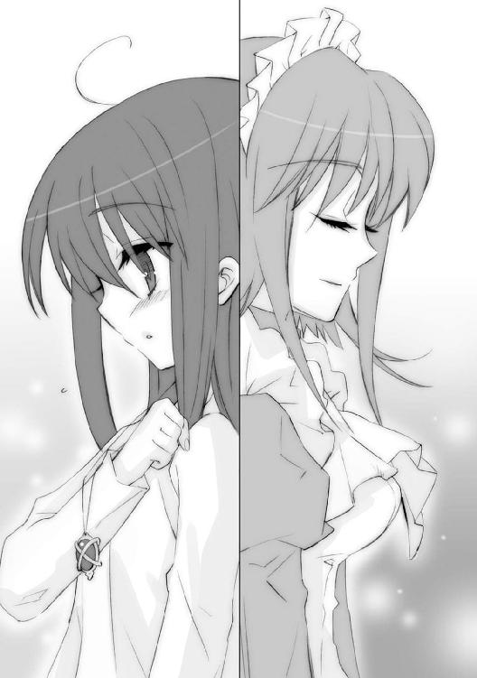

| 灼眼のシャナ 14 | |
| 高橋弥七郎 | |
| KADOKAWA / アスキー・メディアワークス (2013) | |

本書（電子版）に掲載されているコンテンツ（ソフトウェア／プログラム／データ／情報を含む）の著作権およびその他の権利は、すべて株式会社アスキー・メディアワークスおよび正当な権利を有する第三者に帰属しています。
法律の定めがある場合または権利者の明示的な承諾がある場合を除き、これらのコンテンツを複製・転載、改変・編集、翻案・翻訳、放送・出版、公衆送信（送信可能化を含む）・再配信、販売・頒布、貸与等に使用することはできません。
二学期終業式からの帰り道、
「あー、やっと冬休みだな。シャナちゃん、明後日のこと知ってるか？」
田中栄太が訊いたので、
「宗教主催者の生誕日を祝う『クリスマス』のことなら、中村公子に聞いた」
私は軽く答え、
「また変なこと吹き込まれたんじゃ......」
悠二が頬を掻いて、
「今度、この皆で集まるのは三十日ですね」
一美が微笑み、
「それだけどさ、なんでクリスマスじゃなくて晦日にパーティーなんだ？」
佐藤啓作が首を傾げ、
「ク、クリスマスはそれぞれ予定とか、あるかもしれないでしょ」
緒方真竹が早口に言い、
「ふうん。なるほど、ね──っうわ!?」
池速人が頷いた、そのとき、
緒方真竹が、ハンカチを風に攫われた。
冴え渡った青い空の中に、その白いハンカチは吸い込まれるように、飛んでいった。
強く冷たい冬の風を受け、どこまでも遠くに、軽やかに飛んでいって、なくなった。
目の前の信号は、赤だった。
みんなで追いかけていれば、なくさずに済んだのだろうか。
大通りに、車はまばらだった。
フレイムヘイズとしての力を使えば、取り戻せたのだろう。
封絶を張って、ただ跳べば。
造作もない些事を、しかしそのとき、なにもせず見送った。
それができたのに、しなかった......それだけのことだった。
プロローグ
遠くから、深くから、声が零れ落ちてくる。
「この世の〝歩いてゆけない隣〟......異世界〝紅世〟より渡り来た〝紅世の徒〟が、人間の持つこの世にあるための根源の力、〝存在の力〟を喰らい、いなかったことにしている」
「知ってるよ」
即答した。
気付けば、真っ黒な自分が、正面に立っている。
そこから、さらなる声が零れる。広い空洞を渡るように、声は反響していた。
「奪った〝存在の力〟で、〝徒〟らはこの世に不思議を自在に起こし、自由に跋扈する。彼らは、己が行為の世界へと及ぼす影響のことを考えない。そこに本来あった者の欠落により生まれた歪みが、いずれ双方の世界に齎すという──大災厄のことを」
「知ってるよ」
また、即答した。
真っ黒な自分の輪郭が、幽かに揺れる。
そこから零れてくる声はどこか虚ろで、吹き荒ぶ風鳴りのようにも聞こえる。
「その大災厄への危機感から、一部の強大な〝徒〟たる〝紅世の王〟らは、無道の同胞らを狩ると決意した。彼らは人間に......〝徒〟の存在に気付き、愛しい者を喰われ、復讐を望む......そんな人間に、全存在を〝王〟の器として捧げさせ、代わりに異能の力を与えた」
「知ってるよ。フレイムヘイズ、だろう？」
今さらの確認に、答えを先取りした。
ふと、真っ黒な自分が、平面の存在だと気付く。
虚ろな声は構わず、零れてくる。まるで、確認するような口ぶりで。
「そして〝徒〟は、存在の欠落という歪みを感じ追ってくるフレイムヘイズから逃れるため、喰らった者の残り滓から代替物〝トーチ〟を作るようになった。トーチは残された〝存在の力〟の消耗とともに、ゆっくりと役割や居場所、存在感を失い......やがて消える」
「知ってるよ。僕も、その一人だ」
寂寥と悲哀の答えに、僅かな憤怒が混じった。
真っ黒な自分が、水面に映った影だったことに気付く。
虚ろだった声に突然、感情の火が入る。僅かな憤怒が、燃え広がっていくように。
「おまえは望んだ──『この戦いを、いつか』と。ただ実現を待ち、願ったのではなく、自らそこへ向かうと、望んだ──それは、おまえだからこそなのだ」
「......」
答えに詰まった。次の問いへの予感と、既視感を抱く。
真っ黒な自分、その影の奥は、遠く、深い。
声は、熱く強く浴びせられる。
「どう、するんだ？」
「......」
答えられない。まだ、答えられるだけの材料が、ない。
真っ黒な自分が、それを映す水面が、近付いてくる。
いつしかその声は、眼前から発せられている。
「どう、したい？」
「......」
額を突き合わせていると感じるそれに、答えられない。
真っ黒な影の奥の奥、水底へと、視線が注がれる。
渇くように脅すように、それは声をぶつけてくる。
「どうやって、そこに辿り着く、坂井悠二──？」
「僕、は──」
目覚まし時計のベルが鳴って、夢は途切れた。
途切れた夢の記憶を失っていないことに、坂井悠二は初めて気が付いた。
ないはずの心臓が、痛いほどに激しく、胸を打っていた。
１ 十二月二十三日
早朝にたゆたう痛いほどの寒気を、木の枝が斬り奔る。
それは、八ヶ月前に振るわれたものより真剣で、六ヶ月前に振るわれたものよりも正確で、四ヶ月前に振るわれたものよりも重く、二ヶ月前に振るわれたものより速かった。
「──」
見た目十一、二歳と見える、しかし異常な存在感と貫禄を体操着の総身に満たす少女──フレイムヘイズ『炎髪灼眼の討ち手』シャナは、二十振る中に一つだけ混ぜた当てる打撃を、
「──っふ！」
眼前、ジャージ姿の少年に向けて打ち放つ。
その少年、宝具『零時迷子』を宿す〝ミステス〟坂井悠二は、
（シャナの髪が前に靡く、この形は）
視界に入るものから自然と、薄く思考を流した。無意識に同調した片膝から力が抜け、体は横に反らされている。
（体の死角から、素早い切り返しが来る前触れだ）
予測に違わず、振り下ろされた先から、刃（に見立てた面）を返したシャナの斬撃が猛烈な速度で跳ね上がってきた。切り返し、あるいは返し太刀と呼ばれるものである。
（まずは、よけて）
跳ね上がった軌跡は、まるで定められた道を辿るように、反らした体の横を通り抜ける。
その陰で悠二は膝へと再び力を込め、体勢を立て直していた。のみならず、引き絞った弓状の姿勢をも、反撃へと転用する。
（できた隙を、突く！）
右手に握られているのは、シャナと同じ、鍛練に使う木の枝。
その、七ヶ月前には持つことすら考えられなかったもの、五ヶ月前にやっと握ることを許されたもの、三ヶ月前はただ握っているだけだったもの、一ヶ月前にようやく振る余裕を得たものを、力の赴くままに解き放つ。
「はあっ！」
「！」
自分の斬撃をかわされたシャナは、その振り抜いた体勢の間隙へと打ち込まれる悠二の一撃に、僅か目を見開いて驚いた。驚いてなお、
「っひゅ！」
鋭く息を吹いて体を横に回転、横向きに付いた勢いに膂力を足した斬撃が再び奔って、悠二の一撃が届く前に、その手首を打つ。
パン、と乾いた打撃音が、
「いだっ!?」
悠二の叫びとともに、坂井家の庭に響いた。手から木の枝がすっぽ抜けて、勢いよく庭の茂みへと突き刺さる。
「っ、つつ──っ！」
思わず手首を押さえて飛び跳ねる少年に、
「力任せに最短距離を選んで反撃してもダメ」
仁王立ちするシャナは、遠慮容赦なく言葉をぶつけた。
「相手にどの程度、反撃のための動作的余裕が残されているか、見た目と感じた力で計って、その隙があったときだけ打ち込むようにしないと」
悠二は口を尖らせる。
「簡単に難しいこと言うなあ」
文句を言いつつ飛んだ木の枝を拾いに行く背中に、
（でも、ただ打たれるだけだった頃と違って）
声には出さず、シャナは続けていた。
（混ぜた本気の『殺し』を明確に察知して、打ち返せるほどには、上達してる）
悠二の申し出で始めた、主に身体能力の向上に充てる早朝の鍛錬は、『振り回す枝を、目を開けて見続ける』から、『前もって声をかけた一撃を避ける』へと進み、『十九回の空振りの後に繰り出す、二十回目の本命の一撃を避ける』を経て、今は『二十回の中に混ぜた本気の一撃をかわし、隙を見出したときは反撃に転じる』ところにまで至っている。
（この感覚に慣れて、『殺し』の機運を見出せるようになれば、もう〝徒〟とだって戦える）
そこまで考えてから、シャナは贔屓目を冷静に捉え直して、
（......かも）
と付け加えた。
思う間、見る先で茂みに突っ込んだ木の枝を引き抜こうとする少年、その後頭部へと、別の場所から緩い放物線を描いて、小石が飛ぶ。
「っと！」
振り向かずに悠二は避けた。
「ふむ」
と、座った縁側から石を投げた給仕服の女性が、つまらなさげに鼻を鳴らす。これは無論、『万条の仕手』ヴィルヘルミナ・カルメルである。戦技無双を謳われるフレイムヘイズたる彼女は、手塩に掛けて育て上げた少女に近づきつつある少年を、大いに警戒している。
早朝および深夜の鍛錬に加わっているのは、二人に効率的な指導を行うため、と説明しているが、その言を真に受けている者は周囲にはいない。
「集中している間なら、不意討ちへの対処も可能となったようでありますな」
妙な口調で言って、また掌の内にある小石を一つ、振り向いた悠二に放った。
「はあ」
悠二は生返事をして、これも軽くかわす。
ここしばらく、ヴィルヘルミナは悠二に不意討ちへの対処、常時警戒の体得を命題として課していた。奇襲による先制を敵に許さない、という戦いの基本を仕込むためである。
悠二も、望むところ、と熱心に取り組んでいた。シャナとの鍛錬による経験の蓄積に加え、死線を潜る実戦の数々が促した、身の内に秘める宝具の感知能力の開花、という現象も手伝って、今のように集中し警戒した状況下ならば、ある程度の対処も可能となっている。
しかしもちろん、ヴィルヘルミナはそれを褒めたりはしない。むしろ、より重い課題を突きつけてくる。
「そろそろ、鍛錬の間、という区切りを取り払うべきでありましょうか」
「平素配意」
その頭上、ヘッドドレス型の神器〝ペルソナ〟から、短く同意の声（恐らく）があがった。彼女と契約し異能の力を与える〝紅世の王〟、〝夢幻の冠帯〟ティアマトーのものである。
悠二は寒風の中で冷や汗をかく。
「そ、それは、まだ早いんじゃ」
鍛錬の間に気を張っているだけでも、相当の精神的疲労を覚えているのである。日々の暮らしをこんな極限状態で過ごすことになれば、本当に神経を病んでしまうかもしれなかった。
シャナが、できるだけ弁護に聞こえないよう気をつけて言う。
「あんまり一時に詰め込んだら、習得の効率が落ちる」
そのジャージの胸に下がるペンダントから、
「たしかに、な」
遠雷のような同意の声が響いた。黒い宝石に交差する金の輪を意匠したこれは、シャナに異能の力を与える〝紅世の王〟、〝天壌の劫火〟アラストールの意思を表出させる神器〝コキュートス〟である。
「現在に至るまでの急速な技能習得も、『零時迷子』の特性あってのこと。軽々に重荷を背負わせるのは感心せぬな」
アラストールはシャナと違って、悠二を庇ったわけではない。
（そのとおりだ）
と悠二自身も理解している。
彼は人間ではない。かつてこの御崎市を襲った〝紅世の徒〟一味に〝存在の力〟を喰われて死んだ『本物の坂井悠二』の残り滓から作られた代替物・トーチだった。それが人格や存在感を維持したまま日々を送っていられるのは、毎夜零時に宿主が一日に消耗した力を回復させるという永久機関『零時迷子』を身の内に宿した〝ミステス〟だからである。
その宝具の持つ機能の一つなのだろう、彼は〝存在の力〟の流れを、ときにはフレイムヘイズをも凌ぐほど鋭敏に感知することができた。シャナの放つ斬撃、ヴィルヘルミナによる投石の気配をある程度──気を張っている間だけとはいえ──察し得るまでになっているのは、この能力あればこその芸当である。どころか、今までの鍛錬は、この感知能力を実用に堪えるレベルで根付かせるために行われてきた、とすら言えた。
その完全な感得に至る前に、気力体力を常時消耗するような荒療治を行えば、かえって当人の感覚機能に無用の混乱を引き起こしてしまう......という理屈の面から、アラストールは意見したのだった。
言われたヴィルヘルミナは、顎に手をやって考える。
「ふむ」
元々、さほどの熱意を持って提案したわけではない、悠二へのプレッシャーを作為的に与え続ける行為（嫌がらせとも言う）の一環である。あっさりと前言を翻す。
「では、いま少し警戒の感覚を自然と纏えるようになるまで、この件は保留ということにするのであります」
「残念至極」
ティアマトーは言葉の置き土産を忘れない。
（助かった......）
とりあえずの安堵を得た悠二に向け、シャナは甘やかしていないとヴィルヘルミナらに示すため、また実際に厳しい教官として、大きく鋭く叱声を上げる。
「私もアラストールも楽をさせるために言ったんじゃない。規定時間内だけ、と決まったのなら、その間はちゃんと真剣にやって」
「分かった」
〝ミステス〟の少年は顔を引き締め、打たれて痛む手首に、改めて力を入れる。
それからさらに三度、木の枝は飛んだ。
しばらくして、
「二人とも、そろそろ時間ですよ」
と家の中から、声があがる。
悠二の母・坂井千草が、掃き出し窓を兼ねる坂井家の縁側、ヴィルヘルミナの傍らにお盆を置いた。その上に載っているのは、湯気を上げる熱々のココアを満たした三つのコップと、同じく湯気を上げる三つのおしぼりである。
「いつもいつも、お世話になっているのであります、奥様」
「いえいえ」
律義に立ち上がって礼を述べるヴィルヘルミナの『いつも』に、千草も和やかな微笑みという『いつも』で答える。
「さ、冷めないうちにどうぞ。二人もね」
「うん」
「ん」
悠二とシャナの返事が、早朝の鍛錬終了の合図だった。
千草は〝紅世〟に関することをなにも知らされていない一般人だったが、この熱心過ぎる鍛錬やヴィルヘルミナの監督に、不審の気配を見せない。悠二を鍛えてくれている、とごく表面的に捉えて、それ以上の詮索もしてこない。ただ、二人の日課に時間の区切りを持たせることだけを、自分の役目と定めているらしかった。
「ちゃんとおしぼりで手を拭いてからよ？」
二人は各々頷いて、お盆の上から指先に染みる熱さの塊を取り上げる。
シャナが、縁側に膝をついた千草の隣に、ストンと腰を下ろした。寒気に強張った頬を、広げたおしぼりでホコホコと温めつつ、尊敬する専業主婦のお腹を見る。
「まだ生まれないの？」
「ふふ、まだ五ヶ月だもの。これから、目に見えて大きくなってくるはずよ」
千草は包容力そのものという微笑みで返した。
彼女の懐妊を一同が知ったのは、ほんの一週間ほど前のことである。
海外に単身赴任していた父・坂井貫太郎の一時帰宅に際し、このことを告げられた悠二は戸惑いつつも喜び、シャナはまずその作り方について尋ねていた。
フレイムヘイズとなる者には必要のない知識だから、と教育を怠っていたヴィルヘルミナは激しく動揺し（二次性徴を迎えてから教える、との方針だったらしいが、生憎とそうなる前にシャナは彼女の元を巣立ってしまっていた）、すぐさま坂井夫婦、およびスピーカーを繋いだ携帯電話に入ったアラストールも加えた、親族会議の場を持っている。
結論としては、とりあえず生物学的な見地からの知識を与える、次にその関連情報を不用意に口にするのは甚だ不体裁であるという社会常識を持たせる、以上二点を基本方針とすることで、双方親族の合意を得た。
後者の方は、学校で吉田一美から諭されたとのことで、改めて言い聞かせる必要もなくなっていたが、前者の方、生物学的な知識は、当人にとって相当な衝撃だったらしい。
「なんだか、嫌......」
レクチャーを受けた直後、彼女は小さく呟いて、どういう本能か、育ての親たるヴィルヘルミナ（ハラハラしながら、少女のすぐ横に付き添っていた）に抱きつき、そのまま一時間余、じっとしていた。貫太郎も千草も、もちろん携帯電話の中に入ったアラストールも、幼い女の子が事を飲み込めるまで放置した......。
それから数日の間、少女は悠二から微妙に距離を取ることで、心に受けた傷を癒やし、アラストールやヴィルヘルミナ、ティアマトーらも、
「もう悠二の部屋には泊まらない」
と宣言されることで、一連の騒動については、ある程度の落着を得た......と判断した。もちろん悠二には、この教育は元より、宣言のあったことも秘されている。
ともあれ、今では彼女も、千草に軽く尋ね、新たな命が育ち生まれくる現象への好奇心を覗かせるまでとなっていた。
悠二の方も、既に死んでしまった本物の坂井悠二、どんな理由で消えるかも知れない今の自分、双方に代わって両親の元に居続けてくれる弟か妹の誕生を、寂寥感を伴った喜びの元、待ち焦がれている。
あるいは『自分が居なくなっても、両親に子供が残される』、その状況の実現した時こそが、人間としての日々を過ごした、まだ過ごしている、この御崎市から旅立つ一つの区切りになるのかもしれない。
そう、今も思いながら、
（構わないさ......生まれないより、生まれる方が、そう、ずっといい......）
少年は、熱いおしぼりの中に表情を隠す。
（それに僕は、僕らが守るべきものを、やっとこれで実感できたんだ）
この世の本当の姿を知らなかった頃には、空々しいとしか感じられなかった一つの言葉が、今は痛いほど悲しいほど、重く強く、肌に心に宿っている。
未来。
かつてアラストールは言った。
（──「新たな命の可能性、一つ一つを苦しみ齎し、またその子らが次の子らを産み育て、世界は連綿と続き広がってゆく......我らフレイムヘイズは、その世界の正常な営みを守る者なのだ」──）
と。
（僕は、少し便利な宝具を宿しただけの〝ミステス〟だけど......いつか、その営みを守る者として、シャナと一緒に......）
かつては、人間としての生を失った自分にとってそれ以外の道はない、と縋りつくように望んでいた『共に行く』という道を今、少年は自分の明確な望みとして目指しつつあった。
（......？）
そのシャナが、湯気を上げるココアのカップを手に、じっとこっちを見ている、と悠二は気付いた。
「なに？」
訊くと、そっぽを向く。
「別に」
背けた顔から、声だけが返ってきた。
「？」
未熟な少年は気付けない。
「なんでありますか」
「えっ？ さ、さあ？」
「悠二が私をジロジロ見てた」
「ほぅ......このような会話の中、どのような意図で？」
「悠ちゃん？」
「意図って、母さんまでそんな、僕は別に」
少女がまさに、自分と同じ気持ちで見つめ返していた、ということを。
入浴に朝食、という安らぎの時を終えたシャナが、ポフン、とソファーに身を沈めた。ヴィルヘルミナの用意した着替えのパンツルックが、小柄な体躯によく似合っている。
その色合いの組み合わせを、自分が用意してあげるときの参考に、と眺めていた千草が、軽く尋ねた。
「今日から冬休みだけど、シャナちゃんはこの後、予定とかあるの？」
「うん」
シャナは頷いて、ソファに深く腰かけなおす。
学期中は、早朝の鍛錬、入浴、朝食、登校という流れになるが、土日や休日には専ら千草の買い物に付き合ったり、貫太郎の書斎で本を読んだり、あるいは悠二や吉田らと何処かへ遊びに行って夕方に戻ってきたり、と坂井家の住人同然の暮らしを送っている。
ヴィルヘルミナが御崎市に現れた当初は、一般人との不用意な付き合いを警戒した彼女に、早朝の鍛錬後すぐ同居先である平井家へと呼び戻されていたが、いつの間にか元の暮らしに戻っている。今では、鍛錬直後に平井家へと戻るのは、フレイムヘイズの情報交換・支援施設たる外界宿からの書類を整理したり（これには最近、悠二も駆り出されている）、ヴィルヘルミナ個人の用事があったりする等、特別な理由がある場合に限られていた。
「今日は、もう少ししたら出かける」
「あれっ、シャナもか。どこに？」
こちらも冬休みで普段着姿の悠二が、飲み終えたコーヒーカップを置いて尋ねた。
いつもなら平明快活に回答するはずの少女は、
「っ、......」
何事か言いかけて、なぜか黙った。
「カルメルさんの用事？」
と悠二は遠回しに、フレイムヘイズとして何らかの処理案件でもあるのか、と尋ねなおしたが、それは、
「いえ。私の方からは、なにも」
と台所から暖簾を潜って居間へと入ってきたヴィルヘルミナに否定された。彼女は、頻繁に朝食をご馳走になるお礼として、その呼ばれる度に後片付けを引き受けているのである（調理は大いに不得手だったので、これは自然な役割分担だった）。
「カルメルさん、いつもありがとうございます」
「いえ、大したことでは」
千草とヴィルヘルミナ、いつもの遣り取りが交わされる間に、
「......」
シャナは黙ったまま、また悠二を見る。
「なに？」
また問われて、
「悠二、明日は──」
また答えかけ、突然ゴロンとソファに寝転んでしまう。
（一美に黙ってしちゃ、ダメだ）
そう、律儀に念じた。
悠二は途中までの言葉を何気なくなぞり、
「明日......？」
はたと気付く。
明日は十二月二十四日。世間的には、少年少女に限らず、恋やら愛やらに縁のある二人が共に過ごすのが当然と、やや以上に強迫観念染みた常識でもって語られている日。
「明日って、クリスマ──」
「う、うるさいうるさいうるさい、なんでもないの!!」
怒鳴るやシャナは飛び起きて、足早に居間から出て行ってしまった。
「出かけてくる！」
そのまま玄関へと向かう少女に、悠二は椅子から身を乗り出して叫ぶ。
「シャナ！ 僕、今日は昼から佐藤の家に行ってるからね!?」
返事のないまま、ドアの閉まる音が響いた。
（この距離でシャナが聞き逃すはずもないし、ちゃんと伝わったよな）
思って、座りなおす彼の目の前で、
「あ、あ、明日、ククククリスマス・イブ......まま、まさか......」
少女の言葉に自失して棒立ちになったヴィルヘルミナが、ぶつぶつと何やら呟いていた。
千草は黙って、過保護な元養育係のためにお茶を淹れた。
年も押し迫った朝の街路は、足を速める毎に冷たさを染み込ませてくる。
それが、まるで顔の熱さを教えられているように思えて、シャナは面白くない。
と、
「なにをそんなに慌てている」
胸元から、アラストールが尋ねた。
「......」
その声に白々しいものが含まれているように思われて、やはりシャナは面白くない。
「......知ってるくせに」
「たしかに、これから行く先と予定については知っている。数日前、清掃の折に約した協議のため、公園に向かっているのだったな？」
改めて明確に言われるとバツが悪い。誤魔化すつもりで、口を尖らせてみせた。ほとんど駄々を捏ねるつもりで、強く断言する。
「もう、決めたんだから」
「そうか」
それっきり、アラストールは口を閉じた。
フレイムヘイズたるの使命、坂井悠二への警戒、今もっと気を配らねばならないことがある等々、自分の立場を再認識させてくれる声のないことに、少女は心細さを覚える。
「......」
「......」
父や兄、師や友とも思ってきた魔神の沈黙を、重く感じる。
「......」
「......アラストール」
「なんだ」
問えば答えてくれる。その当たり前の関係を、不意に嬉しく思う『炎髪灼眼の討ち手』は、しかし口にしてから、自分が明確な問いを用意していなかったことに気付いた。
「私の、あの」
あの、何なのか。分からないまま、動揺する心中から質問を探しに探して、ようやく核心へと思い至る。
「吉田一美との、こと」
それは、一人の少女の名。
シャナが『平井ゆかり』という存在に割り込み潜り込んだ、市立御崎高校一年二組のクラスメイト。見た目のおとなしい印象とは裏腹に、ただ一つの気持ちだけを力として果敢に挑んでくる、恐るべき敵手にして、一番親しい友達。
ただ一つの気持ちとは、坂井悠二への想い。
シャナと同じ、坂井悠二への想い。
出会ってからこの方、無自覚だった時、自覚した時、近付いた時、深まった時......悠二と過ごした全ての時々において、真正面からフレイムヘイズと互角に渡り合い、一歩たりと引かずここまで一緒に来た、嫌いになれない恋敵だった。
（そういえば）
その名を口にしたシャナは、全く今さらのように、改めて確認したかった、今までなんとなく訊きそびれていた事柄に、思い当たった。
（どうして、なんだろう？）
不思議といえば不思議な、不可解といえば不可解な疑問を、率直に尋ねる。
「アラストールは、あの掃除のときも......全部、そこで聞いてたんだよね？」
「ゆえにこそ、答えた。隠されもせず、聞くなと求められてもいなかったはずだが？」
「その......いいん、だよね？」
シャナは、たった今、駄々同然に断言したことも忘れて、おずおずと許可を求めていた。千草に言って出た、アラストールが答えた、今日の用事について。
数日前、シャナは吉田に、こう訊かれた。
（──「シャナちゃんも、好きだ、って言うの？」──）
そして、はっきりと答えた。
（──「言う」──）
と。
悠二は母の懐妊を知り、心の整理を始めていた。それまで、自己の存在への恐怖で千々に乱れ、重く沈んでいた彼は、新たな出発と対峙に向かって、動き出していた。
シャナには、それが分かった。だからこそ、とある事件以来うやむやになっていた一つの言葉を、少年に届けることを決意したのだった。
吉田は覚悟した上で頷き、
（──「うん」──）
シャナももう一度、はっきりと、
（──「悠二に、好きだ、って言う」──）
確認するように宣言し、さらに、
（──「私は、ただ言うだけで終わらせない」──）
と続けていた。
ただの言葉として届けても意味がない、三人の現状は何一つ動かない、動かせない。
だから、想いの丈を悠二へとぶつけるこの機に、今の三人の関係にも決着を付ける。
彼女にとって、自分が動くとは、そういうことなのだった。
その急な話に、当初こそ狼狽の色を隠せなかった吉田一美だったが、それでもすぐに立ち直り、同意した。彼女も、シャナが告白する気になった、という最大の転機の元、坂井悠二を巡る二人の長い戦いに、一つの幕を引くことを望んだのだった。
（──「でも、どうやって？」──）
シャナには腹案があった。
（──「十二月二十四日を、『決戦』に使おうと思う」──）
（──「けっ、せん......『決戦』？ 二十四日の、クリスマス・イブに？」──）
その日、クリスマス・イブが、『愛し合う者たちが互いの気持ちを確認し合う特別な日』であることを、彼女はクラスメイトの中村公子から教わっていた。
（──「この日、悠二に選んでもらう」──）
（──「私たちの、どちらかを......？」──）
そうして二人は、とある約束を交わした。
イブ前日に当たる今日、数日をかけて考えた何らかの行為を互いに提示し、『決戦』実行のための協議を行う、と。
ところで、アラストールは以上の相談をした日に時に、シャナの胸にぶら下がっていた。
吉田一美は既に〝紅世〟の側へと足を踏み入れ、当然のこと、アラストールの存在についても知っている。彼が黙っている理由はないはずだった。でありながら、二人が悠二に関する相談を行っている間、彼はなにも言わなかった。
今、許可を求められて初めて、答えを返す。
「未熟や幼さからの暴走ではない、明確に理解感得し、結果への覚悟も持ったのであれば、我が今さら何をか言う必要もあるまい」
その声には、恋に苦しむ女の子を慮り慌てる動揺はない。恋、あるいはもっと強く、愛を抱く少女を見守る達観のみが漂っていた。
「これは全く、おまえの問題なのだから、な」
「......うん」
シャナは、その当たり前の、しかし気付き難い事実に気付かせてくれた、大好きな〝紅世〟の魔神に、強く頷いて見せる。
「だが」
と、遠雷のような声が付け加えた。
「なに？」
身構える少女へと、生真面目な声がかかる。
「吉田一美嬢との協議は、昼過ぎからのはずだ。出立には、いささか早すぎはせぬか？」
「──ふふっ」
一瞬、キョトンとしたシャナは、熱さが顔だけでなく胸にもあることを感じた。微笑みに乗せて、凛然と答える。
「いい。もう少し、アラストールと一緒に歩いてたい」
「そうか」
二人で一つのフレイムヘイズ『炎髪灼眼の討ち手』は、寒風に微塵も揺らがず、自分の道を進んで行く。
佐藤啓作の実家は、御崎市における旧地主階級の人々が集住する『旧住宅地』の中でも指折りの旧家である。見た目も豪邸と呼ぶに相応しい、地区の一画を丸ごと高い塀で囲うほどの大きな構えを持っている。
その、やはり大きく古い正門の呼び鈴を、約束どおりの時間に訪ねてきた悠二が押した。通りを抜ける風から身を守ろうと、ジャケットの襟に首を埋める。
普段、この家は昼勤のハウスキーパーらによって保守管理されており、悠二も何度か彼らに案内された経験を持つが、今日は佐藤が自分で出迎えに現れた。
「よう、待ってたよ」
なかなか見ない、作務衣に半纏の姿。和風スタイルも、なぜか彼にはよく似合う。
こっちの方が暖かそうだな、と悠二は思い、襟の内から挨拶する。
「おはよう」
「もう昼だぞ？」
「そういや、そうか」
二人、他愛無く笑って、時の重みに沈みこんだ踏み石を、ゆっくりと渡ってゆく。
と、その終点、
「坂井」
玄関の引き戸に手を掛けた佐藤が、妙な逡巡を見せた。
「あの、だな......実は」
口の重さを察して、悠二は訊く。
「あ、もしかして他にお客さんとか来てる？ 迷惑なら──」
「いや、そうなんだけど、そうでないっつーか.........だいたい、今日お前を呼んだのは俺なわけだし......」
言い澱む佐藤は、困った風に一瞬考えると、
「ええい、ま、いいだろ！」
すぐ思い切りよく戸を開けた。
「あれっ、池？」
悠二は、玄関先に腰を下ろしている、ダウンジャケットの少年を見て驚いた。
「やあ」
「珍しいな、池が佐藤の家に遊びに来てるなんて......？」
答えながら靴を脱ごうとして、池が靴を履いたままであることに気付く。
「遊びにって言うか、ちょっとした相談、かな」
「相談って、池が？」
ますます珍しい。一年二組の誇る、文武両道人格温厚信頼抜群のスーパーヒーロー『メガネマン』が、相談を持ちかけられるのではなく、持ちかけることなど、これまで聞いたためしがなかった。また、自分ではなく佐藤を相談相手に選んでいた、という事実も、中学以来の親友として、悠二には少なからずショックだった。
その横、佐藤がサンダルを脱いで、軽く誘う。
「どうする、池？ 坂井も来たし、やっぱ上がってくか？」
「いや、いいよ。最初から長居する気はなかったし」
言って、池は立った。
幽か、彼と視線を合わせた悠二は、害意とも悪意とも違う気迫のようなものを、その奥から受け取って、目を見張った。
「池......？」
自分に向けられたものの意味を、『親友だから』と率直に、声に出して尋ねるのが、彼の若さであり、甘さであり、良さでもあった。
それを分かっている池の方は、『そんな親友』を快く、羨ましく、そして疎ましく思う。
「ごめん」
唐突に謝り、
「って言うのも変かな」
また誤魔化す。
全く彼らしくない不明瞭さと、視線に込められたものの強さ、その二つから、悠二は不意に勘付くものがあった。彼がこうなる理由は、ただ一つしか思い当たらない。
（吉田さんの、ことか）
害意や悪意の陰湿さを持たない、強い気迫の正体は、純然たる敵意。
悠二は、その感情に覚えがあった。数ヶ月前、学校の屋上において行われた『感情の暴発による弾劾』という形で。あのとき池をそうさせた理由は、吉田一美に対する悠二の仕打ち──と彼は弾劾し、悠二も反論しなかった──だった。
なぜ佐藤を選んだのかは分からなかったが、自分に持ちかけることだけは絶対にできないだろう、と消極的に納得する。なにより、池は〝紅世〟のことを何も知らない。
（僕が決められない、躊躇してる理由も......いや）
優柔不断には変わりがないか、と悠二は自己弁護を止める。
吉田一美の気持ちは知っていたが、自分はトーチであり〝ミステス〟である。まともな人間とは到底言えない。しかし彼女は、自分のことを全部知った上で、好きだと言ってくれた。
シャナの気持ちにも気付かされていたが、彼女と行くしかない、そんな縋るような態度で選ぶことは不実であるように思われた。しかし今は、縋るのではなく、自ら望みつつある。
でありながら、今なお二人の気持ちに応えることができていない理由は、彼女らの方でなく自分にある。好意を向けられることが嬉しい、という子供のような感情以上の確信......おそらくは愛情というものなのだろう、その気持ちを明確に自覚できていないからだった。
自分自身の存在についての危険や問題があまりに重すぎて、それ以外の気持ちをじっくりと見つめなおす心の余裕がなかった、というのは事実だが、だとしても彼女らにとって、いつまでも宙ぶらりんなままという状況は相当に酷なことだろう。
ともあれ、母・千草の懐妊という新たな、素晴らしい出来事によって、自分の心を持っていく場所は見え始めた。悩みや苦しみは、少しずつ意欲と熱気へと変わっているように思える。
それらが即、二人に対する気持ちの整理へと直結しているわけでもなかったが。
（よし決めるぞ、応えるぞ、と思ってできるものでもない、よな）
我ながら煮え切らない、と自己嫌悪する中で突然、理解の筋が通った。
（そうか......だから、池みたいに頭のいい奴でも他人に相談をするんだ）
その池は、既に背を向け、歩き出している。
「それじゃ。三十日のパーティーの件、また纏めといてよ」
「おう、任せろって」
佐藤が明るく返し、門まで送るべく、引き戸を開けた。
庭木の匂いを乗せた寒風が吹き込んでくる。
「池──」
悠二の問い、その上から被せるように、
「明日、クリスマス・イブだな」
短くも強く、池は言い置いて、帰った。まるで悠二の葛藤に、一つの答えを示すように。
「......クリスマス、か......」
少年少女の抱く、特別な日、という幻想。
そこに光り輝いて見える、変化への機運。
実情に幻滅するほどの経験を未だ持ち得ていない少年の胸に、その言葉は期待と不安の響きを持って木霊していた。
今すぐにでも自分から、どちらか一人......あるいは双方に働きかけて、膠着した事態を動かそう、という発想の湧かない辺り、まことに不甲斐ない。
池が帰ってから、悠二は佐藤の自室に通された。数ある豪華な応接間でなく、佐藤のプライベートな部屋に入るのは、実は初めてのことだった。
もちろん、豪邸の令息（本人には言いたいこともあるらしいが）といっても同年齢の少年である。広さ以外に、特別変わったところがあるわけでもない。
奥に大きめの、シーツもグシャグシャなベッドがあり、種々雑多な雑誌が、重そうな本棚にギュウギュウと押し込められて、衣服も幾らか、テレビ前のソファに掛けられている。それらしい器具が見当たらないのに部屋が暖かいのは、板敷きが床暖房だからか。
「おー寒っ、家はだだっ広いから、廊下が冷えるんだよな」
半纏の袂に手を入れて部屋に入った佐藤は、ソファ傍らの置き台から、用意してあったらしいカップを二つ、取り上げた。
「これコーヒーだけど、いいだろ？」
「うん」
「ま、座ってくれ。上着はそこな」
「えーと」
悠二はジャケットを傍らの、コート等々で埋もれた洋服掛けに被せると、ソファから毛布をどけて──ついでに畳んで横に置いてから──座る。見れば、テーブルの上には、もうカップが置かれていた。ありがたく受け取る。
「ありがとう」
口を軽く付けたコーヒーはブラックだったが、今さら砂糖をくれと言うのも恥ずかしいので黙って飲む。とりあえずは、冷えた体を温められれば文句もなかった。
こちらは当然のようにブラックをすすっていた佐藤が、
「で、例の件、どうだった？」
いきなり訊いてくる。常は軽い調子で会話を楽しみ、場の空気を読むことに長けた彼も、真剣な話のときには気が短くなる、ということを悠二は最近になって、ようやく知った。
「うん。すぐに、とは言えないけど、脈はあると思う」
「本当か！」
佐藤は叫んだ拍子に、手のカップを危うく取り落としそうになった。
興奮する友達を落ち着かせようと、悠二は急ぎ言葉を継ぐ。
「もうしばらく、説得は必要だと思う。でも、そもそも外界宿のことを佐藤に話したのはカルメルさんだったわけだから、その辺りを梃子に動かせるんじゃないかな。アラストールも賛成してくれてるし、不可能じゃないはず──」
「そうか、よろしく頼む！」
いつものような、おどけて掌を合わせるのではない、両膝に手を付いて頭を下げるという大仰な友達の様に、悠二は焦った。
「や、やめてくれよ。これでダメだったら後が怖い」
数日前、悠二から『ヴィルヘルミナの元で、外界宿から届けられた書類の整理を手伝わされている』と聞かされた佐藤は、そこに自分も加えてくれるよう頼み込んでいた。
彼は、この世のバランスを巡るフレイムヘイズと〝徒〟の戦いに巻き込まれ、また潜り抜けてゆく中で、尊敬する女傑......今、屋敷に居候している『弔詞の詠み手』マージョリー・ドーを手助けするための、一つの道を見出していた。
フレイムヘイズの情報交換・支援施設『外界宿』である。
ヴィルヘルミナは佐藤家において開かれた酒席（要するに、マージョリーに愚痴でも聞いてもらいに来たのだろう、と悠二は睨んでいた）上で、この汎世界的な秘密組織に、ただの人間が数多く、各々の持つ才幹と職能を生かす形で加わっている、と語ったのだという。
佐藤にとってそれは、フレイムヘイズを手助けする、という少年の腕力と熱意程度ではどうにもならない望みを叶えられる、理想の道と見えたらしい。ゆえにこそ、関わるための糸口として、悠二の話に喰らい付いたのである。
喰らい付かれた悠二も、当初は友人の決意、まず一時の体験では済まないはずの望みを聞かされ驚いたが、今までの戦いで一度ならず彼の本気の程を見ている。ともかくも、とヴィルヘルミナやシャナに相談してみたのだった。
反応は、意外に悪くはなかった。
シャナは単に外界宿にそれほど馴染みがないためであるらしいが、厳格であるはずのアラストールや、うっかり語った張本人たるヴィルヘルミナとティアマトーらも、強い拒否の姿勢を見せなかった。佐藤がどの程度〝紅世〟に関わっているか、マージョリーの役に立ちたいと願っているかは、既に関係者一同のよく知るところだったのである。後者二人は、
「しばし、検討の時間を頂くのであります」
「決定猶予」
と言ったのみだったが、本当に駄目であれば、彼女らの性格上、その場で問答無用に断っているはずだった。悠二の推測するに、二人は許可することを前提に、機密情報を守れるほどの志操を佐藤が持っているか、彼に組織の支障となる背後関係はないのか、念には念を入れて審査しているものと思われた（そして、それは事実だった）。
それにもう一つ、実務に携わった身として、悠二には思うところがある。
（さすがにあの量は、カルメルさんでも処理しきれないだろうし）
外界宿は今、外部から齎された組織首脳の殲滅、内部から発生した泥沼の権力闘争、いずれも未曾有と言っていい、二つの大混乱の渦中にあった。
必然的に諸業務の滞りも深刻なレベルに達しており、本来は吟味要約されてから届く状況報告が、ほとんど一次収集の聞き込みと関連情報の羅列ままという、膨大な量として送りつけられていたのである。情報管理の中枢──悠二が書類整理の中で知ったそれは『クーベリックのオーケストラ』という奇妙な名称だった──が丸ごと、〝徒〟によるものらしき敵襲を受けて壊滅してしまったらしい。
おおよそ二週間毎に届く書類の量は、今やダンボールの大箱で三十に余る、という体たらくであり、それゆえに悠二も駆り出されて、ただの伝票やそのコピー、取るに足りない聞き込み情報、長期の天気予報から主要路線の運行ダイヤ等、明らかに不要と思われる情報の分別を担当させられる羽目となっていたのだった。
当初こそ、『読めないから』と書類の大半が日本語でないことを盾に手伝いを逃げた彼だったが、そうして断った次の回から、書類はご丁寧に日本語版も加えて、当然のことながら量をほぼ倍増させて、送られてくる仕儀となった。書類とは、増やそうと思えば幾らでも増やせるものらしい。言った以上は日本語の書類を整理せねばならなくなったという薮蛇、また『余計なことをしてくれた』というヴィルヘルミナからの非難の視線、双方の責任を一身に背負い浴びるという笑えない惨状は、今も続いている。
（信用できる人手なら、幾らあっても足りないということはないよな）
それら、自分たちの苦労と表裏一体な友人への忠告を、悠二は前もっての念押しとして、口にする。
「前も言ったけど、そんなに面白い仕事じゃないぞ？ 凄く地味で単調で、書類と睨めっこするばかりのつまらない仕事なんだ。それでも──」
「ああ。本当に、頼む」
頭を上げないまま、佐藤は求めた。
「どんなつまらないことでもいい。一度二度だけでもいい。できる内に、関われる内に、目指してるものの端っこを、この手に実感させてほしいんだ」
「佐藤？」
その口ぶりや態度が、決意による必死さだけでないことに、悠二は気付いた。
佐藤は手にしたカップを一気飲みして景気をつけて言──おうとして躊躇し、
「......」
やがて、自分で作った沈黙に耐え切れなくなったように、続ける。
「......実は、親父と話をした」
「えっ」
思わず悠二が驚きの声を上げるほどに、佐藤はこれまで自身の家族についての話題を避けてきた。その態度、および彼とより長い付き合いを持つクラスメイト・田中栄太と緒方真竹から断片的に聞いただけでも容易に察することができる、険悪と言うも生温い、断絶に近い関係であるはずだった。それが自分から、
「なんというか、俺の努力......じゃない、苦労、でもない、なんだ......まあいい、そういうヤツの結果じゃないんだけど」
などと、誰に向けてなのか、言い訳めいたことを混ぜて話している。
「とにかく一昨日に、だな。ハウスキーパーの婆さんが、電話の周りで、俺がウロウロしてるのを見かねて、親父の方から電話させたり、した結果なわけなんだけど、な......ホントあっさり、そうなっちまった」
「そう、なんだ」
としか悠二には答えようもない。
「で、だな。話を、実際にしてみたら......どうも俺の方から、意地張って会うのを拒否ってただけ......らしくてな」
まるで他人事のように言う。実際、本人にとっても予想外にすんなり進んだらしい成り行きへの実感がなさそうに見えた。
悠二は自分の常識から『良かったな』と言いかけて、危うく口を塞いだ。下手につつけば、その実感を不意に取り戻して、やり場のない鬱屈が爆発するかもしれなかった。当面は彼の言うに任せることにする。つもりだった。
「でさ、親父が『来い』って言いやがるんだ」
最初、あまりに自然な形でそれは入っていたため、引っかかりもしなかった。
「元々こっちは本家の家屋敷をそのまま残してあるってだけで、俺がいたのは完全に自分の都合だけだったんだ。親父も兄貴も、生活してるのは向こうなんだよ」
「......？」
佐藤が長々と、なにを言っているのか分からなかった悠二は、
「拍子抜けするくらい無邪気に、『もう離れてる理由もない、早くこっちで暮らせ』って言いやがった。今まで必死こいて、逆らったつもりでギャンギャン吼えてた俺って......なんだったんだよ、畜生」
「こっちで、暮らせ──、っあ!?」
鸚鵡返しに言う内に、ようやく悟った。言い草とは裏腹に、佐藤がその提案を受け入れる方向へと傾いていることに。なぜ外界宿からの書類に触れたいと願っていたかも。
「佐藤」
「ああ──転校だ。結構、遠い。早けりゃ年明けにでも、ここを出る」
「そん、な」
悠二は眩暈を覚えた。
親しい友達の転校という、眼前に現れた衝撃的な出来事だけが理由ではない。考えもしなかった、今まで当然あった光景が崩れること、それが呼び水になって全てが変化する予感に、自分でも驚くほどの動揺を覚えたのだった。
「実はな、無理矢理にでも入れてやる、って親父の言う学校が、結構なボンボンどもの集まる名門らしくてさ。どうせなら、そこで勉強なり人脈作りなり、マジに頑張ってやる、とか皮算用なんかしてる」
「それは......」
悠二の、途中で切れた質問に、
「ああ」
佐藤は不敵な笑みを閃かせた。
「いつか外界宿に、マージョリーさんの手助けに加わるため、できるところまでやる。まだ高一だ、なにかを目指すのに、遅すぎるってことはないだろ」
彼という男の面を飾る笑みには、しがらみやわだかまりを捨て、使えるものを使い、欲する場所へと突き進む、ギラギラした貪欲さが満たされている。それが、
「へへ、我ながら格好つけて吹いてんな」
子供のような照れ笑いに変わった。
悠二は、その姿に途方もない羨望を覚える。
「田中や、緒方さんたちには？」
こんなことしか言えない自分、決められずフラフラしている自分が情けなかった。
佐藤は軽さを装って、すらすらと答える。
「二人には昨日、帰りに話した。付き合いも長いし、お互いさばさばしたもんさ。池には今さっき言った。向こうの相談を聞いた代わりに、こっちも上手い勉強法とか人付き合いの仕方とか、訊いたりして。シャナちゃんと吉田ちゃんには、晦日（か）に集まるときにでも、伝えようかと思ってる」
「もう、決めてるんだな」
「ああ」
躊躇いがちな確認への、間髪入れない答え。
それは、揺るがないと決めた、強い意思の表明だった。
と、悠二は最後に、最も重要だろうことに気が付いた。
「マージョリーさんには？」
「......」
今度は一瞬、答え遅れた。
「......言った。大丈夫、今までどおり、この家には居てもらえるようにするさ」
女傑がなんと返事をしたのか、佐藤は言わなかった。とぼけるように誤魔化すように、いま二つほど不分明な表情で、無理矢理に明るい声を作る。
「なんだよ、別に消えてなくなるわけじゃないし、ちょくちょく戻ってもくるぞ？ それより、作業を手伝わせてもらう件、カルメルさんにちゃんと言っといてくれ」
「分かった。絶対に加えてくれるよう、話をつける」
別れの迫る友達に、この程度のことしかしてやれない、という今の自分の狭さ小ささに、悠二は自覚できるほどに肩を落としていた。
佐藤は、そんな友達を笑い飛ばす。やはり、無理矢理に。
「バカ。なに今日、お別れするみたいな顔してんだよ」
その扉の外、
「お願い、されちゃうらしいわよ？」
室内バーから酒瓶片手に彷徨い出た美女、栗色の長髪を軽く結い上げ、チューブドレスを纏ったフレイムヘイズ『弔詞の詠み手』マージョリー・ドーが、
「いつもみてえに意地悪したら、さぞかし恨まれんだろうなあ、ッヒヒ」
その右脇に下がった巨大な本型神器〝グリモア〟に意思を表す〝紅世の王〟、〝蹂躙の爪牙〟マルコシアスが、彼女らを探しに出てきた隣の女性へと、意地悪く話を向けた。
「......今さら、断る理由もないようでありますな」
イブ当日におけるシャナの行動を監視すべきか、男女の理に詳しい知友の許へと相談に来ていた『万条の仕手』ヴィルヘルミナ・カルメルが言い、
「受諾妥協」
その額のヘッドドレスから、〝夢幻の冠帯〟ティアマトーが短く追認した。
マージョリーは満足げに笑い、ラッパ飲みに酒を大きく煽る。
まるで、子分の決意へと、改めての祝杯を挙げるように。
御崎市西側の住宅地、新御崎通りの北に広い公園がある。
木の数こそ林と呼んで良いほどに多いが、手入れは実に雑で、秋に散った枯葉が木の根元に積もり、白けた芝の上に舞い、側溝を埋めていた。
その、枝間に冬空を透かす寒々しい並木道を、吉田一美が歩いている。ダッフルコートに厚手のボタンスカート、毛糸の手袋という、見た目にも温かな装いである。
彼女が向かっているのは、シャナと待ち合わせた公園中央の広場。目的は言うまでもない、クリスマス・イブにおける『決戦』の打ち合わせをするためだった。
数日前の掃除の時間に、シャナと決めた。
明日、坂井悠二に、二人の内、どちらかを選んでもらう。
その具体的な方法や場所等の細かな事柄を、それぞれ数日の時を置いて考えた案を、今から互いに突き合わせ、取り決め、実行に移すのである。
いかにも仰々しい『決戦』という言葉はシャナによる表現だったが、吉田にとっても、その言葉は二人の置かれた立場に全く相応しいものであるように思えた。重ね綴ってきた想いと行動が、とうとう一つの決定的な結末を迎えるのだから。
（入学してすぐからだから......八ヶ月）
この一年にも満たない、人生に占めるほんの僅かな月日で、人と人、見るもの、取り巻くもの、抱え込むもの、全てがこうも変わってしまうのか、と思わず溜め息が漏れる。
（短いかもしれない、でも、小さくはない）
最初は、一クラスメイトとして遠くから見つめるだけの、淡い気持ちだった。それが、体育の授業でシャナと悠二に助けられたという事件で、何もかもが変わった。
実はこのとき、既にシャナは吉田の親友だったはずの平井ゆかりに存在を割り込ませていたという。親友が〝徒〟の一味に喰われて死んだ、という事実は、衝撃的で悲しむべき事態のはずだったが、吉田には理屈としての納得以外、気持ちとしての喪失感をほとんど抱くことができなかった。自己嫌悪に陥った彼女に、正体を明かした後のシャナが言うには、存在を肩代わりされたのだから、失った実感を周囲は得ない、世界の法則として得ることができない、とのことだったが......。
ともかく、吉田を助けたあの時既に、宝具を宿した〝ミステス〟坂井悠二と、彼を守る『炎髪灼眼の討ち手』シャナ＝平井ゆかりが一緒にいることは至極当然──以上に、そうせねばならない間柄となっていたのだった。その『親友と思っていたフレイムヘイズ』の行動が、坂井悠二による手助けという連鎖反応を起こし、引っ込み思案な吉田にも接近させるだけの大きなきっかけを齋したのだから、世界というものは、よほど複雑にできている。
（いろんなことが、あった）
御崎アトリウム・アーチでの初デートや、校舎裏におけるシャナとの衝突という、少女としての想いを高めたりぶつけたりの、日常に過ごしていた日々。
（本当に、いろんなことが）
フレイムヘイズ『儀装の駆り手』カムシンとの出会い、ミサゴ祭りの中で坂井悠二が〝ミステス〟と知った絶望、それを超えた告白という、非日常に踏み込んだ日々。
（私は、変われただろうか）
みんなで花火をした。誕生会を開いてもらった。遊園地でデートをした。仮装行列で一緒に歩いた。他にも沢山、沢山......そして、一人の〝紅世の王〟に、出会った。
（これを、使えるほどに）
日常の中に在れば、非日常の側に踏み込まなければ、絶対にこうはならなかっただろう、一つの結果が、今、ギリシャ十字の形をしたペンダントとして胸に下がっている。
（これを、使うほどに......）
思う内に、並木道を抜けた。ベンチを外周に配した円形の広場である。中央に据えられた簡素な噴水は、冬の間は止められ、水も抜かれている。
その、水代わりの寒風と枯葉を舞わす噴水の低い縁石に、一人の少女が座って、小ぶりなメロンパンを美味しそうに頬張っていた。
顔を綻ばせて、自称するところの「カリカリモフモフ」方式で大好物を満喫している、この少女こそ、フレイムヘイズ『炎髪灼眼の討ち手』シャナ。
戦いの中で紅蓮に煌く髪と瞳は、今は黒く静かに艶めくのみ......と目で見ても吉田は一瞬、その貫禄と存在感から、炎髪灼眼の偉容を幻視していた。
「！」
と、シャナも吉田に気付いて、最後の一欠けをモグモグすること数秒、ピッと指を振って炎で洗う（清めの炎、というらしい）こと加えて一秒、口を開く。
「予定よりも早い」
「えっ？」
言葉に突かれて、ようやく吉田は我に返った。早足で歩み寄る間に、手首を返して腕時計を見れば、待ち合わせ時間には、まだ十五分余の間がある。自然と笑みが零れた。
「待ってたのはシャナちゃんなのに」
その笑みに、改めて気付かされる。いつの間にか、先のような畏敬を親近感が上回り、平井ゆかりという仮の姿を介さずとも、このフレイムヘイズの少女と友達になっていることに。
シャナも同種の笑みで返し、縁石から立ち上がった。
「うん、少し前から街を歩いてた」
（それって、この話し合いへの心構えをしてきた......ってことなのかな？）
吉田は少し買いかぶった想像をして、自分も気合を入れなおす。
「シャナちゃん」
呼びかける声の静かさ硬さは、すぐにでも話を始めることを促していた。
声の風韻だけで通じるほどにお互い近しくなっている、それを示すように、
「うん」
シャナも頷いた。
生真面目な彼女は、余計な修辞や前置きを好まない......吉田がそうと理解して早々に切り出したことが分かった。お返しとして、自分も単刀直入に話を始める。
「明日を、私たちの『決戦』の日に、決めた」
「うん」
今度は吉田が頷いた。
数日前の掃除の時間、シャナが「十二月二十四日に二人の『決戦』を行う」と表明した瞬間に、彼女は親しい友達として、直感していた。このフレイムヘイズの少女が本気で動き出すとしたら、生温い結果で終わるわけはない、と。
案の定、告白という一事だけでなく、そこからさらに先、どころか一気に勝負の雌雄を決する地点......坂井悠二の気持ちを確かめ、二人の内どちらかを選ばせる、というゴールにまで、彼女は突き進もうとしている。性急とすら言って良い、その勇猛果敢な姿勢には、驚嘆と畏怖を感じずにはいられない。
（でも、しようがない）
吉田はその性急さが半分、己の呼び寄せた結果であることも痛感している。告白、それだけなら自身が既に行っていた。でありながら、それ以降も三人の関係は縺れたままである。
（そう、なのかな？）
チクリ、と心の奥に、暗い痛みが疼いた。縺れたままだったのは、今までの三人の関係を動かすことを、他でもない自分が拒んでいたからなのではないか。いつだったか、
（──「私は、二人分の喜びが欲しい、一緒に喜び合いたいんです。坂井君が喜ばないと、私にとっては、なんの意味もないんです」──「だから、シャナちゃんと同じ場所に立ち続けよう、とだけ決めているんです。坂井君が決めるときまで、ずっと」──）
そう言って、坂井悠二の側からの行動を待つ、と決めた本当の理由は、喜びが欲しかったからではなく、自分の欲しくない結果への恐れを抱いたからではなかったか。坂井悠二の優しさに甘えて、行動によって齎される結果への重い責任を、彼に押し付けたのではないか。
不意に湧いた幾つもの疑念を、
（私は......）
胸にあるペンダントとともに押さえつける。
その眼前で、恐れを知らぬようにも見えるシャナが、
「悠二は、同時に私たち二人を前にしたら、なにもできなくなる」
当人が聞けば、グウの音も出ないだろう事実を、はっきりと言い切った。
吉田も、これには同意の頷きを返すしかない。
「うん」
「だから、私たち二人が、別々の場所で待ち合わせをして、どっちに行くかを悠二に選ばせる方法を取る。選ばれた方が、勝ち」
「どうやって、その約束をしてもらうの？」
想定していただろう問いに、シャナは即答する。
「事前の干渉を断って冷静に判断させるのなら、文書による通達が最適だと思う。私も、今日はもう、悠二の家には行かない」
吉田は、告白のための待ち合わせに冷静な判断もないんじゃ、と呆れる反面、こういうことを勝敗で判断するところがいかにもシャナちゃんらしい、という感嘆も覚えていた。それら情動に、僅か躊躇と妥協が混じる。
「その手紙には......私たちが坂井君を呼び出すことの意味も、書くの？」
「書かないと、勝負が成り立たない」
なにを今さら、という強い声。
さすがに吉田も、この弱音を恥じた。
「ごめんなさい」
「いい。それよりも、待ち合わせの場所だけど」
「うん」
埋め合わせに、と自分が考えてきた提案を口にする。
「明日、駅の北側の通り抜けで、『イルミネーションフェスタ』ってイベントがあるの」
「？」
シャナにはその説明だけでは分からない。
吉田は、ずっと温めてきたデートの計画を、この『決戦』に供する。
「新築した駅舎と繋がったショッピングモールが、イブに一斉オープンする記念のイベントなんだって。そのモールは、駅のこっち側から入って、高架向こう側のデパートに突き当たって南と北に別れる、Ｔ字型になってるの」
「！」
シャナにも、ようやく発言の意図が分かってきた。
「その、線路を抜けた先の北の端と南の端で、私とシャナちゃんが、それぞれ同じ時間に、坂井君と待ち合わせをする......っていうのは、どう？」
「いい、考えかも」
言いつつ、シャナはほとんど同意の気配を示している。
「その催しはいつから？」
「点灯開始は夜の六時から。イブだけは結構遅くまで、周りのお店も開けて人を呼ぶみたい。賑やかになるはずだし、家にも心配かけなくて済むと思う」
吉田の言う家への心配云々の意味はよく分からなかったが、ともかくシャナは頷いた。
「分かった」
少し考えて、先に決める。
「私は北側の出口にする。いい？」
「うん。それじゃ私は南側の出口だね」
吉田も頷き、
「坂井君との待ち合わせは、夜の七時でどう？」
と提案した。
シャナはもう一度頷く。
「それでいい」
「これで全部、決まったかな──」
言いかけた吉田は、
「あっ、そうだ」
もう一つ、決めるべき大事な事柄が残っていたと気付いた。
「送るって決めた手紙......家で書いて、私が坂井君の家に届けていいのかな？」
「手紙は今書けばいい。悠二に会わないように、私が届ける」
「今？」
訝しむ吉田の前で、
「うん。道具は一式持ってる」
シャナは肩だけに軽く、私物を収容する自在の黒衣『夜笠』を現して、その中から紐でくくった茶封筒とレポート用紙らしき紙束、封を切っていない黒のサインペンという、手紙に必要な筆記用具一式を取り出した。
「──」
吉田は『要項を箇条書きされた茶封筒入りのラブレター』を想像し......我に返って、思わず叫ぶ。
「──駄目だよ、そんなのじゃ！」
「えっ!?」
「二人で買いに行こう！」
「え、えっ？」
目を白黒させるライバルの手を強引に引いて、吉田は歩き出していた。
シャナの言う『決戦』、二人で歩いてきた今までの、終着点なのである。まともな形で対決できなければ、積み重ねてきたなにもかもが台無しになる。そんな、危機感にも似た気持ちが、彼女を衝き動かしていた。合理性とは別次元のまともさ......『女の子としてキッチリ』決着をつけたかったのである。
「商店街に、いいお店があるから！」
「──？ ──っ？」
手を引き、手を引かれて、二人の少女は決戦の準備に向かい、歩き出す。
池速人は、佐藤家を出てから、昼下がりの街をどこへともなく歩いていた。
御崎市における大抵の人間と同じく、散歩の行く先が決まらないときに妥協する場所......真南川の堤防に上がって、座らず止まらず、考えを集中させる行為として、ただ歩き続ける。
考えとは、言うまでもなく吉田一美のこと。
より正確には、吉田一美への好意を、何らかの形で示すこと、である。
（告白、か）
一番手っ取り早い、そしてそれ以外にない行動を、しかし池は未だに躊躇していた。
吉田一美の気持ちが坂井悠二に向けられていると、また自分の一方的な横恋慕が、心優しい彼女を困らせるだけと分かりきっていたからである。
彼女の気持ちの進展を手助けしてきたのが他ならぬ自分、という事実もある。
（馬鹿な真似をした──とは、思わないけどね）
そうやって喜ぶ彼女の姿に、強く惹かれたのだから。
（吉田さんが、坂井を好きになっていく姿に、か）
理不尽な成り行きに、思わず溜め息が出る。
（やっぱり、馬鹿な真似をした──かも）
佐藤家近くから上がった堤防は、すぐに御崎大橋へと至った。堤防を歩き続けたいのなら、橋を下から潜れば良かったが、特段執着する理由もない。そのまま橋の広い歩道に入り、自宅のある西側住宅地へと足を向ける。
橋上の街灯には、駅前から連なるクリスマスの飾りが、白だの赤だの緑だの、ゴテゴテと釣り下がり、絡み付いている。背後、市街地から零れる空々しい鈴の音が、吹き抜ける風に混じって、ウンザリするほどの寂しさを少年の身に感じさせていた。
「寒......」
思わず池は言って、ジャケットの襟に首を埋める。
（まったく、我ながら勝手な話だな）
想いは全て、吉田一美の知らぬ場所で生まれ、知らぬ場所で育っていた。当の池自身が戸惑うほどに、大きく強く。明確に自覚したのは数ヶ月も前だったが、そのときは見事に逃げを打っていた。時間稼ぎの捨て台詞だけを、偉そうに恋敵へと置いて。
（──「ま、いきなりなにがどうなるわけでもないさ。変わらないといえば、全く変わらないよ。どうも僕は態度も暴力も、乱暴なことは好きじゃないようだし」──）
まったく、今思い出しても呆れ返るほどの、酷い開き直りだった。あの時の自分に対する嘲笑、過不足なく自分を理解した上での嘲笑が、白い息に乗って口の端から漏れる。
（どうせ、吉田さんを自分が困らせるのが嫌で、なにもできなかったくせに）
なんのことはない、想いを自覚しながらも遠巻きに眺めるだけだったのは、これまで自分の在った場所......揉め事を収拾する側から、その反対側......揉め事を起こす側に回ることが怖かった、それだけが理由なのだった。
（他人には、知った風なことを散々言ってるくせに、な）
長い御崎大橋も、思考の供とするには短すぎる。もう渡りきってしまった。
池は住宅地側に降りると、そのまま真っ直ぐ、市の中央を東西に貫く新御崎通りを西へと進む。昼過ぎの大通りには、寒さのせいか人通りは少なく、車ばかりが行き来していた。
思考は望むまま、あるいは望まぬまま、深く潜ってゆく。
（ま、最近は......そうじゃ、ないらしいけど）
池速人という人間は、変化したらしい。
らしい、というのは、他人の口から、そうと知らされたためである。
（──「池君てさー、最近、ちょっと変わった？」──）
一週間ほど前、クラスメイトの藤田晴美に、そう軽く言われて初めて、彼は気付いた。
大した変化ではない。ただ少し、他人を頼り、揉め事へと近付くようになった、それだけのことだった。変化したことで動いたものは、なにもない（と自分では思う）。
しかし、変化という言葉を意識する目で、彼は新たな事実を拾い上げていた。
周りにある誰もが、彼同様に変わっていたのである。
坂井悠二も、シャナも、佐藤啓作も、田中栄太も、緒方真竹も......そして、吉田一美も、皆、最初に出会ったときの彼ら彼女らでは、なくなっていた。
坂井悠二に強い想いを抱くようになった吉田一美に惹かれたのだ、と理解し得たのも、そのときだった。少女は、強く眩しく、変わっていた。
（僕も、変わったのなら、できるかもしれない）
不確定な......今までの自分なら動かず、動けなかっただろう、曖昧な予測と願望が、自分の中で力を持ちつつあるのを、池は感じている。今日、佐藤の家に出向いて相談などしたのも、それらの為せる業だったろう。
（僕が、佐藤に、ね）
数ヶ月前は逆だったはずの、これが変化の齎した結果だった。
池が、最も気心の知れた友達である男女六人の内、佐藤啓作を相談相手としたのは、当然にして唯一の選択肢と言えた。彼が見た目以上に複雑な人間である、人の気持ちを酌むことに長けている等、個人の特質だけが理由ではない。
事が吉田一美に関することである以上、当事者である吉田一美と坂井悠二は論外であり、そのライバルであるシャナも必然的に除外される。また、自身深い悩みを抱えているらしい田中栄太には余計な負担を掛けることは躊躇われたし、その田中を気遣う緒方真竹にも同様の理由で悩みを打ち明けるわけにはいかなかった。
消去法から言っても、佐藤啓作以外にはなかったのである。
（それに、もう一つ）
信号を渡って、大通りに面した市立御崎高校の前に出る。
その塀に沿って、すぐ脇の商店街へと回るつもりだった。寄り道について一瞬考え......また商店街から響いてくる、有線放送らしいクリスマスソングが耳に入って、止めた。そうするだけの気力がなくなっている。帰って、すぐにでもベッドへと倒れ込みたかった。
（佐藤は、ただ悩んでるだけじゃなかった）
錯覚と言われればそれまでだったが、池には佐藤が悩んでいるように見えた。悩みが逡巡に類するものではなく、決意して足掻く、苦闘と煩悶の姿であるようにも。
（結果的には、正解だった、のかな？）
つい先刻、自宅を訪ね、率直に自分の悩みを打ち明けた池を、やはり佐藤は茶化さず、笑い飛ばしもしなかった。ただ、一般論からの懇切な忠言などではない、口惜しさにも似た翳を僅か滲ませた、彼自分の感想を吐いた。
「本当にやりたいんなら、できるだろ。小難しい理屈なんか、すっ飛ばしてよ」
そう言われたときは、
簡単に言ってくれるよ、
できないから困ってるんじゃないか、
などと軽い反発さえ覚えたが、悠二との鉢合わせから逃げて、一人静かに考えてみると、たしかに問題の大本はそれ一つなのだということが分かってきた。
（僕にはそういう、吉田さんへの気遣いなんて無視してしまうほどの、我武者羅な熱意が足りない、ってことなのかな）
しかし一方で、これほど自分を悩ませている気持ちを過小評価したくない、絶対に大きいはずだ、という歪んだ自負心のような気持ちもある。事実、数ヶ月もの間、吉田一美への想いは膨らみ続けている。
（それだけは、確かなんだ）
改めて確認する彼の傍らを、部活らしい、学校の塀沿いに外を回る一団が通り過ぎる。緒方真竹か田中栄太（最近、緒方に誘われて運動系の部活を見て回っているらしい）がいないか、軽く探してみたが、生憎と見当たらない。
（どんな部に興味を持ったのか、三十日に集まるときにでも訊いてみよう）
思う中、その集まりの相談をしたついでのように佐藤から聞かされた、彼らにとっての大きな事件を、小さく呟く。
（佐藤が......転校、か）
もし三学期からの急な編入が決まれば、年明け以降は彼も、引っ越しや手続きなどで忙しくなるだろう。
「もしかして、お別れパーティも兼ねるつもりかな」
湿っぽいのが嫌いな佐藤のことである、せいぜい飲んで喰っての大騒ぎをして、その中で改めて正式に発表するつもりなんだろう、と推測する。
（変わって、しまう）
それぞれの内面的なものだけではない、高校に入ってからずっと、日常のものとして見慣れていた『皆の光景』が、明らかな変化を迎えようとしている。そのことに、池は同じ頃の悠二と同じく、言い知れない寒さを覚えていた。
（こんな変わり方は、嫌だな）
その寒さから逃れるように、学校脇の商店街から家へと足を向ける。
傍に煌く飾りは全て、クリスマス一色。それらは、明後日になれば新年のそれへと変わってしまう、今だけの光景。誰にも止め得ない、変わってしまう光景だった。
（変わることが、寂しくて、怖い......吉田さんにも、そうか、僕は同じことを感──）
唐突に、思考が、足が、止まる。
風の吹き抜ける商店街を足早に行き交う人々、
その中に、彼の前に、一人の少女の姿があった。
「あっ、池君？ 池君も買い物？」
寒さの中にも温かな、その微笑み。
どこかで買い物をしたのだろう、可愛い絵柄の袋を手にした、吉田一美だった。
「池、君？」
「──」
感じた温かさ、それ自体が、変化したときの寂しさ怖さとの落差を痛感させる。
痛感させて、しかし同時に強く、この温かさを失うことへの忌避が膨れ上がる。
膨れ上がって、熱く強く、彼を衝き動かした。
他でもない、変化へと。
「──吉田さん」
冬の日暮れは早い。すっかり暗くなった空に、車の途絶えぬ大通りに、飾り立てられた街灯が色とりどりの光を振り撒いていた。
その下、冷たい上にも冷たくなった空気に、白い吐息を並んで二つ、田中栄太と緒方真竹は声とともに漏らす。
「あー、疲れた......一日でサッカーとバスケのダブルヘッダーってのは反則だろ」
「見て回っただけなのに、なに運動不足のオヤジみたいなこと言ってんの」
二人は私服に、学校の運動部が使う大きなバッグを襷がけにしている。一見、同じ部活の友達が下校しているようにも見えたが、片方の正体は、ただの見学者である。
「そうは言うけどなー、この数日で行くとこ行くとこ無理矢理に参加させられてんだ。初めてやることも多いし、疲れて当然だろ」
「けっこう器用にこなした、って聞いてるけど？」
ぼやく田中の傍らに、何気なく緒方は寄り添って笑う。
二学期の終わる寸前から、田中は各運動系の部活を見学して回っていた。勧めたのは緒方だったが、実のところその手の話は初めて持ちかけたわけでもない。今までも、
「どーせ元気は有り余ってんでしょ、部活でも始めれば？」
と冗談めかして言ったことは幾度となくあった。
田中の方は、言われる度にはぐらかして、結局一年生の二学期も終えようとしていた。
それが急に変心して、ここ数日、運動系の部活を片っ端から巡っている。
他の誰よりも、勧めた当人である緒方こそが驚いて......やがて気付くものがあった。
一連の行動は、田中栄太がなにかに迷っている、彷徨っている、その表れなのだと。
この数ヶ月、彼に常の元気がなくなっていることを察し、立ち直りの手助けをしようと心密かに誓っていた緒方は、ゆえにこの、迷って探す行為について事情を詮索せず、見学に便宜を図ったり、自分から案内したりと専らサポート役に徹していた。
それら内心を、少女はお気楽な薄皮で覆って言う。
「ホント、やればなんでもできるのよねー」
「初心者にしては、って条件付きだけどな」
「まーたまた、謙遜しちゃって」
「んなこと......うおっと！」
御崎大橋に差し掛かった二人は、橋上を襲う突風に巻かれた。
彼らの家は、御崎市東側の旧住宅地にあるため、毎朝毎夕、晴雨風雪の中、この大河と広い河川敷を眺めながら橋を渡っている。
その見慣れた一つの眺め、日暮れた冬、という寒々しさに、
「......」
ふと緒方は寂しい出来事を想起させられていた。昨日の終業式を終えた帰り道、付き合いの長い親友から聞かされた、突然の知らせを。
「あの、さ......田中」
気付けば、不審の声を、口にはすまいと思っていた問いを、漏らしていた。
「ん？」
「いきなり部活に興味持ったのって......さ、佐藤の転校と、関係あるの？」
「──」
田中は不意な質問に、思わず声を切った。黙って御崎大橋の広い歩道を歩く、長い数秒の沈黙を経て、本人にとっても意外な、恬淡とした心持ちで答える。
「いや、それとは、別だな」
緒方にとっては微妙に引っかかる物言いではありつつも、幸いその声には過度の深刻さ、険悪さは感じられなかった。代わりに力もなかったが。恐る恐る、念を押す。
「別に、ケンカとかも、してるわけじゃないんだよね？」
上目で覗き見た田中の表情には、彼女と同じ寂しさだけがあった。
「ああ、してないしてない。転校のことだって昨日、オガちゃんと一緒に、初めて聞かされたし......それに、陰でこっそりケンカして、皆の前では隠す、みたいな器用な真似、俺たちにできるわけないだろ？」
「うん」
「......そこは即答するところじゃないぞ」
クスリと笑って返した緒方は、改めての喜びを声で示す。
「良かった！ 雰囲気悪い中じゃ、誘いにくいもん」
「誘うって、なにに？」
本気で訊いてくる少年を、焦れったくも好ましく思いつつ、恋する少女はピンと人差し指を立てた。その先にあるのは、街灯の飾り。
「ヒント、明日はなんの日でしょー？」
「明日って、そりゃ──」
ようやく発言の意図に気が付いた田中は、飛びのいて手を振る。
「っよよ、夜遊びとか泊まりがけとか、そういうのはダメだからな!?」
「っなな、なにいやらしい想像してんのよ!!」
勝ち誇った顔を一転、緒方は顔を真っ赤にした。
「明日、駅の通り抜けでイルミネーションのイベントと開店セールがあるから、一緒に行こうってこと！」
「なんだ......それならそうと最初から言ってくれよ痛っ!?」
ホッとしたその脳天を、緒方はバッグでバンと叩く。
「言う前に大騒ぎしたんじゃない！ それで？」
「へ？」
「返事！」
「あ、ああ、いいよ。用事もないし」
詰め寄る迫力に押されるように、田中は頷いていた。
緒方はバッグを背負いなおして、ニカッと笑う。
「よっし、それじゃ明日、夜の六時半に駅前ターミナルの時計台前ね！」
「おう」
笑い返して、自分たちの帰る先、クリスマスの喧騒に沸き返る繁華街の脇に、変わらず暗く広がる旧住宅地へと目線をやる。
（明日か......佐藤の奴、どうするんだろう）
ここ数年は一緒にダラダラとだべって夜を明かしてたんだけど、今は転校の準備で忙しいんだろうな、引っ越しの手伝いとか要らないだろうか──とまで考えて、
（駄目だ駄目だ、なに姐さんのところに、おめおめと）
危うく思いとどまる。
彼の悩みは、全くどうしようもない根を、心に下ろしてしまっていた。
その根の名は──フレイムヘイズと〝紅世の徒〟の戦いで、緒方真竹が砕け散るという光景を目の当たりにしたことで生じた──萎縮。
因果孤立空間・封絶の中での出来事であり、その修復は、隔離される前と寸分違わず完全に為された。が、それでも、目の前で起きてしまったことの記憶、受けた衝撃は、脳裏に焼きついたまま、消えず薄れず鮮明に残っている。
常から憧れの女傑・マージョリーに付いて行く、と景気よく吼えて、実際に幾度かは怖さを乗り越えることもできた。少なくとも、そう自分では思っていた......が、一つの戦いの最中、最も見たくなかったものを見た瞬間、胸の奥で、なにかが折れた。以降の戦いでは、目を開けていることすらできなくなってしまった。
そんな自分が情けなくて、そんな自分が恥ずかしくて、マージョリーに顔を合わせることができない。佐藤が見出した外界宿という道へも、ともに行けない。悩みへの回答は未だにその端すら見えず、同じ場所でいつまでも立ち竦んでいることしかできない。
（本当に、情けない）
そう痛感して日々を送る内に、緒方がいつものように持ちかけてきた軽い提案、クラブ見学への誘いも、簡単に了承してしまっていた。怯えから遠ざけてしまった、かつての日々との隙間を、別のもので埋め、さらに広げてしまうかのように。
一度怖気づいたら、どこまでも遠ざけてしまう。こんな逃げ癖があったのか、と我ながら驚くほどに露骨すぎる、意図と行動だった。
（なんて奴だろうな......俺は）
緒方から顔を逸らすついで、田中は真南川の上流を見やる。そのあまりな暗さ寒さに、悩める少年は、夜の次は本当に朝なんだろうか、と馬鹿馬鹿しいことを思った。
悠二は、部屋のベッドに寝転んだまま、机の上の時計を見た。
（どうしたんだろう、シャナ）
既に午後の十一時半を回っている。いつもなら、とっくに午前零時前の鍛錬──主に体術を磨く早朝のそれとは違い、悠二の『零時迷子』を利用して種々の〝存在の力〟の用法を二人して試すもの──が始まっているはずの時刻だった。
（用事があるときは、前もって電話とか、してくるはずなんだけど）
その保護者にして、二人の監視者でもあるヴィルヘルミナからも、連絡が来ない。こんなことは初めてだった。
（結局、朝に出て行ったきりか）
あのときの遣り取りが、鍛練を拒否させるほどに酷いものであったとも思えない。日常茶飯事に交わす軽い口喧嘩だった......はずである。
（もしかして、出ていった用事が、まだ終わっていないとか......なんだろう？）
思いを巡らせたところで、想像以上のことはできない。
（やめたやめた、なにか〝紅世〟に関係する事件があれば、僕が感じないわけないし、もし今から来るとしたら、声をかけてくるだ──）
コトン、
（──っと、噂をすれば）
その思いに答えるように、ベランダで物音がした。
悠二は半身を起こして声をかける。
「シャナ？」
しかし、僅か感じた気配は、すぐに立ち消えてしまった。
首を傾げつつも、悠二は階下の母に聞こえないよう小声で、
「いるんだろ？ どうしたのさ、今日は」
言いつつ立ち上がり、ベランダに面した大窓を開ける。
「......？」
冷たい夜気の流れるそこに、見慣れた少女の姿はなかった。
代わりに足元、明日早朝の鍛錬も休む、というメモを添えた、
それぞれ差出人と絵柄の違う可愛い封筒が二つ、置かれていた。
２ 十二月二十四日
月も煌々と照らす真夜中の鉄道車庫。
その幾つも並び佇む車両の一つ、屋根の上に、人影が見える。
奇怪な五人組だった。
直立し、足を肩幅に広げて携帯電話をかける真ん中の人物は、神父とも見える裾長の法衣に赤いスカーフ、という痩身の男。
「どこですと？ たいそう電波の状態が悪いのですが」
その右横で、片膝を着き両手を斜めに差し上げている人物は、神父とも見える裾長の法衣に青いスカーフ、という痩身の男。
その左横で、片膝を着き両手を斜めに差し上げている人物は、神父とも見える裾長の法衣に黄のスカーフ、という痩身の男。
その右端で、片膝を着き両手を斜めに差し上げている人物は、神父とも見える裾長の法衣に緑のスカーフ、という痩身の男。
その左端で、片膝を着き両手を斜めに差し上げている人物は、神父とも見える裾長の法衣に桃のスカーフ、という痩身の男。
「いかにワタクシの任務に先行偵察が含まれているとは言え、こうも度々、期限間際の合流を繰り返されるようでは、作戦の連携にも不備が生じますぞ？ 互いに参謀閣下の信頼を受ける身、ビフロンス殿にも、そろそろご自覚頂きたい！」
五人組は、まるで歌劇の一場面のように、中央の一人が喋り、その両脇で二人ずつ、計四人が左右対称に讃えるポーズを取っているのである。奇怪と言えば、五人が五人とも、体格だけでなく面相まで同じだった。柔和な笑みを顔に張り付けた、老境の男である。
「決行は既に明日......いや、もう今日になってしまい──」
口やかましく指摘する、その背後から突然、
「電波の状態じゃあ、ない」
ガリガリ、と耳障りな雑音を混ぜた、機械のように平淡な声がかけられた。
「切ったんだ、よ......〝聚散の丁〟ザロービ」
「「「「「うわおっ!?」」」」」
ザロービと呼ばれた五人組は揃って、驚きの声を上げた。真ん中が思わず携帯電話を取り落とし、左横が危うく拾って左端に渡し、受け取った左端が懐に入れる。右横と右端は同じ向きのオーバーアクションで背後に聳えた影を見上げ、残り三人も数秒遅れてそれに倣った。
「こ、〝吼号呀〟、ビフロンス殿？」
真名と通称をご丁寧に呼びなおす真ん中のザロービに、
「いつもどおり、合流の予定時刻は、今だ」
その声だけで意地悪く笑って返す〝徒〟──〝吼号呀〟ビフロンスは、電車の屋根に立っているのではない。道床の敷かれた地面からザロービらが見上げるほどに、ぬうっと立ち上がり伸び上がっている長身なのだった。
まるで土管を縦に二つ足したような、太くも長い体を襤褸布で包み、さらに上から黄色い紐をグルグル巻きに縛っている。体の頂に載った頭は、拷問器具とも見える鉄棒で編まれた形状をしており、これを包んで樺色の火が燃え、全形はまるで巨大な蝋燭だった。その異形が、
「お前と違って、俺の気配は小さく、ない」
ガリガリガリガリ、と金属を噛み合わせるような笑い声を上げる。
「この隠れ蓑『タルンカッペ』へと、じっくり、力を注ぎながら、歩かなきゃ、ならん」
「じ、事情は、了解しておりますが......」
長くコンビを組んでいる間柄にも改めて説明するのは、半ば以上に嫌がらせからのことである。それを重々理解し、忌々しげな面持ちとなる真ん中のザロービに、右横がハンカチを差し出し、真ん中はそれを取って額を拭き、左横に返す。
「とにかく、手筈こそいつも通りですが、ワタクシどもも先の任務を終えたばかり。せめて、足並みくらいはしっかり揃えて、実行に移りませんと」
「どうした、〝聚散の丁〟ザロービ、なにを焦って、いる？」
ガリガリガリガリ、と再び金属を噛み合わせるような笑い声が上がった。
図星を刺されたザロービらは一斉に頬を引きつらせ、誤魔化すように左端から順に、ドミノ倒しのように顔を右に背ける。また真ん中だけが、口を開いた。
「あ、焦ってなどおりません、〝吼号呀〟ビフロンス殿。ただ、ワタクシども二人が大命遂行の一端に、初めて加えて頂けた、その栄誉に緊張はしておりますが」
三度、ガリガリガリガリ、という笑い声が返る。
「そんな、ことか。安心しろ、責任を持って、皆殺しにして、やる」
（それでどうやって安心しろと言うんだ......戦闘馬鹿の巡回士は、これだから困る）
口には出さず、真ん中のザロービは思った。
（あの男を発見した功績によって、恩賞のみならず、大命の一端に携わる機会が、ようやくワタクシどもにも与えられたというのに......いつものような、ただ破壊するだけの大雑把なものではない、デリケートな......）
ゴクリと五人、咽喉を合わせて唾を飲む。
（そう、大命に深く関わる一つの〝ミステス〟奪取、および邪魔な三者の始末というデリケート極まる重要任務が、今のワタクシどもには課されている......絶対に、失敗はできない）
そんな相方の心労に、微塵も気を払わない声、
「行く、ぞ」
「は、分かっておりますとも」
無神経な相方の後を慌てて追う、上擦った声、いずれもがプッツリと、途切れた。
この世に在る〝紅世の徒〟最大級の組織［仮装舞踏会］の刺客、捜索猟兵〝聚散の丁〟ザロービと巡回士〝吼号呀〟ビフロンスは、そこに在ったときの騒々しさを一瞬で掻き消して、目的地へと発つ。
取り残された月が、鉄道車庫を寂しい光で照らしていた。
夜が、『決戦』を前に更けてゆく。
深々と冷え込むその一隅、自室のベッドで、吉田一美は体を小さく丸めて悩んでいた。
（どうして）
頭まですっぽりと布団をかぶり、今日の昼下がり、シャナに手紙を託し別れた直後に起きた出来事を思い起こす。思い起こして、悩む。
（どうして、今日なの）
池速人──信頼し、尊敬してきたクラスメイト──ただ一人、普通の言葉遣いで接することのできる男友達──頭が良くて、親切で、なんでもできる少年──その彼が、
（──「明日、何か予定ってあるの？」──）
と尋ねてきた。
だから吉田は、いつものようにアドバイスをしてくれるのだろう、と大して考えを巡らせるでもなく、翌日の坂井悠二との待ち合わせについて答えたのだった。直後にあったことを思うと、自分の傲慢で無神経な態度に、腹立ちさえ覚える。
池が、いつになく強張った表情をしていたのは、目で見て分かっていた。分かっていて、その意味を考えようともしなかった。これが、傲慢や無神経でなくてなんなのだろう。
だから彼が、
（──「明日、それまでの時間でいいんだ」──）
と言ったとき、
（──「僕に、付き合ってもらえないかな」──）
と言ったとき、本当にその意図が分からず、簡単に返事などしてしまったのである。
（──「そうして、聞いてもらいたいんだ」──）
返事をしてから、彼の真意、想いを、その表情の内に知らされてしまったのである。
（──「僕が、君のことを、どう思ってるかを」──）
直接的な言葉がなかっただけだった。彼がなにを言いたかったのか、どんな想いを抱いていたのかを、吉田は衝撃とともに悟ってしまった。
（知らなかった）
胸の動悸が、辛い。
一晩という時間をくれたのは、急な告白への即答は酷だという思いやり、時間を置いて考えてもらいたいという判断からだろう。全く、彼らしい。しかし、
（私、知らなかった）
その彼のくれた時間は、むしろ吉田の胸の奥に、砂時計の砂が積もるように、苦悩の重さを加えてゆくこととなっていた。
（だって、池君は私と、坂井君の仲を、取り持ってくれてたのに）
想いがどれだけ不条理なものか、筋道や意味などを求めるだけ無駄なものか、知っていてなお......あるいは知っているからこそ、それに直面した今、戸惑わずにはいられない。彼の親切も手助けも、本物だったのである。それでも、彼は想ったに違いないのである。
（でも、なにも......今日、それを言わなくても）
クリスマス・イブだから、なのだろう。
（どうして、私が全ての想いを試される日に、試されるか決まる寸前に）
シャナも自分も、その日だからこそ『決戦』を行う。
想いを告げる日が重なるのは、ある意味当然のこと。
理屈は分かっていた。それでも、最も大事な日に、自分をそっちではない方向へと引くように想いをぶつけてきた少年に、問わずにはいられない。
（どうして？）
自分の想いをそっちへと繋ぎとめるように、胸にあるものを強く握る。
それは、縦横長さの等しい線を中央で交差させた、いわゆるギリシャ十字の形態をしたペンダント。
装飾品やお守りではない。
名は『ヒラルダ』。悠二の宿す『零時迷子』──正確にはその中に封じられた己が『永遠の恋人』ヨーハンを求め、御崎市へと襲来した〝彩飄〟フィレスより渡された宝具だった。
吉田だけが、これを使うことで、強大な〝紅世の王〟たる彼女を召還できるという。安易に味方と信じるわけにはいかない、危険な存在ではあったが、それでも『愛する男の入れ物』悠二を救いに現れることだけは、まず間違いない。『ヒラルダ』は、非常時の奥の手として、それなりに有効な宝具、と認識されていた。
ただし、それは吉田以外にとっての話。
（私は、これを）
フィレスは、この宝具が、とある一つのものを使って発動する、と彼女にだけ告げていた。
それは、宝具を使用する者の〝存在の力〟──つまり、使用すれば、彼女は死ぬ。
存在した痕跡、他人の持つ記憶、人としての全てを失って、消滅する。
ヨーハンからの頼み事を果たすため去ったフィレスの、全く不可解な行為だった。その、愛する男の危機に駆けつけるために渡したはずの宝具なのである。なのにどうして、使用者に使用を躊躇わせる、どころか忌避させるような発動条件を、わざわざ告げて去ったのか。
明らかに、矛盾した行為だった。
そして同時に、また当然、その発動条件は重い命題を二つ、吉田に突きつけている。
『恋心、ただその気持ち一つに己が存在の全てを賭けよ』
『恋する者と恋敵を残す世界のため、自己を使い果たせ』
一介の恋する少女が答えるには、背負うには、あまりに酷な、文字通りの、命題。
（これを、いつか使わなきゃいけないのに）
自分の存在を消す宝具を渡されてから二ヶ月、吉田はずっと考え、悩んできた。
フィレスが自分に託した真意、自分がこれを使えるのかという擬議について。
その、使うという決意は、偏に坂井悠二に対する想いの強さに拠っている。
（坂井君への気持ちが本物なら、使えるはず）
しかも、事態を少女一人の悩みに封じ込めてしまう理由が、もう一つあった。
発動条件を、フィレスと吉田、二人の他は誰も知らない、ということである。
他の、悠二ら友人たち、シャナらフレイムヘイズたち、いずれもが知らない。
彼女が、これを使えば死ぬことを。
誰もが、召還する相手・フィレスの方をこそ、方をのみ、危険視していた。
もし何らかの事件が起こり、皆が対処しきれない危機に晒されたとき、誰もがヨーハン＝悠二を守るために、この宝具を使ってフィレスの援護を得ることを期待し、より切実に望みさえするだろう。しかし、
（これを使ったら、私は消えて、坂井君とシャナちゃんの、二人が残る）
自分の想いを遂げて死ぬ、その結果がこれでは、あまりに悲しすぎた。といって、誰に相談しようもない。発動条件を知った者は絶対に、この宝具を取り上げる。彼女の命を救い、存在を守る、当然の行為として。しかし、
（坂井君に、もし危険が迫ったとき）
自分の意思次第で持ち続けられたはずの、彼を助けられたはずの力を、みすみす手放してしまっていたら、
（私は絶対に、私を許せなくなる）
ということも、分かっていた。しかし、
（明日、もし）
自分がシャナとの『決戦』に敗れてしまった後、今の関係を失ってしまった後も、これを使えるだけの意志の強さ、全てを捧げるだけの想いを持ち続けられるのか。
今は、迷いの中にも、そうしたいと思う気持ちが、確かに大きく存在する。
でも、明日には、どうだろうか。
保証など、どこにもない。
そんな打算的な疑問が湧くこと、疑問を抱く自分の醜さ、弱気で情けない心根に、吉田は胸が重くなる思いだった。
（だからこそ、気持ちを強く持ちたかったのに）
よりにもよって今、池速人は自分を違う方向へと引っ張ろうとしている。
彼はなにも悪くない、むしろそこまで自分を想ってくれることは嬉しい、こんな事情があるなんて分かるわけがない......気持ちは雁字搦めになって、ただ胸を重くする。
と、
（フィレスさんは）
胸に、もう一つ、深刻な疑問が重みとして加わる。
（こんな風に、私の想いが揺れ動く可能性を、考えなかったんだろうか）
どうしてこんな、確実とは正反対なもの──少女の恋心に、愛する恋人・ヨーハンの危機を救うという大事な役目を、命と引き換えにするという条件まで付けて、背負わせたのか。
吉田には、そうするよう脅した声に、自分への無条件の信頼が込められているとは思えなかった。反面、脅しの中に匂った切実さに、悪意の罠が潜んでいるようにも思えなかった。
答えの出ない疑問を、いつまでもペンダントに問いかける。
（私は明日の今頃、なにをしてるんだろう？ 坂井君と一緒に歩いてるのかな？ うん、そうであって欲しい、坂井君......）
眠りと懊悩、その境も曖昧な内に、朝が来た。
シャナとヴィルヘルミナ・カルメルは、現在、平井家名義のマンションに同居している。
「今日は、まったく出かけるのには今ひとつの曇天でありますな」
本来の住人であった平井家は、一家ごと〝徒〟の一味に喰われてトーチとなってしまい、シャナが存在に割り込んだ平井ゆかり以外、その両親は既に消え果てて久しい。
「曇天と言っても見た限りのこと、天気予報は晴れ時々雨」
シャナが一人暮らしをしていた頃は、ほとんど倉庫兼寝所としてしか機能していなかったこの家も、ヴィルヘルミナの来訪以降は、生活空間として機能するようになっている。
その、今二つほど元気のない陽光差すキッチンで、
「気温も低く、ところによっては雪まで降るとか」
「......」
シャナはテーブルにつき、対面でバターを塗りながら話し続けるヴィルヘルミナをじっと見つめている。朝食のジャムたっぷりの食パンを、カリッと一かじりした。
この、シャナにとって育ての親の一人たるフレイムヘイズは本来、語り口からも分かるように無愛想で事務的な物言いが本領である。そんな彼女が、朝に顔を合わせてから延々、相応しくない饒舌さで、どうでもいい話を続けていた。
「今日のイチゴジャムの味は、如何でありましたか？」
「......」
シャナが昨夜の鍛錬を休み、今また早朝の鍛錬に行かないと告げたことへの、討ち手として以外の部分で覚えた、不審と不安からのものであることは明白だった。坂井悠二とケンカして帰ってきた、というわけでもない落ち着いた少女の姿が、それらを助長しているらしい。内面を隠すことが本質的に不得手な彼女の動揺は、余すところなく態度に表れている。全く、非常に、分かりやすい女性だった。
「近所で手作りのジャムとマーマレードを販売しているパン屋を発見したのであります」
対するシャナはマイペースに、最後の一切れを頬張る。モグモグと、その芳醇な甘さを堪能してから飲み込み、おもむろに口を開いた。
「ヴィルヘルミナ」
「マーマレードも、ブルーベリーから夏みかんまで様々な種類が──」
話を遮るように連なる声に、シャナは強引に割って入る。
「話したいことがあるの」
「メロンパンも美味しそうなものが──」
「私、今日、悠二に好きだって言う」
ザクッ！
と同じ場所を何十と往復していたバターナイフが、パンを貫き通した。
かつてないほどの決意と確信に満ちた、強い表情のシャナ、
表せる最大限の動揺を、その顔色に見せるヴィルヘルミナ、
双方、正反対の面持ちで、しかし目を逸らさずに見つめ合う。
「なんと、言われたのでありますか」
ようやく声を絞り出した育ての親に、少女は娘としてもう一度、宣言し直す。
「私、今日、悠二に好きだって言う」
数秒して、シャナは僅か、表情の強さに不安の翳を加えた。宣言を補足する。
「今日の一九〇〇時、吉田一美と同じ時間、別の場所に悠二を呼び出す。その意味を記した手紙も、もう届けてある。悠二が私のところに来れば、私は言う」
固まっていたヴィルヘルミナは、遂に少女の声を耳に心に、入れてしまった。
「......」
バターナイフとパンを置いて、目を瞑る。
少年の躊躇と優柔不断によって、結果的に膠着していた──ヴィルヘルミナにとっては食い止められてきた──問題を、少女たちの方から打ち破ろうとしている。
そこまで来てしまった、そこまで想いが進展していたことを、彼女の中の、娘を慈しむ母たる自分が容認しそうになり、一転、
（──「ふふん、負け惜しみかい？」──）
鋭い痛みとともに、彼女の中の、人を愛した女たる自分が押し留める。その痛みへの反発と哀切の中から、突如として湧き上がった大きな憂苦と激情を瞳に宿して、『万条の仕手』は『炎髪灼眼の討ち手』に告げる。
「......危険な行動であります」
「！」
シャナは、育ての親にして大先達たるフレイムヘイズの返答を、驚きつつも真っ向から受け止めた。今までのような、恋する心の不安定な揺らぎを見せない。
そのことに、逆に衝撃を受けたヴィルヘルミナだったが、無論引く気はなかった。
「もし結果が否と出た場合、どうするのでありますか？ 今までどおり彼を守り、共に戦うことへの支障が、本当にないと言い切れるのでありますか？」
「......」
「互いのわだかまりから連携が崩れてしまえば、片や敵と戦う力に精彩を欠き、片や戦況を図る知性に曇りを表す、足を引っ張り合う間柄でしかなくなってしまうでありましょう」
耳に痛い理屈を容赦なくぶつけるヴィルヘルミナに、
「......でも、そうじゃないかもしれない」
シャナは反発する。
「今の段階で坂井悠二にその選択を強いては、事の成否がどうあれ、彼の吉田一美嬢に対する気持ちをこれまでと同じ場所に据えておくことは不可能となるはず」
それらの理屈は、無論承知していたが、
「そんなの、やってみないと、分からない」
シャナは言い張る。
「吉田一美嬢を選ぶ結果となれば、彼は彼女を守ることにさらなる気持ちを振り向けることとなるはず。そんな状況下で、今までどおりの連携を維持し続けられるとお思いでありますか」
想像したくない、その半々の可能性に、
「どうなっても、私は自分のやるべきことを疎かにはしない」
シャナは抗弁する。
「吉田一美嬢を選ばなかったとして、彼は自分への想いでここに引き込んでしまった負い目から、やはり彼女を気遣い、思いも残すでありましょう。いずれにせよ結果は同じであります」
思いもしなかった、勝った後の状況への諫言を、
「ヴィルヘルミナは悠二と一美のことを知らないから、そんな言い方ができる」
シャナは打ち消す。
「坂井悠二への妄信を起点に物事を考えるのは危険であります。あの少年も、能力的にはともかく、精神的には甚だ未熟。依存の内に、変心や裏切りがあったらどうするのでありますか」
自分と悠二への不本意な認識に、
「妄信も依存もしてない。ヴィルヘルミナは悠二が嫌いだから──」
シャナが言いかけたのを、
「いつまで分からないことを言っているのでありますか！」
立ち上がったヴィルヘルミナが怒声で遮った。
「!?」
シャナは他でもない彼女の激昂に一瞬、放心し、すぐ自分も立って怒鳴り返す。
「っ、もう全部、決まったことなんだから！」
「そうして開き直ることと現実への対処とは違うものであります!!」
「決まって動き出してることに後から文句を言うのだけはいいの!?」
「そんな受け取り方をされるのは冷静でない証拠であります！」
「なにがなんでも邪魔をしようとする方こそ冷静じゃない！」
「それとこれとは」
「違わないっ!!」
額をぶつけ合う寸前まで猛っていた二人に、
「双方静粛ッ!!」
「!!」
「!?」
ヴィルヘルミナのヘッドドレスから、常にないティアマトーの大音声が気迫の冷水として浴びせられ、場を沈黙に戻した。
不毛な口論の余韻が、キッチンに漂う。
その中、ややの間を置いて、
「ごちそうさま」
シャナが小さく言って、自分の部屋へと入っていった。
ストン、と椅子に力なく腰を落としたヴィルヘルミナに、
（繰言許可）
声に出さない声で、ティアマトーは傷心の契約者に促す。
たっぷり十秒は経ってから、
（......決まった、こと、なのでありましょうか）
ぽつりぽつりと、ヴィルヘルミナは声なき声をパートナーに漏らした。
（既刻理解）
分かっていたこと、というティアマトーの声に、一体なにを、と思いかけて、ようやく自分が急き立てられたかのように否定的意見ばかり並べたことを思い出す。なにをあれほど、逆上して怒鳴りつけてしまうくらいに焦っていたのか。
その思いは伝えていないのに、
（恐怖投影）
ティアマトーは容赦なく回答をぶつけてくる。
（恐怖......私、の？）
焦りの原因が、今は亡き、今も愛する、他の女を愛した男の声であると、ヴィルヘルミナは容易に思い至った。それが実は自覚もあった証拠だと理解して、がっくりと肩を落とした。
（この気持ちを知って欲しくなかった、と？）
遂に報われぬまま、あるいは報いとしての時を過ごした自分を、今のあの子に重ねていたのか。そうならないよう逃がそうとしたのか。もしそうだとしたら、あの諫言に見せかけた甘言は、怯懦への同調の強要という、『偉大なる者』に対する最悪の侮辱に他ならない。
（なんという、愚かな）
自己嫌悪の中で、気付く。
先の口論の中で、アラストールが一言も取り成しや弁解をしていなかったことを。彼の性格は知悉している。彼の無口は覚悟の表れだった。もう既に、実行と結果責任を契約者が負うことへの腹を、括ってしまっているのである。
（私だけが、いつまでも......）
（緩徐改善）
ゆっくり直せ、というティアマトーの声なき声が、胸に染みた。
（......では、今の私にできることは？）
「自助努力」
次に返ってきたのは無情な、音に出しての声。
十二月二十四日の御崎市は丸一日、墨を流したような曇天のまま夕刻を迎えた。気温は上がらず、クリスマス・イブは雪のない極寒、という今二つほどの情勢である。
その暮れる夕日も薄い、寒風吹き荒ぶ河川敷には、当然のように人通りがない。住宅地に沿った西の川縁、葦の群落の狭間ともなれば、なおさら人の目など皆無だった。
坂井悠二は、何度かシャナと鍛錬に訪れたこの場所で、木の枝を振っていた。突如休止となった早朝のそれに代わるように、シャナのいない場所で一人、ただひたすらに振る。
「たっ！」
モヤモヤした重圧が、胸の中に鬱積して、辛い。
「はっ！」
実のところ、昨晩は一睡もしていない。
（選ばなきゃ、いけない）
夜も眠れず、という苦悩が本当にあることを、少年は身をもって痛感していた。夜通しの懊悩は無論、朝を迎えたところで晴れたりはしない。いつしか感じていたモヤモヤも、むしろ深刻の度合いを増していた。それらを、本来の目的以外の行為であるにせよ、とにかく実際に体を動かすことで打ち払おうと、昼過ぎ、最低限の身支度を整えて家を出た。
身形は、ジャケットに厚手のズボンという、品の新しさが感じられる以外、ごくごく普通の外出着。常のジャージではないのは、この後に、行くべきところがあるからだった。
（どちらかを、僕が）
胸中、答えを隠すように立ち込めるモヤモヤを払わんと、また振る。
「はあっ！」
悩みに鬱々としつつも、また一人での鍛錬（？）でありながら、闇雲に素振りを行ったりはしない。一度ずつ、しっかりと振って、己の体捌きを検証する。
（どうも、違うな）
高い日の下にも真っ白い吐息を鋭く流し、意識して全身の体勢を整え、
（こう、だったかな）
春以来続けている鍛錬の間に、脳裏へと刻まれたシャナの動作をなぞり続ける。
木の枝が不自然なまでにしならず、空を斬った。
その瞬発力と速度は、当人も気付かぬままに、人としての域を抜けつつある。自分が、握った木の枝に〝存在の力〟を流して強度を上げていることへの自覚は、ない。
それどころか悠二は、
（いや）
まだ記憶にあるシャナの姿との齟齬に、不満を抱いてすらいた。
（腕だけで振ってちゃ駄目だ）
悠二は、踏み込みと腕の振りだけではない、そこに腰の捻りと肩の突き出しを加えた全身の動作の繋がりこそが、シャナの言う『斬撃』であるらしい、と最近になってようやく感得していた。その感得を体に実行させるまでには、まだまだかかりそうではあったが。
（こう、か!?）
力を入れない動作は、流れるように斬撃の記憶を、フレイムヘイズの幻想を追う。
強化された枝が、揺るがぬ身で鋭く音を立てた。その、なんとも例えようのない音に、シャナの斬撃と近いものを感じて、思わず頬が綻ぶ。
（よし！）
そうして次の瞬間、
（おっと、慢心は禁物）
半年以上も延々、殴られ続けた経験が、反射的に自分の緩みを叱った。
（いつもなら、シャナの一撃が飛んできて、転ばされてるところだ）
考えて、手が止まる。
夕暮れ、葦のそよぐ河川敷に一人立つ自分が、不意に自覚された。逃避にも似た孤独への欲求から、また黙して待つことの苦痛に耐えかねて、ここにやってきた理由を思い出す。
「......ふう」
白く大きく息を吐いて、枝を下ろした。空いた方の手は、ジャケットの腰ポケットに当てられている。布越しにも分かる、やや硬い手触りは、抱く悩みの理由......二人の少女から届けられた、二通の手紙だった。
（シャナと）
フレイムヘイズ『炎髪灼眼の討ち手』、生真面目で気が強くて貫禄がある反面、世慣れなさや意外な脆さが放っておけない、そんな女の子。
（吉田さん）
クラスメイト、優しくおっとりしていてか弱い印象があって、その実、思いもよらない芯の強さや頑張りを見せてくれる、そんな女の子。
（二人からの、手紙）
一つは、花のシールで封をした薄桃色の封筒。
（──『明十二月二十四日一九〇〇時、御崎市駅北のイルミネーションフェスタへ』──）
一つは、リボンのシールで封をした空色の封筒。
（──『私たち二人のどちらかに会いに来てください。届けたい言葉があります。』──）
それぞれ、通り抜け会場の北と南の出口で待っているという。
いかに鈍感な悠二と言えど、さすがにこの呼び出しがなにを意味しているのか程度は理解できた。文面にも、明記されていた。一つは直截に、もう一つは躊躇いがちに。
正直、彼自身としては、ここ数ヶ月、己の存在に関する恐怖と不安から、恋愛にまで気を回す余裕などなかった──が、今は少し違う。
（やっぱり、母さんのおめでたで、気持ちが前向きになってるんだろうか？ それが外からも分かるくらいに......だからこそ二人も、こういう行動に出たのかな？）
と推測する。危難に際して切れる、と周囲から言われる彼の頭は、こういうときにも冷静に状況を分析していた。ただし、これもいつものことだったが、事が恋愛である場合、頭で考えることには、ほとんど意味や効果はない。
むしろ、状況をしっかりと把握できたことで、いよいよ来るべきものが来た、という切迫感と緊張感ばかりが浮き彫りになってしまう。即断できない選択を迫られることの焦燥に、胸の奥で凝るモヤモヤも手伝って、気持ちは容易に落ち着かなかった。
（僕が、二人に答える、か）
手にある枝に、再び力がこもる。
今まで悠二が、二人の想いに答えられなかったのには、それなりに事情があった。
なにより自身がトーチであり〝ミステス〟であるという酷い現実があり、ゆえに自分の将来は、ほぼ決定されているといって良かった。フレイムヘイズと〝紅世の徒〟の、運命絡み合い縺れ合う、果てしない戦いの道が待っているのみである。
そのためには、シャナに付いて行くことが最も妥当な選択である。しかし、その理屈による打算や、縋るような気持ちで接することは、彼女の望む恋愛感情なのか。彼女と時を過ごす内に、もっと強く在りたい、足手纏いにならず彼女を助けたい──以上に、彼女を守りたい、とまで思うようにはなっている。それでも、
（僕は未だに、これがそうだ、って確信を持てないでいる）
一番大事なことが不分明な自分への腹立ちから、たまらず木の枝を上段から一振りした。まったく無造作に、乾いた葦の茎が幾十、鋭角に断ち切られた。
（いつか必ずある、旅立ち......か）
その一方、御崎市に叶うことなら居続けたい、と思ってもいる。生まれ育った故郷、自分が人間だった時の全てが詰まった街なのである。しかも、この地には、フレイムヘイズと〝徒〟を呼び寄せる『闘争の渦』であることの疑惑までかかっている。守らねばならない。
等々の象徴として、吉田一美という少女は在った。しかし、それは人間としての自分、かつて生きていた坂井悠二という人生への未練でしかないのではないか。既に人間ではなくなってしまった自分を『好きだ』と言ってくれた少女への、それは最大級の背信なのではないか。それら深刻な疑惑が、頭をもたげてくる。
（僕には、自分の気持ちが本物かどうかすら、分からない）
全く情けないことに、好きか、と問われれば両方ともに好きなのである。ただ、その感情に優劣を付けること、自身に確信のないまま決めることが、難しく、酷いように思われた。優柔不断が結果的に、彼女らをここまで張り合わせてきた元凶であると理解していても、なお。
また一振り、今度は踏み込んで横に薙いだ。一線を引いたように、また数十本の葦が水平に切り払われ、夕風に散る。
（でも、こうやってしっかり考えないと、いけない......接してくれる彼女たちの気持ちを）
何百回何千回と考える内に、恋愛感情の成否や有無を頭で計ることの愚かしさも理解していた。想いは本来、考えるのではなく感じねばならないものであることも、重々。
それでも、真剣になればなるほど落ち着いてしまう、という生まれついての性癖は変えられなかった。つい考えて、当然の帰結として結論を出せないまま、そこで止まってしまう。
衝動に任せて決断を下す、相手にほだされて急接近する、という一時にせよ決着をつける行動に出ることを食い止めてきた、これが最大の要因だった（その性癖のおかげで〝徒〟との戦いを生き抜くことができたのだが）。
そうしている内に結局、卑怯臆病と本人も引け目に思っていた姿勢を崩す契機は、シャナと吉田の側から与えられた。
（やっぱり二人の方が、フラフラしてる僕なんかより、ずっと強かったってことかな）
膠着状態からいきなり、なんの前触れもなく、究極の選択を求められることへの困惑も、ないではなかったが、そもそも今までが、少女たちの気持ちを一方的に受け取る、という不自然な状況だったのである。
その、どちらにも傾かず、時と場所毎に貰った感動や嬉しさを表に出し、二人の気持ちを深める形で接してきた日々への責任を取る時が、遂に来ただけのこと。決断からの逃げも、気持ちの誤魔化しも、もう散々やってきた。
（クリスマス・イブをきっかけに、か......僕も今日は、今日からは、違う）
今までの三角関係が、彼女たちからの求めと、自分の選択で、遂に終わる。
（僕の方から、ちゃんと恋愛の相手として、二人に接さなきゃいけない......今まで僕が彼女たちに貰った行為と時間への、それが何よりのお返しなんだ）
悠二は静かに、枝を放った。
夕暮れに翳る葦の中に、それは消える。
ひたすらに考え、無心に振り続けた後にもかかわらず、未だモヤモヤして落ち着かない気分が全身に薄く漂っている......そんな自分の腹の据わらなさが気に食わなかった。余計なものを振り落とすように、一声大きく叫ぶ。
「──よし、行くか!!」
意を決して、悠二は向かう。
ただ一つの出口へと。
その、踏み出した足は、しかしすぐに妨害を受けた。
これ以上ないほどに、奇妙な形で。
「......？」
泥に半ば埋もれたコンクリの階段を上がったそこ、寒風の走り抜ける堤防の上で、一人の男が悠二を待っていたのである。
「ご精が出ますな」
外国の映画で見る神父のような、裾長の法衣に赤いスカーフを翻す、痩身の男。その広い掌が、つい、と誰かを紹介するように、階段の下へと差し向けられる。
（はっ!?）
その動きを追うのではなく、感じたままに悠二は振り向いていた。
（〝紅世の徒〟!!）
目の前の男だけではない、
（いったい、なぜ）
今、自分が上がってきた階段の下に立っている、全く同じ人相に背格好、ただしスカーフだけが青い男。その男が視線を受けて、また差し出した掌の先、
（僕が、『零時迷子』が）
赤いスカーフの男と鏡写しのように自分の背後に立つ、また同じ姿、黄のスカーフの男。
（こんなに接近されるまで）
さらに黄が差し出した掌の先、堤防を挟んだ住宅地側に降りた先で、緑のスカーフの男が、
（気付けなかったんだ!?）
最後に掌を差し出した、視線をグルリと一周させたゴール──そのご褒美のように、最初に出くわした赤いスカーフの男が、再び口を開く。
「既にお気付きかとは思いますが、まず礼儀として自己紹介をば。ワタクシ、名を〝聚散の丁〟ザロービ......〝紅世の徒〟でございます」
（──〝聚散の丁〟ザロービ──〝紅世の、徒〟──!!）
心中で言葉をなぞった悠二は、ようやく事態を飲み込んだ、その瞬間、今までのような驚きや恐怖ではない、激しい憤激が溢れ出すのを感じた。
（今日──よりにもよって、今日!?）
自分たち三人が人生で最も大きな決断と結果を迎える日──と彼は一少年として思う──を、まるで狙ったかのように現れた〝徒〟に対する、全く正当かつ単純な憤激だった。
（こいつらには、クリスマスも関係ないってのか!!）
この、ある意味呑気な憤激は、幾度も戦いを踏み越えた者にとっての余裕、今さら何者が現れても立ち向かうだけと捉える度胸が芽生えていたことの証だったが、溢れた感情自体が、燃え盛る怒りである。今は、見て分かるほどの距離まで接近された自身の不覚へのそれも加わって、判別も吟味も不可能だった。面に表れるのは、ただ強烈な眼光である。
その視線を突きつけられた〝徒〟、赤いスカーフのザロービは、
「おお、怖い」
わざとらしく肩をすくめて右脇、階段の下へと視線を逸らした。
青いスカーフのザロービが階段を上がりつつ、同じ声で言葉を継ぐ。
「そう、親の仇のように睨まれますな」
（なぜ、気付けなかった？）
悠二は先刻と全く同じ、しかし全く正反対の情動の元、今の状況の意味を探る。
（......そうか）
自己に備えられた、ときにはフレイムヘイズをも凌駕するという感知能力へと全神経を集中させた、その結果、
（あまりにも存在の規模が小さいからだ）
自分を囲んで立つ四人の〝徒〟の持つ力の規模が、せいぜい強いトーチ程度しかなかったためであることを理解した。のみならず、同じ姿の四人がいる意味をも、確と掴む。
（こいつら全員、薄い力の......紐のようなもので一つに繋がってる）
つまり、この〝徒〟は大人数に見えて、実際は一人を分裂させた存在であるらしかった。
（そうやって自分の気配を小さく抑えて、敵に近付くわけか）
その一人、黄のスカーフのザロービが、後ろから笑いかける。
「乱暴なことなど、いたしませんとも」
軽薄な笑いが、まるで自らの〝存在の力〟の小ささを表しているようだった。
（一体だけなら、今までに出くわした〝徒〟とは比べ物にならない......それどころか、トーチに寄生していたラミーより、少しマシな程度か）
ふと、鍛練の時を積み重ね、多くの力を吸収した自分と比較して、
（今の僕なら、勝てるだろうか？）
という軽挙への誘惑に駆られ、
（駄目だ）
しかしすぐに、その選択肢を捨てる。
（隠密行動が得意なんだとしたら、備えをしてないわけがない）
この〝徒〟が、自らの生存への保険として、目の前に示しているもの以外の、身を守る力も備えていることはほぼ確実で、そして、自在に不思議を繰る〝徒〟のそういう力は、絶対に油断してよいものではなかった。
（だいたい、僕を狙う理由も目的も分からないままじゃ、動きようがない......どういう対処をするにせよ、こいつの意図をしっかり探ってからだ）
思う悠二に最後の、緑のスカーフのザロービが、やはり階段を上がって、言う。
「ええ、いたしませんとも。アナタには......ね」
いつしか、悠二を囲んで堤防の上、四人のザロービが緩い包囲網を形作っていた。
悠二は状況打開の材料を得るため、含みを持たせたらしい最後の言葉について尋ねる。
「僕には乱暴なことはしない、って......どういう意味だ？」
「ほっほっほ」
正面、赤いスカーフのザロービが声に出して笑った。
その、どこか白々しい、虚勢のようにも思える笑いに、悠二は僅か危機感を抱いた。大度に構える強敵の貫禄ではない、僅かな異変で激発する小物の匂いを感じ取ったからである。
案の定、右に立つ青いスカーフのザロービが、
「アナタ以外の人間には、そうではない、ということです」
言って、堤防から西に広がる住宅地を見やった。
早い冬の夕暮れの中、憩いの明かりを点す窓が、光の絨毯のように無数、広がっている。
「!!」
言葉の意味を察した悠二は、冷静な思考を一瞬止め、
（......人、質？ ──人質、だって──!?）
ほとんど初めての、卑劣かつ直接的な手段に気付き、
「この周囲に、どれだけ人間がいるか、少し考えればお分かりでしょ──」
背後に在る黄のスカーフのザロービが喋る間に一歩、
「お前ら」
ズン、
と恐ろしく重い憤怒の一歩を、前に踏み出していた。
ザロービらは、この坂井悠二の保有する〝存在の力〟の量が〝紅世の王〟並みに強大なものであることを、今さらのように感じ取っていた。怒りに身を任せた彼と、トーチよりややマシ程度の力しか持たない自分たちがまともに組み合えば、間違いなく例えどおりの一ひねりにされるだろうことも、同時に。
「──う、っ！」
動揺の声を絞り出して、正面に位置していた赤いスカーフのザロービが消える。
正確には、他の分身と繋がる紐に引かれ、青と合体していた。
その証か、スカーフが赤と青で半々になっている。
（！）
奇怪な現象に驚く悠二へと、
「おお、お待ちなさい！」
左、緑のスカーフのザロービが、慌てて制止の声を投げつける。
「ワタクシどもに危害を加えれば、アナタは必ず後悔しますぞ!?」
（......なるほど）
悠二は、その弱腰な挙動と起こった現象、恐怖らしい感情の波が紐を伝った感覚、全てを統合して、ようやく〝聚散の丁〟ザロービという〝徒〟の全体像を掴んだ。
（そういう、ことか）
掴んで、しかしそれゆえに、動けなくなった。
悠二はこみ上げる怒りを必死に抑え、可能な限り冷静に聞こえる声とともに、
「もう一人、向こうに隠れているからか？」
正鵠の指摘として、住宅地の一角を指差した。
「「「っな!?」」」
赤青、黄、緑の三人が三人とも同じ、両腕をそれぞれ大きく上と左に伸ばした、Ｌの字を作るようなポーズで驚愕した。
先の紐伝いに感情の波が一つ、ここから僅か離れた住宅地の中へと流れていたのである。悠二が感覚を研ぎ澄まして掴めば、たしかにもう一体、同程度の存在が潜んでいる。これが、懸念していた敵の保険、少なくともその一つであることに間違いはなかった。
例え、神速の手際で目の前にある四人（いや、今は三人に減っているか）を一気に倒す幸運が得られたとしても、残った一体が脅した事柄......無関係な人々を襲い、喰らうという惨劇を実行に移すだろう。
（......ん？ まさか）
不意に悠二は、この〝徒〟の気配の小ささと配置の広さから、思い至る。
（今朝から感じてた嫌なモヤモヤは、こっちだったのか？）
悩みに悩んだ恋愛への重圧と思い込んでいたものが、全くの見当違い......〝紅世の徒〟接近の検知だったというのでは、ジョークとして全く笑えず、事実とすればもっと笑えなかった。自分の、あまりに非センチメンタリズムな在り様に、思わず怒りも萎えるほどゲンナリする。
対する赤青のザロービは、ようやく動揺を隠して、余裕の風を見せる。
「なるほど、たしかに恐ろしく鋭敏な感覚をお供えのようですな」
隠していた手品のタネを早々に見抜かれはしたものの、自分の絶対的優位を、他でもない悠二の理解力から確信していた。背後の黄が、安堵混じりに勝ち誇る。
「そう、お察しの通り、ワタクシどもに危害を加えれば、残ったもう一人が、周囲の人間を、アナタの後悔に見合うだけの数、喰らうことになるでしょう」
「ほーっほっほ！ ワタクシどもに反抗の意を示すことが、いかに危険であるか......お分かり頂けましたかな？」
悠二は、緑のあげた陳腐な勝利宣言からも情報を引き出そうと、思考を最速で回転させる。
（たしかに、だって？）
伝聞を思わせる言葉遣い。そこに、五人合わせてもさほど大きな力を持つ〝徒〟ではないという事実、いきなり自分を襲って消さないという迂遠さ、隠密行動に長けた能力という要因が合わさって、一つの結論が導き出される。ヴィルヘルミナとの書類整理で幾度となく見かけ、また説明も受けた構成員の総称──
「あんた、［仮装舞踏会］の捜索猟兵、ってやつか」
「「「!!」」」
また〝徒〟は三人揃ったポーズ、さっきとは逆、鏡写しのＬの字を上と右に伸ばした両腕で作り、大きな驚きを示した。
「ほほ、ほーっほっほ！」
明らかに誤魔化しと分かる笑い声とともに、赤青のザロービが、再び赤と青に分裂する。四方から声を合わせて、恫喝するように前傾の姿勢を取った。
「「「「なんて頭の回転の速い方だ。まあ、その方が話も早くて助かりますが」」」」
声に囲まれて、しかし悠二は、今すぐに消され殺されることはないだろう、と達観している。回りくどく接触を試みてくるほどである。危害を加えるつもりなら、こうもベラベラと、念を押すような脅し文句で縛ったりはしないはずだった。しかし、
（だとすると、なおさらマズいな）
悠二は、［仮装舞踏会］の捜索猟兵が通常、単独で敵と接触を図ることはない、という常識についても学んでいた。その敵を誘導する先には大抵、強大な戦闘力を持つ巡回士という〝徒〟もいるはずなのである。とりあえず、口の軽いザロービから［仮装舞踏会］の構成員であることの確認は取ったが、より警戒すべき巡回士の気配は捕捉できなかった。
（このザロービには、シャナたちみたいな凄いフレイムヘイズ三人が揃う街に、単独で仕掛けてくるほどの度胸も実力もないだろう......近くにいるはずの巡回士ってのは、気配を隠す自在法の類でも使っているのか）
今までの接触の様相から、そう推し量り、
（狙いは僕の誘拐、それともシャナたちの抹殺......？）
と考えて、すぐに前者の可能性を否定する。
（今さら、そんなことをする意味はない）
二ヶ月前に、乱戦と言っていい、一連の戦いがあった。
悠二の中に封じられていた愛する男、秘宝『零時迷子』本来の持ち主たる〝ミステス〟、『永遠の恋人』ヨーハンの奪回に現れた〝彩飄〟フィレス。
フィレスが封印を解こうとした瞬間、彼女の胸を刺し貫いた、歪で空っぽの西洋鎧──『弔詞の詠み手』マージョリー・ドーの仇敵でもある──謎の〝徒〟『銀』。
そして、『銀』を鎮めるためにやってきたらしい［仮装舞踏会］三柱臣の一人、〝頂の座〟ヘカテー、およびその護衛として付き添った〝嵐蹄〟フェコルー。
これら、まるで連鎖反応のように次々と、とんでもない連中が立て続けに現れた、一つの結果として、悠二はヘカテーに、自分の（というより『零時迷子』の）位置を彼女らに知らせる刻印のようなものを付けられていた。
もし新たな用が［仮装舞踏会］の側にできたとして、彼らの企みに重要な役割を果たすと思われる『零時迷子』の回収に、このザロービのような、万が一にも妨害されるような三下を案内役に送ってくるわけがない。だいたい、『零時迷子』だけが必要なら、強大な力を持つだろう巡回士でも使って、さっさと分解を試みているはずだった。
（じゃあ、やっぱり僕を利用するときに邪魔な、フレイムヘイズの排除が目的か？）
そう、ひとまずは結論付けたが、確証があるわけではなく、またその手口も分からない。
（当面、こいつの出方を観察しながら、シャナたちに知らせる方法を考えよう）
密かに決める悠二の前で、
「お分かりいただけたようでなにより」
ザロービは四方揃って腰を折り、四組の手で一つの方向へと歩くよう促した。
「それでは、ご同行願いましょう、〝ミステス〟坂井悠二殿」
平井家の一室、襖をノックするくぐもった音が、部屋に響いた。
ベッドに寝転がり、その手にヴィルヘルミナにも中身を見せない秘密の小箱──千代紙を張った、掌大の葛篭──を遊ばせていたシャナは、短く答える。
「なに」
機嫌の悪い風を装ったつもりの声は、思った以上に剣呑だった。意地悪すぎたかな、と子供っぽい仕返しをした自分の性根を自己嫌悪する。
そのせいか、ヴィルヘルミナは数秒の間を空けてから答えた。平静な声で。
「お出かけは、何時でありますか？」
「......」
シャナは声に背中を向けるように寝返りを打ち、小箱を脇の棚に置くついでに答える。
「待ち合わせは一九〇〇時だから、一八〇〇時には出るつもり」
ドアは閉まったままだったが、その向こうに佇む気配には、怒りを抑えた様子も、悲しみを隠した雰囲気もなかった。ただ淡々と、事務的な声が返ってくる。
「この度は、互いの立場上、奥様に手伝って頂くわけにも行かないのでありましょう？ ならば、ご自身で仕度をするより他にない、と思うのでありますが」
（あっ）
シャナは言われて初めて気が付いた。
今度ばかりは、けじめとして坂井千草の助力を仰ぐつもりがない。といって、自分でその手の準備などしたことがなかった。今日こそまさに、悠二を迎えて行う『決戦』である。できれば悠二には、おめかしした自分を見てもらいたかった。それに、自分の格好が貧相だったりしたら、そうではないだろう容儀を整えているはずの吉田一美に失礼である......と昨日の手紙の件で思うようになっている。
（どうしよう）
今さら喧嘩したヴィルヘルミナも頼れない、と窮した少女に、
「お早く、希望の色なり様式なりを申告して頂かねば、用意が間に合わないのであります」
その当人があっさりと言った。
「え......!?」
喜びに緩みかけたその声を、しかし厳しさが打つ。
「いささか、私自身の繰り言や弱音が混入したとは言え、忠言の内幾つかへの妥当性は、認めて頂けると思っているのであります」
「......」
シャナは返事をしない。したくなかった。
ヴィルヘルミナは厳しく、しかしできるだけ感情を込めない訓戒を、有無を言わせぬ制止ではない訓戒を、大切な少女に贈る。
「それらをしっかり踏まえた上で、貴女の勝負を存分に行われるのであれば、私が制すべき理由はないのであります」
「............うん」
その精一杯の歩み寄りに、雪の解け始めるように僅か、シャナは答えた。答えて、仲直りへの躊躇からの弱い声を恥じ、もう一度しっかりと。
「うん」
襖越しに、ヴィルヘルミナが少し笑った。

シャナにはそれが、はっきりと分かった。
「では、ご要望を」
「......ん、と」
ただし、肝心の意見、
「なんか、......赤いの、とか」
自分がなにを着てなにを飾ればよいのかは、よく分からない。
どこの店先もキラキラしたモールで飾り立てられ、電飾をちりばめた種々のツリーが立ち並んでいる。ごった返す人ごみには看板を掲げた男女のサンタが幾十人と混じり、行き交っている。家路を急ぐ父母の手には、綺麗に包装された金ぴかの玩具の剣や、狸か猫かというぬいぐるみ等のプレゼントが抱えられている。
それぞれが、それぞれの人生を抱いて生きる人々の姿、クリスマスという今を切り取って眺めることのできる、人々の生きる姿だった。
悠二はザロービらに囲まれて、これらの喧騒に満ちる大通りの歩道を、駅に向かって歩いていた。見える全てを打ち壊す存在、〝紅世の徒〟の危険性に硬まる表情の奥で、静かに周囲を観察し、その中に撃退の手がかりを見出せないか、自身に備わる全てを動員して考える。
（僕の監視が、案外手馴れてる感じだな）
その傍ら、ぴったりと付き添っているのは五人の内の一人、赤いスカーフのザロービだけで、他はそれぞれ、ややの後方に一人、反対側の歩道にまた距離を開けた二人、そしてかなりの後方に保険の一人、という配置で散り、等距離を保ったまま誘導していた。
（まあ、当然か......僕が変な気を起こして、五分の四人にせよ、一網打尽に片付けられちゃ適わないだろうからな）
今のところザロービは、同行以外の要求をしていない。
（やっぱり、巡回士の〝徒〟が待ち受ける場所に僕を連れて行って、皆を誘い込む餌にするつもりなのか）
という順当かつ捻りのない悠二の思案に違わず、
「どうぞ、ワタクシの導きに従い、とある場所に向かって頂きたいのです」
言った、それだけである。
ただし、何らかの手段で通報されることを用心してか、行き先は明言しなかった。明言したのは、人質の扱いについて。悠二のことではない。周りに溢れる人ごみ、その全てである。
もし悠二が反抗の姿勢、フレイムヘイズに危機を知らせるような挙動を見せれば、
「謹んで、周囲の人間たちを喰らわせて頂きます」
「フレイムヘイズが駆けつけてくるまでの数分間で」
「いったい何十人、この世から零れ落ちるでしょうな？」
「封絶を張っても、トーチとなった者は元に戻りませんぞ？」
とのことだった。遠巻きに囲む三人に加え、かなり後方にあと一人、控えている。迂闊に動けば、守るべき街で、知られざる大量虐殺が始まる。従う他なかった。当面は。
悠二は歩きながら、シャナたちにこの襲来を知らせる手段を模索していた。
（早く、なんとかしないと）
こうして敵の導くまま、連れて行かれてしまえば、そこで待ち構えているはずの巡回士の罠に、みすみすシャナたちを踏み込ませてしまう。巡回士の張る罠に悠二という人質、二重に不意を討たれての開戦は、いかに腕利きのフレイムヘイズたちといえども不利に過ぎるだろう。
（でも、自在法を使って知らせる手段は、こいつらの監視下じゃ不可能だ）
実のところ、悠二はジャケットの内側、胸ポケットに栞を二つ、挿していた。これは『弔詞の詠み手』マージョリー・ドーから貰った非常用の自在法が込められたもので、攻防に一枚ずつの備えとなっている、いわば切り札だった。また彼自身、それに頼らずとも、封絶を始め初歩的な自在法なら、使用は可能である。
ただ、ザロービが言うように、それら反抗と見做される不審な挙動は、即座に御崎市民の虐殺へと繋がってしまう。
（せめて、襲撃を知らせるか、目的地を突き止めるか、どちらかができれば......）
きらびやかに賑やかに、クリスマス・イブを祝う、というより口実・肴として騒ぎに騒ぐ雑踏の中、一人と、五人たる一人は、無言のまま歩き続ける。
そうしてしばらく、重い足を引き摺っていた悠二は、
「──」
突然、咽喉も裂けんばかりの大声で絶叫していた。
「──っうわああああああああああああああああああああああああああああ──!!」
「っな!?」
思わず声を上げた赤スカーフのザロービだけでなく、周りに行き交う人々も、いきなりの奇声にギョッとなった。
「くっそおおおおおおおおおおおおおおおおおおおおおおおおおおおお──!!」
群集の、一つ目の叫びへの驚きが、二つ目のそれで注目に変化して、ザロービは焦る。
「い、いったい、なにをしているのです!!」
軽く脅すつもりで少年の胸倉を掴み、黙らせる。俄かに注目の的となったことで、フレイムヘイズに発見されるなど情勢の変化が起きないか、遠巻きに囲む四人ともども周囲をキョロキョロと見回し、一斉に安堵の吐息を漏らす。
「「「「「......ふう」」」」」
幸い、付近には、奇声を上げた少年を不審と不安交じりに注視する人々がいるばかりで、フレイムヘイズの気配はなかった。万が一、この〝ミステス〟にのみ感知が可能な遠距離に在った場合でも、雑踏の中で上げた声程度なら、まず届きはしない。これら状況を確かめてから、改めてこの奇矯な〝ミステス〟を制する。
「お静かに、気でも触れたのですか!?」
「このまま付いていったら、どうせ皆を引っ掛ける大きな罠があるんだろ!?」
思わぬことに、大声で怒鳴り返された。
「それは、どうですかな」
動揺こそ隠せなかったが、もちろんこっちが慌てた隙を突いてのことだろう、不用意な質問に迂闊な答えを返すほど、ザロービも間抜けではない。
と心中自負した彼の前で、
「だったら今──ッ」
また叫ぼうとしてか、悠二が息を吸った。
「っと!?」
慌ててザロービはその肩を掴む。
「そ、それ以上やったら、本当に喰らいますよ！」
「──ふぅ──分かったよ、くそっ！」
せめての悪態を吐いて、悠二は再び歩き出した。自分を注目する周りにジロジロと睨みを利かせつつ、その貫禄に任せて人ごみを断ち割ってゆく。
（な、なんて奴だ）
ザロービは、自分を脅かしっぱなしの凶暴な〝ミステス〟への警戒をより強め、四人による包囲の輪を、少し縮めた。
悠二は連行される身を、強引に引っ張ってゆく。
突然の絶叫に驚き、二度目で誰かを突き止めて見れば、坂井悠二がそこにいた。
（坂井......？）
心配から思わず駆け寄ろうとして、彼が奇妙な、神父だか牧師だかの格好をした、黒服の男と一緒であることに気付く。
（誰だ、あいつ）
明らかに日本人ではないその男に、坂井悠二は胸倉を掴まれた。
やはりケンカか、と思い、咄嗟に助太刀に入ろうとしたそのとき、
「このまま付いていったら、どうせ皆を引っ掛ける大きな罠があるんだろ!?」
「!?」
三度の叫びに思わず立ち止まった。
（罠？ 皆を引っ掛ける？）
今さらのように、こんなところで喧嘩をすること自体、彼らしくないと気付く。今も周りの目を気にせず、その神父らしい男に恐ろしい剣幕で迫っていた。その神父が反発して、ようやく静まったかと思えば、今度は周りの通行人へとガンを付けて回っている。
（なんなんだ、いったい）
荒れている、と言うには、余りに彼の普段の性格にそぐわなかった。どちらかと言えば、彼は怒れば静かになるタイプだったはず......。
と、
「──!?」
坂井悠二が、そのガン付けの中で自分に視線を注いできた。どうやら、気付かぬ振りをしていたものらしい。数秒、と言うほどもない視線の固定があって、すぐに別の方向へと、全く定まらない風に視線は泳ぐ。
（なんで俺が分かってんのに、ああいう）
とりとめなく感じたことが、
（俺が知り合いだってことがバレたらマズい？）
僅かずつ考えとして深まり、
（いや、マズいんじゃなくて......ヤバ、い......？）
必死の視線から危機感を拾い上げる。
（──っあ!?）
まさか、と思い坂井悠二の後を、周囲で騒ぐ人々に紛れて見送る。
少年の袖を強く掴み引っ張ってゆく、外人の神父らしき老境の男。
一介の高校生が、そうそう知り合いになるとも思えない類の人間。
（まさか）
その、知り合うとも思えない類の人間に、心当たりがあった。
両極端な、二つの心当たりが。
一つは、この世を陰から守る、異能の戦士たち。
もう一つは、この世を陰から襲う、化け物たち。
（まさか......）
坂井悠二がその隣において、知り合いだと分からないよう隠すのは、どちらか。
（──「このまま付いていったら、どうせ皆を引っ掛ける大きな罠があるんだろ!?」──）
考えるまでもなかった。
（......〝紅世〟の......）
その言葉の端を思い浮かべただけで、膝がガクガクと震えだす。脳裏に、次々と眼前で繰り広げられた惨劇の光景がフラッシュバックする。燃え上がる校舎、粉々になる露店、噴煙に巻かれる校庭、血すらも焦がして千切れ飛ぶ生徒や教師たち、そして──
炎の中で砕け散る一人の少女。
（また、来たってのか......!!）
反射的に全てをシャットダウンしそうになる。座り込んで耳を塞ぎ目を瞑ることへの耐え難い衝動が襲い掛かってくる。その、知らずよろけたところを誰かに、
「おい、気をつけろよ」
ドン、と押された。
「っく......ぁ」
歩道のガードレールに倒れ込むことで、危うく車道に転がり出る危険を避ける。椅子代わりに腰を落ち着けて、心身の回復を図ろうとする、その眼前で、
「──!?」
在り得ないことが起こった。
全く同じ顔形、同じ服装の神父が通り過ぎたのである。
周りを見れば、既に坂井悠二が叫んだ騒ぎを知る者はいない。行き交う人々の中にそれは紛れ、誰からも注目されることはなくなっていた。
（間違いない、奴らだ）
坂井悠二が〝紅世の徒〟と一緒に歩いて......否、どこかに連れてゆかれそうになっている。そして、坂井悠二は〝徒〟に気付かれないよう、自分に必死の視線を向けてきた。彼の叫びは皆に向けた警告と救助要請であり、そしてそれは間違いなく、自分に託されたのである。
（やめてくれ）
折れた心が、動くことのへの悲鳴を上げる。
（もう、懲り懲りなんだ）
なにかの間違いで、あの光景がもう一度、修復ができない場所で起こったら。
かつてそんな場所で壊された御崎市駅のように、作り直せるものならいい。
それが、もし人間だったら......知り合いだったら......緒方真竹だったら。
（駄目だ、俺は、駄目なんだ）
恐怖に足がすくんで、前に進めない。
そんな萎えた気持ちの中に、ただ一つ、
（坂井が、ヤバい）
その純朴な心痛だけが、シャットダウンを辛うじて食い止めていた。
友達が〝紅世の徒〟に連れ去られつつある──彼は自分に助けを求めた──今すぐ助けを呼びに走らねばならない──〝紅世の徒〟を払いのけられる異能の力を持つ人たちに──フレイムヘイズ『弔詞の詠み手』マージョリー・ドーに。
当たり前の結論、それだけしかない方法を、なおも嫌忌の闇が覆う。
しかし、友達が危ない。
（今さら、どの面提げて？）
憧れの人に、口先だけは偉そうに、どこまでも付いていくなどと放言しておきながら......苦難一つ、恐怖一つで敢え無く挫けた自分が、どうして再び顔を合わせられるだろう。
しかし、友達が現に危ない。
（──）
脳裏に炎の惨劇が、少女の姿が蘇ってくる。あの、この世で最も見たくないものを、もう一度見てしまうかもしれない場所に、自ら足を踏み入れることが、どうしてもできない。
しかし、友達が現に今、危ないのである。
（────）
あらゆる躊躇いの気持ちが重石となって、彼をその場に押さえつける。
（──────くそおっ!!）
それでも彼は、折れた心を引き摺って、突っ走っていた。
友達を助けられる人、マージョリー・ドーがいるはずの、佐藤家に向かって。
（危ないもんは危ない、助けられるなら──助けなきゃダメだろ、畜生!!）
腹が焦げそうなほどにムカついていた。走り出してから、行動に出てから、ようやく気付いていた。友達を助ける、それだけのことをウジウジと迷っていたことに。そうして恥を上塗りしていただけの、情けない自分の姿に。心の底から、ムカついていた。
その激情の隅で、チラリと店頭の時計を目に入れた。
駅前時計台での待ち合わせまで、あと三十分となった少女に、
（ごめん、オガちゃん......あとで、なんでも奢るからさ！）
小さく謝って、すぐ爆発するような声を、自身を焚き付けるように心中で吐き出す。
（待ってろよ、坂井!!）
友達を助ける。
ただ、そのためだけに、田中栄太は全力で走ってゆく。
吉田と池は、住宅地側の大通りを、駅前に向かって歩いていた。
吉田は、襟の高いセーターにフレアスカートとハーフコート。
池は、ニット帽にダウンジャケット、色の濃いジーンズという格好。
二人は、ただ黙って歩き続ける。
「......」
「......」
夕暮れとともに池が家を訪れてから、吉田は一言も声を発していない。なにを言えばいいのか分からなかった。自分が他の人間を好きになることは嫌というほどに知っていても、他の人間が自分を好きになることは全く知らなかった、これまで考えもしなかったからである。
池速人の傷心を和らげ、慰めたかった。
しかし、その不用意で不覚悟な思いやりが、さらに彼を深く傷つけてしまうことくらいは、分かっていた。本気で彼のためを思って接するなら、ハッキリと自分の本心を告げるのが一番良いということも。
それが、こうして黙っているのは、彼が明らかにした想いへの戸惑いが過ぎた後、胸に抱いた気持ち......坂井悠二に対するものとは違う、そうと知らずに接することで苦しめてきた済まなさを、どう詫びればいいのかが分からなかったからである。
「......」
「......」
誘った側の池が一言も口をきかないのは、言うべきことが一つしかないからだった。今さら言葉で、彼女が今抱いている気持ちを変えさせることなど、不可能に決まっていた。その想いの強さは、手伝った側として、見ていた側として、よく知っているつもりだった。
それでも、吉田一美に伝えたかった。
もはや他の要因は関係ない。彼女は坂井悠二が好き、シャナとの大一番たる勝負に向かっている、そこに向かう決意への邪魔になっている、全部分かって、それでも伝えたかった。
でありながら、口を開けない。ただ一つの言葉を伝えた瞬間、終わってしまうだろうことへのやりきれなさ。伝えられた彼女が苦しむことへの辛さ。自分の欲求とそれらが引き合い混ざり合いして、いずれもが主導権を握れない。この期に及んで、全く馬鹿な話だった。
「......」
「......」
思い躊躇いつつも、歩みだけは止まらない。
まるで、今の二人、今の二人を取り囲む人々の在り様のように。
そうして、寄り添わず、しかし近い二人は、御崎大橋までやってきた。
この先、市街地にある御崎市駅北の通り抜けに、坂井悠二がやってくる。
吉田一美、シャナ、そのどちらかの元へ。
と、橋の大きな支柱を目に入れた二人は、思い出す。
（春先、だったかな）
（たしか、ここで皆と）
大暴れした平井ゆかり──に存在を割り込ませたばかりのシャナ──と坂井悠二の仲の良さを訝しんで、佐藤や田中らとその後を追いかけたことを。橋の上でなにやら話し込んでいる二人を、皆でこっそりと覗いて、一喜一憂したときのことを。
吉田一美にとって、それは好きな人と、まだお互いにライバルとすら言えなかった少女を、遠巻きに眺めるだけの小さな行為だった。
池速人にとって、それは単に、引っ込み思案なクラスメイトを助けよう、という義侠心から出た、お節介でしかない軽い行為だった。
今、ここを歩く二人は、あの時とは全く違ってしまっていた。
別々の想いを抱いただけで、二人は全く違ってしまっていた。
（どうすれば、いいんだろう）
思い悩んでいた吉田は、
「......？」
いつの間にか、池が立ち止まっていたことに気付き、振り向く。
真南川を突き抜ける風をまともに受けるそこは、ちょうど橋の真ん中。
そこが、池にとって自制心の働く限界の地点だった。
（ここまでだ、な）
彼は、自身にとっても全く唐突に、ここから先を坂井悠二に譲ろうと決めた。
（僕は、ここまでだ......いや、これ以上は、行っちゃいけない）
ここから先に進んだら、激情と未練のまま、彼女を奪うような行動を取ってしまう。最後まで付いて行き、坂井悠二と対決してしまう。彼女が選ばれなかったとき、それにつけこむ形で彼女を揺さぶってしまう。それら理不尽に熱く酷いほどに黒い誘惑が、胸の底から湧き上がってくるのを自覚したためだった。
振り向く吉田一美が、風に髪を攫われ、思わず手で押さえる。
「池く──っ、あ」
池は、少女のたおやかな姿、自分のせいであるはずの憂いの表情すらも腕の中に引き寄せたくなる衝動に駆られた。必死にそれを抑え、息を吸って、はっきりと言う。
「吉田一美さん、僕は、あなたが好きです」
悠二は、田中に意図が伝わったことを願い、それを伝えてくれることを、また願う。のみならず、それが成ったときのために考え、成らなかったときのために、また考える。
今、彼が考えているのは、ザロービによる、そもそもの要求、誘い出すことの意味だった。
（僕を捕らえ、皆を罠にかけるとして、なぜあの河川敷じゃいけなかったんだ？）
つまりこれは、悠二を人質や盾にしてフレイムヘイズを屠る、という方法が計画の主眼ではない、ということだった。それは当然だろう、と悠二は思う。
（マージョリーさんやカルメルさん......状況次第ではシャナも、かな......僕が人質に取られたからって、まさか〝徒〟の言うことを聞いてなんかくれないだろうし）
微塵の期待すら抱かない、これは事実だった。
悠二はあくまで、彼女らを誘い出すための餌でしかないのだろう。
（やっぱり、今向かっている先で、巡回士がなにか罠を張っているんだ）
しかし一方で、不思議にも思う。［仮装舞踏会］が、本気で厄介なフレイムヘイズらの抹殺と『零時迷子』の奪取に動くつもりなら、大軍による猛攻をかけた方が確実に違いないのである。元々、悠二も他の三人も、その『闘争の渦』たるの状態、フレイムヘイズと〝徒〟による大規模な戦いが御崎市で起こることをこそ警戒して、ゆえに外界宿からの情報、大軍の動く気配や兆候を注意して見守ってきたのである。
（このザロービを使者に、もう一人の巡回士でシャナたちを仕留める......その薮蛇になりかねない行為は、本当に今の［仮装舞踏会］にとって、メリットがあるんだろうか？）
それに、と今の状況を静かに捉え直す。
既に駅は近い。他に幾らでも脇道があるというのに、ザロービがわざわざ人通りの多い大通りを進んでいるのは、地理に不案内だからか、人の多い場所を目的地としているからか。御崎市の住人を人質にする、という連中の方針が一貫したものなら、後者の可能性は高い。
今、悠二の手を引いて歩く（先の騒動から離そうとしない）ザロービは、急ぐというほどには急いでいない。連れて行かれる距離も、さほどないように思えた。
（こうして歩いてゆける程度の距離に大軍が潜んでいれば、名うてのフレイムヘイズが三人、気付かないわけがない......つまり、待ち構えている巡回士は少数か？）
だとすると、その尖兵としてのザロービは、なおさら小物に過ぎる。そういう〝徒〟を登用することで油断を誘い、少数精鋭の腕利きが仕留める、という手もないではないだろうが、失敗のリスクに釣り合うほどの作戦だとは、悠二には思えなかった。
（連中の幹部であるシュドナイやヘカテーとも互角に戦う三人がいることを知って、その上で戦いを挑んで来たんだ......巡回士は数にせよ力にせよ、よほど凄い奴のはず、なんだけど）
どうも、自分の腕を引く、というよりしがみ付くようなザロービの小心振りを見るにつけ、その可能性の低さを感じずにはいられない。
（もっとも、あの〝狩人〟のように特殊な宝具を持ってたり、〝愛染の兄妹〟のように特別な環境で圧倒的な力を振るうような奴もいるし......そもそも予想の付かない力を持っているのが〝徒〟なんだから、油断は大敵だな）
せめてもう少し探りを入れよう、と悠二はザロービに話しかける。
「駅前で......こんなに人間の多い場所で戦うつもりなのか？」
「黙ってワタクシの導きに従って頂きたい」
さっきの騒動で口が重くなってしまったかな、と悠二は自分の対処を少し悔いる。ともあれ、話を続けるに如くはない。
「人質は、僕には通じてもフレイムヘイズには通じないぞ。呑気に周りの人を喰らってたら、その間に討滅されるだけだ。どうせ罠が在るんだろうけど──」
「......」
さすがに、この程度の挑発には反応もしない。
「──その罠ごと打ち破られて、あとは綺麗に修復されるだけだ。いつものように、痕跡はなにも残らない。やるだけ無駄だ」
「ふん、口だけは威勢がよろしいですな」
代わりに、侮辱の言葉には反応が返ってきた。
「ご心配には及びません。せいぜい素敵な舞台を作って、皆様方をお迎えいたしましょうほどに、どうぞご安心を」
「ふうん、あんたが舞台を、ね」
悠二は、反応としての侮辱、その揚げ足を取って話を続けようと決める。どうせ自分は餌に使われるのだから大丈夫だ、という開き直りが手伝っているところもあった。
ザロービは、見た目には平然と聞き返す。
「それがなにか？」
「いやね、あんた程度が張る封絶じゃ、公園一つ覆うのにも苦労しそうだな、とか思ったりしただけだよ」
我ながら酷い言い様だ、刺激し過ぎたかな、と悠二は言い終わってから少し恐れる。
が、幸い侮辱された方は、フンと鼻を鳴らすだけに止めた。
「見くびってもらっては困りますな。ワタクシとて［仮装舞踏会］の捜索猟兵の端くれ、ワタクシども五人を合わせれば、町の一区画ほどは軽く覆ってご覧に入れます。戦いの舞台として使うに、狭いと言うことはありますまいよ」
悠二は、
（人数が揃っていないとアクションまで薄くなるのか）
などと思う内、その物言いに気になるものを感じた。
（人質を盾に脅迫するような奴なのに、律儀に封絶は張るんだな）
単なる会話の感想に過ぎない、それが不意に、疑問として浮かび上がった。封絶を張る鍛錬を行った経験と実感から抱いた、厳然たる量としての疑問である。
（本当に、こいつ程度が封絶を......街の一区画を覆えるほどの規模で張れるのか？）
封絶を張るのは、戦闘を担当し、罠まで張っているはずの巡回士の方ではないのか。せいぜいトーチより多少大きい程度の〝徒〟が、五人いるとはいえ自分の何割かを削ってまで行うものだろうか。もっとも、張った後すぐに人間を喰らって力を補充するのかもしれないし、向こうにしか分からない慣例や制度なんかがあるのかもしれないが......などと徒然、考えを流す。
（最悪、張るってのは口だけで、生きて動いている人質を盾にする可能性もある、か）
と、その思考を断ち切るように、
「それに、ワタクシには参謀閣下より直々に頂いた、秘密の宝具もあります。アナタが算段しておられるほど、事態の打開は容易くはありませんぞ、ほっほっほっほ」
高慢に笑うと、ザロービは赤いスカーフを得意げに払った。
実は彼自身、『危難に際して作動する』としか聞いていない勲功者に与えられるそれ、
悠二が警戒しつつ眺めた、首飾りのようにも見える、その宝具は、
光り輝く金色の鍵の形をしていた。
「こんなところで、よろしいでありましょう」
ヴィルヘルミナが言って、シャナの前からどく。
そこに現れた姿見に映る、自分の装いを見たシャナは、思わず両手を広げ、
「うん」
短く、満足の声を返した。
襟の開いたカーディガンにベルトの大きなミニスカート、オーバーニーのソックス。色はいずれも暖色系で、少女の艶やかな黒髪を印象付けていた。
「ありがとう、ヴィルヘルミナ」
と、その両肩に、身を屈めたヴィルヘルミナは手を置き、
「......くれぐれも、成就の高揚に流されて、坂井悠二と間違いなど犯されませんよう」
「貞潔堅守」
パートナーともども大真面目に念を押す。
「間違......い？」
二人がなにを言っているのか、近日の学習から、数秒の間を置いて理解したシャナは、顔を煮えたぎる火山のように赤くして、
「ッヴィルヘルミナのバカ!!」
叫ぶや部屋を出て行った。
「あっ、まだマフラーを着けていないのであります！ 靴も選ばねば！」
「万端準備」
言って二人も後を追う。
真南川を吹き抜ける風の中心、御崎大橋の真ん中に、二人は立つ。
吉田一美は、ほとんど立ちすくんでしまっていた。
遂に、言われてしまった。
池速人に、好きだと、はっきり。
（どう、しよう）
答えは決まっていた。池の方も分かっているだろう。分かっていても、せずにはいられない行為であることも......また、分かっているはず。
それでも吉田は、
（どう、答えたら）
と悩んでいた。
事ここに至って、良い印象を持たれたまま断ろう、などと虫の良いことは考えていない。ただ、真剣に向き合ってくる、ずっと手助けしてくれた、親切にしてくれた少年の、この真剣さに見合うだけの答えを、探していた。彼にお返しするのに、ダメデス、ゴメンナサイ、だけで済ませて良いものとは思えなかった。
（でも、どう、答えれば）
そもそも、お互いが答えの核心部分を知っているのである。
吉田一美は、坂井悠二が好き。
この、変わらない核心部分を。
どう隠しても、どう取り繕っても、透けて見えている答え。
（私は......）
いつも困ったときに念じ、拠り所としてきた、自分を踏み出させる魔法の呪文──『良かれと思うことを、それでも選ぶ』──が、効果を発揮しない。彼の告白を断ることは悪いことなのだと、しかもそれだけしか選ぶ道がないのだと、分かりきっているからだった。
（私は、池君に......どう、答えればいいの？）
そう、窮し果てた吉田を、
（吉田さん......そんなに困らなくてもいいのに）
池はある意味、冷徹に見据えていた。
答えは決まっている。その上で告白したのだから、いわば断られるのは自業自得であり、当たり前の話だった。告白することで心の整理を付けよう、などという物分かりのいい万が一の準備は、珍しく考えていない。そうなってから決めよう、と半ば投げやりになっていた。
なのに、どういうわけか、目の前の吉田が明白なはずの答えを返すことに思い悩んでいる。
（分かってるんだ、うん）
自分への答えを、できる限り誠実な答えを、探しているに決まっていた。そういう律儀で、思いやりのある、可愛らしい彼女を好きになったのだから。
（なのに、彼女に強要してでも、自分に都合のいい答えを引き出せないのが、僕のダメなところなんだろうな）
土壇場になれば、あるいは全てを吹き飛ばして彼女を手に入れるだけの気概が、自分にも宿るかもしれない、と実は密かに期待していた。しかし結局、期待は期待に過ぎないようだった。
彼女に対する強い想いのあるなしではない。
そういう、自分の身勝手な行動で彼女を悲しませたり酷い目に遭わせたりすることが、どうしてもできないのである。告白だけでここまで苦しめていることを眼前にして、さらに以上の負担をかけることなど、できるわけもなかった。
無駄に物分かりのいい自分への嘲笑を、辛うじて少年としての誇りで押し止めて、
「吉田さん」
平静を装った表情で、池は口を開く。
びくり、と怯えて固まる少女を見た自分の中の、抱き寄せたい衝動、それを抑える自制、二つの葛藤の結果として、穏やかに、場にそぐわない温かさで、
「向こうには坂井がいて、こっちには僕がいる」
言って、最後に誘う。
「こっちに、来てくれたら、嬉しい」
そうして彼は背を向け、御崎大橋を戻っていった。
「......」
橋の中ほどに立つ吉田に、言葉ではなく、道が用意された。
坂井悠二が待っている橋の東側と、池速人が向かう橋の西側。
答えに困る吉田への、彼からの最後の手助けと思いやりだった。
「......ぃ」
池君、という声を、吉田はなんとか飲み込んだ。
言うべきことは、もうないのである。そうと分かって、なおも彼に声をかけるのは、全くの自己満足、優しく思われたいという偽善、以上に彼の心遣いを台無しにする行為だった。
最後まで彼に甘えてしまったことに、吉田は自分の意気地のなさを痛感していた。優しい少年の背中を同情で追ったりしない、本来決まっていた行くべき場所へと向かう。それが今の自分に返せる精一杯の答えだと、信じた。
（ありがとう、池君......私、行くから）
ごめんなさい、という言葉は、相応しくないと思った。
吉田一美は、歩き出す。
東に。
御崎大橋の袂に建つ廃ビル・旧依田デパートの閉め切られた一階層。
そこには、かつてこのフロアを策源地に御崎市へと術計を張り巡らせていた〝紅世の王〟の遺産たる人形や玩具が、山のように無数、積み上げられている。
その中央に位置しているのは、御崎市を精巧に象った広大な箱庭。これも同じく〝王〟が遺した〝存在の力〟を監視するための宝具で、名を『玻璃壇』と言った。
「ふふん、どうやら張り付いたわね」
箱庭の中、一番高いビルの上に、スーツドレスに身を固めた女傑、『弔詞の詠み手』マージョリー・ドーが傲然と聳え立っている。
「こーこまではなんとか、超スピードで運んだなあ、ヒヒヒッ！」
その右脇に下がる〝グリモア〟から、マルコシアスが軽薄な笑い声を上げた。
手前、やや低いビルの上に立つ佐藤啓作が、駅前へとゆっくり移動してゆく三つの光点を真剣な面持ちで見下ろし、言う。
「坂井の奴、大丈夫でしょうか」
悠二は、防御の自在法を詰め込んだもの、攻撃に関して使えるもの、二つの栞を予めマージョリーから渡されている。光点として彼の居場所を示しているのは、防御の栞の方だった。
自在法を発動させているわけではなく、自在法の存在自体を探知・表示する『玻璃壇』ならではの、敵の裏をかく状況把握法である。
その、重なっていた三つの光点の内二つが、三度の点滅の後、消える。あらかじめ決めた合図だけで、万が一にも察知されるような通信も行わない。予定通りの行動だった。
「それにしても、こんな日にまでやってくるなんて、連中もマメねえ」
マージョリーがクスリと笑って、佐藤もそれを受けた。
「本当、暇な俺らはいいですけど、そうじゃない奴にはいい迷惑ですよ」
二人が笑って見た、マージョリーの斜め前、佐藤の対面のビルには、誰もいない。
少し寂しさを過ぎらせる佐藤を、マルコシアスが声で叩く。
「ギーッヒヒヒ！ 人様の幸せに、そうジェラシー燃やすもんじゃねえぜ、ケーサクよお？」
「べ、別に、今見たのは、そういうわけじゃ......」
「じゃ、どういうわけ？」
マージョリーが軽くからかって、佐藤は黙った。
田中が転がるように佐藤家へと駆け込み、することとてないイブの夕べを過ごしていた二人に〝徒〟の襲撃と悠二の拉致を報せたのは、ほんの二十分ほど前のことである。
マージョリーの方は、田中のわだかまりなど気にもかけず、即座にかねてよりの取り決め通り連絡を取り、当然のように佐藤ともどもの同行も求めた。
しかし、
「ダメです......ダメなんですよ、俺は」
田中が吹っ切ったのは、悠二の危機を見過ごそうとした情けない自分であり、憧れの女傑や友人の傍から落ち零れた不甲斐ない自分ではなかったのである。佐藤がなんと説得しても彼は応じず、ただマージョリーに深々と頭を下げて、来たときと同じように駆け去ってしまった。まるで、その場にいること自体が辛苦であるかのように、大急ぎで。
その疾走が、戦いの起きるだろう駅前近辺から、緒方真竹をできるだけ遠くに連れ出すためのものと察した『弔詞の詠み手』たる二人は、
「もしマタケが怒ったら、私のアドバイスだって言ってやんなさい！」
「ほーいじゃま、二人で熱ーいイブの夜をなあ、ヒャーッハハハブッ!?」
とそれぞれ、少年の背中に声を送ったのだった。
それら、ものの分かった態度で接し、すぐさまの推察もできる二人を、また今、羨ましく思う佐藤は、悔し紛れに眼下の『玻璃壇』を見下ろす。
「自在法、全然使われてませんね......こんなの初めてだ」
マージョリーとマルコシアスは軽く、
「んー、最初は待ち伏せ先に何か仕掛けてるのかと思ったんだけど、ユージの進行方向には、それらしいものは見当たらないわね」
「まーさかイブの夜に、遠くまで強行軍もあるめえ。こりゃ、何か別のやり口だな」
それぞれ事態の不分明さに疑問を呈した。
佐藤は、ゆっくりと進む光点の頼りない光に、僅かに苛立つ。
「敵が動きを見せるまでは、坂井は助けられませんか」
友達の心配と、こちらが相手の出方を待つしかない状況、双方への焦りの表れだった。その苛立ちが、若さからつい、目の前の二人、強い上にも強いはずの二人に向けられる。
「それに、マージョリーさんだけが、ここに残ってるなんて」
無論、その二人は取り合わない。
「相手をぶん殴るにも、手順ってもんが要るのよ」
「ヒヒ、そーいうこと、そーいうこと。焦ってしくじるにゃ、ちいとデカいヤマだわな」
佐藤が感情に任せてすっ飛ばしたことを、改めて口で言い、確認させる。
「罠を仕掛けるほどに周到な敵さんが、この街にいるフレイムヘイズの気配を探ってないわけがないでしょ。だから私がここで『呼び出されるまで気付かない間抜けな討ち手』として囮になってるわけ。万が一のときの保険もかけてるし、ユージは大丈夫でしょ。あとは、相手の出方を見極めるだけ」
「まあ今は、殴りつけるための頬げた探してるってえ段階よ、ヒャーハハハッ！」
二人の説明で逸る感情を抑えつけ、佐藤は答える。
「はい」
親分と子分は、『玻璃壇』を見下ろして、次なる事態の変化を待つ。
「着きましたよ」
ザロービの何気ない宣告。
「ここ、なのか」
悠二の慨嘆を含んだ確認、
「ええ。なにか不都合でも？」
さらに返ってくる底意地の悪い答え（ザロービは悠二の予定など知らないのだから、これはただの被害妄想である）、いずれもが雑踏の喧騒に混じる。
（よりにもよって、ここなのか）
悠二は思わず苦虫を噛み潰したような顔になった。
ザロービの目的地は、なんと再建成った御崎市駅の北に開通した通り抜け。御崎イルミネーションフェスタ会場。今夜を開店記念とする新築の店舗を連ねたショッピングモール。
要するに、シャナ、吉田との待ち合わせ場所なのだった。
モールの全景は、御崎市駅の北で二股に分かれる高架線路の下を一直線に繋いだ、かまぼこ型のアーケードである。形状や構造自体は商店街のそれに類するものだったが、装飾部は全体に上品なデザインで纏められており、色合いそのものによるドぎつい強調はない。また、その大きさは通常のアーケードと比べて格段に広く高く、たっぷり取られた空間が、通行する者の気持ちにもゆとりを齎してくれる。
はずだった。本来なら。
しかし今は、クリスマス・イブ、モール全体の開店セール、および初の催しであるイルミネーションフェスタ、という三重のお祭りで、この場を通る人々には、ゆとりの欠片もない。
むしろ、高いアーケードはひたすら人の波と波と波を遠くに晒し、道の広さは人いきれを濁流のように運んで気を遠くする、という逆効果を生んでいた。頭上に照り輝くイルミネーションの豪華さも、この状態ではまともに観賞することすらできず、混雑にイラつく人々の頭上を白々しく照らす、無駄に眩い照明でしかなくなっている。
この、企画者が見れば、思わず見通しの甘さに頭を抱えたくなる雑踏、互いの足を踏み互いの肩をぶつけ合う人出の中に、悠二とザロービはわざわざの突入をかけることになった。
（それにしても、飛行するのも珍しくないフレイムヘイズと戦うのに）
買い物帰りらしい主婦に押されて、悠二は思わずよろけ、
（頭上の視界を塞ぐ場所をわざわざ選ぶなんて、自殺行為じゃ痛っ）
またアベックの男に足を蹴飛ばされて、思考が途切れた。
（ないのかな......それとも、ここで待ち構えてるはずの巡回士は、こういう閉ざされた空間での戦いが得意なタイプなのか？）
案内役のザロービを見れば、まだ先に進もうと四苦八苦している。視線から察するに、このアーケードの中心部に当たる、二股に分かれた高架線路の間に立つモール中心部のビル、その根元を目指しているらしかった。
「確かに、人質にする人間は、腐るほどいるな」
その悠二の独り言に、
「腐るほど、とはまた剣呑な物言い、守る側のお言葉とも思えませんな」
前で人ごみを掻き分けるザロービが答えた。
「ご心配には及びません。抜かりなく、封絶は張って差し上げますよ？ もっとも、喰らうことで欠けた存在は修復不可能。その辺りへのご配慮、どうぞお忘れなきよう」
（またよく舌が滑るようになったな......目的地に着いて、気が緩んでるのか？）
悠二は不審に思いつつ、会話を続ける。
「フレイムヘイズたちを、ここに誘き寄せるつもりか」
前を行く肩が、笑いに揺れた。
「ほっほっほ。捜索猟兵のことだけを知っていて、巡回士のことは知らない、というわけはないでしょう？ もちろん、誘き寄せ、戦うつもりですとも」
妙にお喋りになったことで、悠二の不審は疑念へと変わる。
（なにかを、企んでる）
周囲に起きる僅かな変化も見逃すまいと、『零時迷子』の〝ミステス〟たる少年は、持てる感覚を研ぎ澄ましてゆく。表面上は、俄かに口数の多くなった〝徒〟の相手をしながら。
「ここにいるフレイムヘイズたちは、誰も彼もあんたを百人集めたところで倒せない腕利き揃いなのに、随分と余裕だな。そんなに巡回士ってのは強いのか？」
「ほっほ、それはもちろん......戦闘の専門家ですからな」
「専門家、ね」
それはフレイムヘイズも同じだろう、と思い、口にしかけたそのとき、
妙なことに気が付いた。
（後ろの、五人目が足を止めた？）
今まで、一人大きく後方に距離を取って付いて来ていた五人目──まだ見ていない唯一のザロービが、モールの入り口あたりで足を止めていた。距離がどんどん開いてゆく。
（どういうことだ......一人だけ、念のために退避しているのか？）
弱い〝徒〟であれば、あるいは当然とも思える処置だった。が、
（万が一にも大きな一撃で全滅しないよう、距離を開けた......いや、違う）
なにかが引っかかった。
（戦闘の外に退避するつもりなら、もっと遠くに、それこそキロ単位で離れるはず......なのにどうして、あの五人目は、このモールの人ごみの中で立ち止まっている？）
分身を離せる距離に限界でもあるのだろうか。それとも、あの立ち止まった場所に、なにか意味でもあるのだろうか。
（だいたい、あんなに近くじゃ、少し大きな封絶を張れば一緒に飲み込まれるぞ）
疑問を胸に留めつつ、会話だけは続ける。
「その強力な戦闘のプロが、封絶を張って戦闘開始か？」
「いえいえ。先ほどから申し上げている通り、私が張らせて頂きますよ」
尋ねる背中からは、笑みを含んだ答えが返ってきた。
悠二はその語調に、隠し事を......正確には、隠し事をすることで何らかの詐術、企みが成立するという小悪党の喜びの色を、感じる。気のせいかどうか、確かめるため、尋ね直す。
「そんな凄い奴がいるのに、どうしてあんたが封絶を張るんだ？」
「なあに、慣習のようなものですよ」
やはり、隠していることがおかしくてたまらない、という含みが、その声にはあった。
（やっぱり、こいつが封絶を張ることに、なにか意味があるんだ......ん？）
悠二は、先のザロービの言葉と、一連の行動が矛盾していることに思い至った。
（──「我ら五人を合わせれば、町の一区画ほどは軽く覆ってご覧に入れます。戦いの舞台として使うに、狭いと言うことはありますまいよ」──）
封絶の中から逃がすにしては、あの五人目の取った距離は近すぎる。四人で張って維持できる大きさも、たかが知れている。そんな中で、いずれも腕利きのフレイムヘイズと巡回士を暴れさせることができるとも思えない。
（なのに、ザロービは、やけに自分が張ることに拘っている......どういうことだ？）
小さな存在しか持たない五人のザロービ、そしてどこかに潜んでいるはずの巡回士、自分にも分からないほどの、せいぜい感じて胸のモヤモヤ程度の気配。今の状況下で封絶が張られたら、フレイムヘイズは、その中が戦いの場と考え、集まってくるだろう。
いつもの通りの、まさにザロービの言う慣習として。
しかし、集まったところでザロービ程度が張った小さな封絶である。まともに戦えないほどに小さいのではないか。まさか窮屈な場所がフレイムヘイズらに不利となることを期待しているわけでもないだろうが。後方の五人目まで届くか届かないかとして、直径はせいぜい──
（──あっ!? っそう、だ!!）
悠二の脳裏で、一つの閃きがあった。
もし、大きくない封絶であることが、連中の作戦に必要な条件なのだとしたら。
（フレイムヘイズたちは封絶が発生すれば、当然その中で暴れているだろう〝徒〟を討滅するために飛び込む......その慣習、前提こそが、こいつらの罠の根幹なんじゃないか？）
勘による着想が、事実で裏づけてられ、
（小さな封絶そのもの......外部の様子を掴み辛くなる、世界の流れから断絶した隔離空間それ自体が、フレイムヘイズたちを誘き寄せる、一つの小さな檻になるんじゃないか？）
罠の概要が、その裏づけの中で浮かび、
（その檻は──むしろ外から狙い、大威力の攻撃で一網打尽にする格好の標的になる）
自分の学んだ知識と推測が結びついて、
（ザロービ自身が封絶を張るのは、封絶の小ささだけが理由じゃなく、巡回士がこの場にいないからじゃないか？ 外から攻撃して、自分は近くにいないとすれば──遠距離の攻撃か？）
次々とザロービの挙動の意味が繋がり、
（そうか、五人目が足を止めた、あの地点が、今から張る封絶の境界線......外側だ！）
遂に事態の正確な把握へと行き当たる。
（奴は、最終的に自分を合体させて逃げるために、封絶の外に五人目を配置したんだ！）
そして悠二は、最後の疑問へと向かい、
（待てよ、この方式の罠だとして、なぜ河川敷に封絶を張らず、ここに場所を移した？）
自身の中で巨大な力を瞬時に練り上げ
（それは、攻撃役を果たす巡回士が、大威力である分、移動もさせ難いタイプだから、か）
己が身につけた自在法を、発動させる。
御崎市駅の東側は、主要なデパートや繁華街などを抱える西側と違って、主にオフィス街からなっている。クリスマス・イブには明かりも減って、暗きに聳えるビル群は、駅越しの大騒ぎを薄く照り返す墓石の林立とも見える。
「来た、か」
その一つ、ショッピングモールを遠く一直線の視界に置く屋上に、〝吼号呀〟ビフロンスは陣取っていた。場違いな煙突とも見えるその体は今、前のめりに倒れている。
（こちらも、早々に準備を、終え、ねば、な）
長い体の両脇からは、虫のような足が幾対も生えて横倒しの体を支え、下端だけが屋上に接着されたかのように捻じ曲がっている。
と、
「────ん、はああ」
深呼吸するようにビフロンスが唸った。
その屋上に接した根元が膨れ、体の上部へと内容物をジワジワ吸い上げてゆく。彼の階下、地上近くにあるオフィスでは、まるで台風を封じ込めたような轟音が鳴って、窓ガラスが内側に割れ散っていた。その上の階も、同様の惨状にある。
「────ん、ぐはあ」
既に、その体長の九割方は膨れていた。唸りが、また根元の膨張と上部への内容物の移動を起こす。そうしてさらに数度、同様に繰り返した彼の体は、鉄道車庫に現れたときと比べて、二回りは太くなっていた。
横倒しになった巨木とも、ガチガチに物を詰め込んだ長い袋とも見えるそれが、虫のような足に持ち上げられて、大雑把な狙いしか付けられない彼なりの、最終的な微調整を行う。
（討ち手を、呼び寄せるために、〝聚散の丁〟ザロービが、封絶を、張れば──）
ガリガリガリガリ、と金属を噛み合わせるような音が鳴って、体の頂......と言うより、今は先端に位置する、頭部と思しき鉄棒で編まれた拷問器具が回転した。程なく、
（その、合図を受けて、隠れ蓑『タルンカッペ』の封を、解けば──）
ゴトン、
とそれが樺色の火の粉を巻いて、転げ落ちた。後には、同色の炎を先端に燃やす、横倒しの胴体だけが残される。その全形は、まるで発射の時を待つ歪な大砲のように見えた。
（なん、とか言う〝ミステス〟を、連れて逃げれば──皆殺し、だ）
破壊工作を主に行う、彼らの常套手段。
（まだ、か──皆殺しの、合図、封絶は）
まず、ザロービが標的を、予めビフロンスが狙いを定めていた区域へと誘き寄せる。
次に、小さな封絶をザロービが張って、どんな方法でもいい、標的を中へと留める。
そして、ザロービは外に残した五人目と合体、離脱（今回は〝ミステス〟も連れて）。
その瞬間を狙い、ビフロンスが大火力による一撃必殺の砲撃を、外部から叩き込む。
封絶内からは、外部の気配は朧気にしか掴めない......気付いたときには、もう遅い。
隠れ蓑『タルンカッペ』解封から発砲まで、僅か十数秒の隙を得ることだけが狙い。
今まで幾十と組織の破壊活動を請け負ってきた二人による、必中必勝の作戦だった。
（合図の──）
と、その言葉が、
（──封絶、を!?）
驚愕に繰り返される。
砲口の向く先、予定された着弾地点、合図たる小さな封絶が展開されるはずのショッピングモールから、予定をはるかに上回る規模の陽炎のドーム、世界から内部を切り離す、因果孤立空間・封絶が膨れ上がり、彼をもその内に飲み込んだ。
「ぬお、お!!」
炎の色は、燦然と輝く──〝銀〟。
悠二は、自身の知覚でき得る限りに大きな封絶を張った。
こうすることで、どこかに潜んでいる巡回士を中に取り込み、まずは作戦が予定通りに行かなかったことへの動揺を与える。なにより、封絶に誘き寄せられる手筈のフレイムヘイズが集っていない以上、その攻撃は無意味、である以上は、敢行もされないはずだった。
同時に、フレイムヘイズたちには開戦の合図として、自分のフォローを期待できる。敵の作戦の全てを台無しにする、それがこの、『ザロービが張る以上に大きな封絶』の意味だった。
（僕を形作る〝存在の力〟を統御し）
その突然の異常事態に、赤いスカーフのザロービが、
「っな!?」
静止する雑踏の中で、悠長に驚きの声を上げる間に、
（力を拳に集め炎として具現化させ）
その手に銀色の炎が轟然と湧き上がっていた。
「なに、を!?」
未だ叫ぶのみのザロービには構わず、悠二は初めて敵に向かって放つ破壊の力・炎弾を、
（この炎を、力を、標的に残らず──向ける！）
先刻から感覚を研ぎ澄まし捉えていた標的、一人離れた──本来張るはずだったサイズの封絶、その外に位置する──場所に突っ立っていた、五人目のザロービを狙う。
（届け!!）
思う間に、細い紐で繋がった先、雑踏の中に紛れていた桃のスカーフのザロービは、流星とも見える銀色の炎弾の直撃を受け、粉々に爆砕された。周囲の人間諸共に。
残り四人。
「なぜ!?」
眼前のザロービは、まだ動転する心境を声に出して事態を確認し、答えの返ってくるわけがない質問までしている。
悠二はその、敵がくれた時間をフルに使って考え、感じ、
（もう一度、炎を作る余裕がない）
判断を下すと寸毫の躊躇なく、赤いスカーフのザロービに襲い掛かった。逃げもせず正面にいた老神父の首を掴み、目分量で〝存在の力〟を込める、
「っ、ごギゥッ」
その半分も力を具現化させる前に、ザロービの首が紙屑同然に握り潰された。死骸が飴色の火の粉となって散る中、悠二は手の中にある不気味な感触に怖気を走らせ、同時に、このクラスの〝徒〟はこの程度の力でいいのか、と感得もする。
残り三人。
（いける！）
捻り潰す力を残したために、炎弾を練る余力ができた。最も近い場所に感じるザロービに向けて、連中が我に返り人を喰らうという脅迫方法を実行する前に、特大の炎弾を放出する。近いが、
（構わない！）
一秒置かず炸裂し、溢れ返る銀の炎が、辺りを衝撃と熱で飲み込み、ザロービに喰われる前に破壊する。悠二自身は咄嗟に、首に提げた火除けの指輪『アズュール』で、炎の侵食から身を守った。炎弾の直撃を受けた一人、その近くにいたもう一人の気配が、消えた。
残り一人。
と感じたその耳に、
「うひ、ぁっ!?」
悠二の背後に配置されていたために、また『アズュール』の結界の影に在ったために生き残った、最後のザロービの叫びが届く。
（ちっ！）
心中で舌打ちした悠二は、飛び掛かるには遠いと感じるや、
（シャナに学んだ）
自分の胸元のポケットから、マージョリーに渡された栞の内、攻撃用のものを指で挟み、鋭く投げた。炎弾と同じ要領で、掴んだ敵の存在へと結びつけるように。
（全てを今）
高速で飛んだ栞は、瞬時に大剣『吸血鬼』と化し、最後のザロービの腹に突き立つ。
「っぎゃああああああああああああ!!」
その叫ぶ間に悠二は接近し、
（使い果たしてもいい!!）
飛び散る飴色の火の粉の中、突き立った片手握りの柄を無理矢理に両手で掴み、ありったけの力で下に押し切った。
「あああああ── ── 」
ボフ、と唐突に手応えがなくなり、『吸血鬼』は路面に深々と刺さった。
捜索猟兵〝聚散の丁〟ザロービ五人、その全てが討滅された。
この間、僅か十秒余──が、
（まだだ）
悠二は、神経を鈍らせるわけにはいかない、と必死に念じる。得も言われぬ焼け焦げた臭いに、転がる欠片、破壊され轟々と燃え盛るショッピングモールの中に在る影へと意識を移せば、さして強くもない自分の心がパニックに陥ってしまうことは分かっていた。麻痺するような感覚の中、思考を巡らせる。
（まだ、人間に戻っちゃ駄目だ）
そう、ザロービは捜索猟兵、あくまでこの場への誘導役に過ぎない。本来戦うべき敵の主力たる巡回士が、まだ無傷のまま残っているのである。
が、
（やっぱりだ、今、僕を襲ってこない）
アーケード内に潜んでいれば、ザロービとの戦闘中にでも飛び掛かってきただろう巡回士が、来なかった。この、考える余裕のある現状こそが、巡回士は封絶の外から大威力の遠距離攻撃を行う、という悠二の推論の正しさを証明していた。
（河川敷から移動したのは、巡回士が大威力を持つ分、移動し難いタイプだから、って推測も当ってたら......このアーケードを選んだのは、中から見つからないようにするためか？）
推測に状況を整合させてゆき、やがて『小さな封絶の中に呼び込んだフレイムヘイズらを遠距離から一網打尽にするはずだった巡回士』が、街のどこかに潜んでおり、今もここに狙いを着けている、と確信する。
（だとすると、巡回士は遠くても見える場所にいる可能性が、ある）
ほんの数秒、思考を整理し終えた悠二は、田中を信じて、大声を張り上げた。
「シャナ──ッ!!」
「悠二!!」
打てば響くように、答えが返ってきた。
頭上、砕け散ったイルミネーションの骨組みから、白いジャンプスーツのような衣を纏った巨体が舞い降りる。その衣──気配隠蔽の装束──は瞬時に解けて、仮面を被った『万条の仕手』ヴィルヘルミナ・カルメルと、その背から飛び降り、瞳に髪に紅蓮の煌きを宿す『炎髪灼眼の討ち手』シャナを、中から現した。マージョリーからの急報を受け、連行される悠二に張り付いていたのである。
「悠二、ごめん」
シャナは、ザロービとの交戦で手助けできなかったことを謝り、
「分かってる」
悠二は二人が、ここに強力な巡回士が潜んでいた場合のバックアップとして、悠二を助けるためにこそ隠れていたのだと明確に理解し、頷いた。
ヴィルヘルミナは、その二人の様を見て、僅か抱いた感嘆を、仮面の内に隠す。
「情勢の分析は？」
代わりに、厳しい声で尋ねた。
悠二は再び頷いて、早口で言う。
「ここを一望できる場所に、遠距離から攻撃する巡回士がいるはずです」
シャナは頭上を覆うアーケードを軽く見渡して、
「これは、そのための目隠しね......ヴィルヘルミナ！」
まず、シャナが紅蓮の双翼を轟と燃やして宙に飛び上がり、
「了解であります。坂井悠二、貴方は封絶の維持に抜かりなきよう」
「分かりまし──うわ？」
続いてヴィルヘルミナが、悠二をリボンに捉えて舞い上がった。
軽くアーケードの天井を突き破った彼女らは、銀色に燃える封絶の中、背中合わせに宙を回り、周囲を見渡す。
数秒せず、
「──いた!!」
シャナが灼眼に敵を捉えた。
駅の裏手、やや遠くに、在り得ない樺色の炎が燃え上がっている。
悠二は、その気配が急速に大きくなるのを感じ、叫んだ。
「もう撃とうとしてる!!」
突然に出現したとは思えない、巨大な破壊力として肌にさえ感じる〝存在の力〟の膨張。
樺色の光が、輝度を真っ白に変えてゆく。
「──」
シャナは目線だけで求め、
「──！」
ヴィルヘルミナも目線だけで答えた。
「ひ、えっ!?」
やや情けない声を上げて、悠二は直下に落ちる。ヴィルヘルミナ、シャナと一緒に。
「行くのであります」
「投射体制」
二人の『万条の仕手』がそれぞれ言うや、斜め前方のアーケードの鉄骨に無数のリボンが絡み付き、その全てが全開の力でビン、と引っ張られる。
「な、なな──」
悠二が状況を把握する間に、視界がリボンを張った前方へと高速で流れた。
バン、と至近で紅蓮の双翼に全開の炎を吹き上げたシャナが、カタパルトとなったヴィルヘルミナの援護を受け、前方へと超高速による飛翔を開始した。
「──っく！」
炎髪靡く中、僅か速度に灼眼を細め、しかし敵をその飛翔の先に見据える。
ビフロンスの点す樺色の光は、もはや放射の予兆を超え、溢れ出しつつあった。
（一拍、間に合わない）
シャナは判断し、突撃の中で自分の力を集中、全開で解き放つ。
「っはああああああああああああああああああああああああ──!!」
飛翔の戦端から猛火が吹き上がり、
今まさに自身の体から破壊の光を解き放ったビフロンスの砲撃、
「!?」
その先端と激突した。
圧縮されたビルの内容物らしい、様々な瓦礫や物体が高熱に蒸発、焼き尽くされ、それでも溜め込んだエネルギー同士の鬩ぎ合いに数秒を費やして、
大爆発が起きた。
幾重にも体を包んだ自在の黒衣『夜笠』に守られ、大きく吹き飛ばされたシャナに近く。
ビルの屋上でまともにこの大爆発を受けたビフロンスに、より近く。
長い砲身状の体躯の大半、全身を覆っていた隠れ蓑『タルンカッペ』は引き千切れ、黒焦げの筒だけとなったビフロンスは、
「──ご、は」
既に炭化していた虫の足が一斉に折れると同時に、屋上へと倒れ落ちた。その一押しが効いたかのように、内包物を抜き取られ耐久力を失ったビルが崩落を始め、大破壊力を誇る巡回士は、自身の炎を混ぜて濛々と舞い上がる粉塵の中へと、消えた。
黒衣を払ったシャナは、モールや線路を飛び越えて大きく押し戻された繁華街のビル屋上で、なんとか食い止めた砲撃、その主の退場を、満足げに眺めやった。
「ふう」
溜め息が、漏れる。
アーケードの上で、カタパルトにしたリボンを、今度は牽引索にして身を支えたヴィルヘルミナも、その隣でぐるぐる巻きに保持していた悠二を見て、
「なるほど......能力的には確かに、行の共とするに申し分なし、でありますか」
「不承不承」
それぞれ含みを持って呟いた。
悠二には、なにがなんだか分からない。
「えっ、コーノトモ、って、なんです......？」
無論二人はとぼけ、そっぽを向いた。
「さて、なんでありましょう」
「詮索無用」
（これだよ、ホント無駄に厳しいんだか、ら？）
思った悠二は、胸の奥に、小さな違和感を覚える。
（妙だな、捜索猟兵と巡回士を片付けたのに）
朝から感じていた胸のモヤモヤが、収まっていなかった。
（まさか今さら、シャナや吉田さんのことで悩んでた気持ちだった、とか言わないよな......それじゃ、〝徒〟相手にうなってた僕がバカみたいじゃないか）
混乱する中で、遠くにまた気付くものがある。
（ん？ なん、だろう......あの、シャナが巡回士と撃ち合った場所の大穴......）
それを捉えようと試みるが、極限の緊張を経たためか、気分が弛緩して、いま一つ二つ、集中ができなかった。なにより、大きな感慨が胸中を占めて、興奮に浮ついてさえいた。
（でも、しようがないよな）
緩んだ心の中で、これまでの事態を反芻する。
（僕が......弱い部類とはいえ、この〝ミステス〟の僕が、〝徒〟を討滅したんだ）
今だけは、ヴィルヘルミナの傍でグルグル巻きになって浮かんでいる、という傍からは間抜けな自分の姿を忘れる。危うい中でもやり遂げた、その充実感に浸る。
ともあれ、戦いは終わった。
シャナは『贄殿遮那』を『夜笠』の内に収め、自分がヴィルヘルミナや悠二から遠く離れるほどに──吹き飛ばされた爆発の威力に、僅か戦慄を覚える。
「危なかった」
「うむ。接近を待たず先制したのは、良い判断だった」
ヴィルヘルミナは悠二をアーケードの屋根に放り出し、一息吐いた。周囲のアーケードが爆風で悉く抜け落ちて、華麗なイルミネーションも、もはや破れ障子の如き惨状である。
「痛っ？ そ、そうやって人を乱暴に扱うの、止めてくださいよ......」
「妙な言いがかりを付けるものでありますな」
「不当弾劾」
遠く旧依田デパートの中では、マージョリーが退屈の欠伸をした。佐藤も緊迫の追跡と逆襲が滞りなく、犠牲もなく終わったことに、心底からの安堵を抱く。
「あーあ、今回は出番なし、か。つまんない」
「頬げた探す内に相手が倒れてた、ってか。たまにゃ、こーいうこともあらーな、ッヒヒ！」
「でも、本当良かったですよ、何事もなく終わって」
それぞれの場所で、それぞれが思った。
瞬間、
茜色の炎が──信じられない規模の、悠二の張った御崎市全域を覆う封絶の中心を、丸ごと焼き尽くすほどに莫大な茜色の炎が、まさにその瞬間、爆発した。
「っな!?」
シャナの足元、ビル屋上を突き破り迫った無数の刃、
「!!」
ヴィルヘルミナと悠二を一挙に飲み込んだ灼熱の炎、
「うっ!?」
マージョリーと佐藤の潜む隠れ家を打ち崩した爆発、
全てを同時一撃の元、行ったそれは、
内に無数の剣を踊らせる、茜色の炎による怒涛だった。
「......」
悠二は、何秒か何十秒か、
「う、ぐ」
遠くなっていた意識を取り戻す。
「な......」
その視界一面、
「なんだよ、これ......」
どこもかしこも、裂けたビル群、落ちたアーケード、砕けた高架、全ての破壊の痕跡、罅割れた隙間から、猛然と茜色の炎が立ち上っていた。
その内には、まるで刃の亡霊による地獄の行進、あるいは斬るものを求める混沌の狂宴とでも言うべき、無数大小種々雑多な剣の影が、躍りに踊っている。
壮絶というも生温い光景に目を焼く悠二の胸に、
「──痛っ」
チクッ、と鋭い痛みが走った。
「なん──」
剣。
眼前、全く唐突に、何者かが自分に剣尖を突きつけていた......否、胸ポケットにあった、防御と通信の自在法を込めた栞を、焼き払っていた。一点の焦げ目を遺し、栞は消える。
「!?」
剣の影踊る茜色の炎に照らされた、その何者かは、無言。
「誰、だ？」
やはり、無言。
マントと硬い長髪を熱風にはためかせ、幾重にも巻いたマフラー状の布で顔を隠す、背の高い男......らしい。巻き布の端は異様に長く揺れて、翼とも尾とも見えた。
マントの間から伸びている剣は、彫像のように静止している。
（まずい）
悠二は、自身が置かれた状況にではなく、この〝紅世の王〟に違いない存在に対して、震え上がるような危機感を覚えた。ザロービは元より、先の爆発を起こした〝徒〟すらも問題にならない、巨大さ。見ただけで分かる〝紅世の徒〟としての威圧感、〝存在の力〟の統御力。いずれもが、その姿から凶悪なほどに滲み出ていた。
（おかしい、絶対におかしい!!）
悠二の判断力をして、混乱させられていた。
（もう、一人......しかも、こんな巨大な力の持ち主が、こんな〝紅世の王〟が潜んでいたことに、気付けないわけがない!!）
焦る間に、剣尖の圧力が、じわりと増す。
「おまえ......おまえは、誰なんだ!?」
どうしようもない状況下、悠二は苦し紛れに叫んだ。
男は、答えない。無言で、ただ剣を押し込んでゆく。
そこに、
「──〝壊刃〟サブラク」
よく知る声での、答えが返ってきた。
「──強大なる〝紅世の王〟」
剣尖が進行を止め、巻き布の間に光る目が、声の主を探し、僅か悠二から目線を外す──と、その刀身、ついでに悠二の体に、白いリボンが絡みついた。
「うわ!?」
悠二は物凄い力で宙に引っ張り上げられる。
その先、
「──依頼を受けて標的の抹殺を請け負う、殺し屋」
茜色に燃え上がる世界を敷く空、銀色の炎の過ぎる陽炎の壁を頭上に、悪夢では在り得ない夢の住人の如き仮面の女性が、無数のリボンを鬣のように靡かせ、浮いていた。
思わず見惚れる悠二を無視して、
「──我が友〝彩飄〟フィレスと『永遠の恋人』ヨーハンの、仇敵」
戦技無双の舞踏姫は、凛と眼下に言い放つ。
「貴様の相手は、この私──『万条の仕手』ヴィルヘルミナ・カルメルであります」
３ フィナーレの行方
シャナは、決して油断していたわけではなかった。
そもそもフレイムヘイズと〝紅世の徒〟は互いに常在戦場、尋常な勝負など発生し得ない、むしろ戦いは不意討ちから始めるべき、いかに裏をかいて仕掛けるかを考え、いかに楽に殺すかを探る、それら認識の本で行動している。
ゆえに当然、『炎髪灼眼の討ち手』たる彼女は、捜索猟兵と巡回士の討滅という終息の時を迎えてもなお、本能同然に気を引き締めていた。
巡回士の砲撃に辛うじて紅蓮の大太刀で先制し、その激突と爆発によって遠く吹き飛ばされた場所──ショッピングモールの西隣に位置する繁華街のビル屋上に一人立ち、唐突に訪れ、唐突に去った戦いの意味を吟味していた、
まさにその、ごく普通の警戒態勢にあった彼女を、
「──」
絶大な規模と大威力を持つ一撃が襲ったのである。
突如、ビルの屋上一面に、無数の刃が下から突き出され、その裂け目から炎が染み出し、猛然と噴出し、遂には爆発した。
「──ッ!?」
叫びすら上げること叶わず、シャナは爆発の炎に巻かれ、焼かれ、炎の内で踊り跳ねる無数の剣に襲われ、切り刻まれた。
挙動を、察知することができなかった。これほどの規模と威力を持つ攻撃なら、発現する前に相当な量の〝存在の力〟を変換する気配が──先の巡回士のように──あるはずなのに、微塵たりと、察知することができなかった。
（どう、して？）
懐疑の念も途切れがちな中、それでも討ち手たる少女は反射的に、自在の黒衣『夜笠』で体を幾重幾十重にも包む防御体制を取っていた。
が、押し包む炎はあまりに熱く、切り刻む刃はあまりに鋭かった。
溶鉱炉に落とされた紙のように『夜笠』は焼かれ、その表面に穴を穿たんと剣が次々と突き立っては砕け、砕けた場所に刺さっては傷を広げてゆく。身を焼き刻む圧倒的な力に、翻弄され、押し流され、叩きつけられる。
（この色と、力──）
衝撃に息も詰まる中、思い出していた。
灼眼に文字通り焼きついた炎の、茜色。
（ヴィル、ヘルミナ、の言ってた──〝壊刃〟サブラク──!?）
思い出して、しかし意識は、途切れる。
あの日、『万条の仕手』ヴィルヘルミナ・カルメルが、中央アジアのとある狭隘な渓谷へと飛び込んだのは、全くの偶然からで、特段の目的があってのことではなかった。
高速で空をすっ飛ぶ〝紅世の徒〟に追いすがり、長い尾へとリボンを絡めて、まさに仕留めようとした刹那──その〝徒〟のものとは色も異なり、力の規模も格段に違う、無数の剣で内を攪拌する茜色の炎が、渓谷全体へと、まるで洪水のように溢れたのだった。
信じられないほどに巨大な力......でありながら、事前に潜む気配の欠片も取れなかった、完全にして強力な不意討ち。追っていた〝徒〟は瞬時に茜色の怒涛に飲まれ、消滅した。彼女も逆巻くの炎と襲い来る剣、その圧倒的な威力と膨大な量をいなしきれず、全身を焼き刻まれた。そうして先の〝徒〟に、僅か遅れて死を迎える、
はずだった。
あの二人が助けてくれなければ。
仮面の中から霞んで見えた渓谷の上、僅かに開いた暗雲の空から、また別の〝徒〟が悲鳴を上げて落ちてくるのを、彼女は捉えた。
と、その〝徒〟の落下地点に、剣の平が櫓を組み、救い上げた。落ちてきた〝徒〟が最期に吐いた言葉は、「〝壊刃〟、違う！」であり、「そいつらじゃない、上だ!!」だったが、
そんなことよりも、泡を食う〝徒〟が指差した、天──そこから、
低く黒々と垂れ込める雲に、ポッと穴を穿ち、ボッと渦を巻き、ドッと降ってきた。
琥珀色の、竜巻が。
落ちてきた〝徒〟を、剣の櫓へと押し付け磨り潰した旋回する大圧力は、そのまま渓谷を埋める茜色の怒涛をも一撃で吹き散らし、剣と炎の溢れかえる中から、瀕死のフレイムヘイズだけを救い出していた。
ヴィルヘルミナは
（だ......誰......？）
自分を抱きかかえ、雲間から覗く陽光を振り仰ぐ、長い髪の美女、
「この討ち手、私たちと間違えられたみたいね」
そして、傍らから無邪気な笑顔で覗きこんでくる、線の細い少年、
「運悪く、こっちもそっちも二人だったわけだ」
不思議な二人組を、閉じかけた瞼の間から、見た。
「さっき蹴落とした〝徒〟、ここに私たちを誘い込みたかったのね？」
美女が、欠片一つ残さず潰して立つ、自分の足元を見て言い、
「どうりで変な挑発してたわけだ、危ない危ない......ここはさっさと」
少年が、再び二人を囲い押し寄せる茜色の炎を、チラと見やり、
「逃げちゃおうか、フィレス」
「うん、行こう、ヨーハン！」
「よし！」
「空に！」
リズムを取るように声を継ぎ合って、琥珀色の風が大挙一陣、渓谷を脱した。
それが、〝彩飄〟フィレスと『永遠の恋人』ヨーハン──世に言う『約束の二人』とヴィルヘルミナの出会い。そして、〝壊刃〟サブラクとの、幾度にも渡る戦いの始まりだった。
ヴィルヘルミナは、一条のリボンで捉えたマントの男、〝壊刃〟サブラクの剣を引く。
（やはり、出現を感知できなかった）
世に知られる〝壊刃〟サブラクの、殺し屋としての最大のアドバンテージは、強大な力自体ではなく、この、事前に出現を察知することが不可能、という特異性にあった。
ヴィルヘルミナは、命の恩人たる『約束の二人』とともに世界を流離う間に、幾度となく襲撃され、ゆえに警戒を怠ったこともなかった......にもかかわらず、この〝王〟の出現を察知できたことが一度もない。その潜伏の技能は、全く異常の一語に尽きた。
三人が二年以上もの間、その魔手から逃れ続けられたのは、フィレスが襲い来る炎を吹き散らし、危機への反射的な離脱を行える風の能力を持っていたこと。ヴィルヘルミナが不意に現れる無数の剣をいなす技能を持っていたこと。これら幸運を重ねて持っていたためである。
そんな彼女らをしてさえ、最後には根負けした。
殺し屋による執拗かつ周到、強力にして不可知な断続的襲撃の末に、標的であったらしいヨーハンの、致命傷を受けての封印、謎の自在式による変異、という悔やんでも悔やみきれない痛恨の結末を迎えることを余儀なくされたのだった。
彼女らは、敗北したのである。
（しかし......いえ、だからこそ）
ヴィルヘルミナは今、燃え立つような気迫で、殺し屋との再戦に臨んでいる。桜色の火の粉が、彼女の意気を示すようにはらはらと舞い落ちていた。
見下ろす先で、剣に絡んだリボンを引くサブラクが、マントの内からもう一本、刀身を突き出す。その口からは、今までの沈黙が嘘のように延々と、小声が漏れていた。
「やはり、幾度も交戦を経れば、逆襲に転ずるまでの時間も短くなるか、〝夢幻の冠帯〟に『万条の仕手』よ。もっとも、一撃必殺を旨とせぬ俺の流儀が呼んだ不快な結果でもある」
ヴィルヘルミナはその声ではなく、リボンを切る行為に反応し、叫ぶ。
「させない！」
「開戦」
パートナーたるティアマトーの布告に応じ、『万条の仕手』、絶技の調弦が始まる。リボンを引くサブラクの力に、僅かベクトルを変えてその体勢を崩し、崩れの内にできた動作の隙へと、回転運動の弾みを与える。ただそれだけの、しかし微細極みに致る押し引きの齎した結果は、傍目には滑稽ですらあった。
剣を引いていたサブラクが、真横へと鋭く転んだように見えたのである。
「ぬう！」
サブラクは小声を切り、抜いたもう一本の剣を床面、アーケードの鉄骨に突き立てる。これを支点に体勢を翻し、着地する──その中で、リボンに捉えられた剣を持つ腕が、肘からブツンと千切れた。
「相も変わらぬ技巧の冴え。始末する討ち手三者の内に、よりにもよって貴様が混じっているとはな。いやしかし事前にこの情報は聞いていた。我が生の因業と受け入れるよりないか」
懲りずにブツブツと声を継ぐ間に、千切れた後も剣を握る腕が茜色の炎へと変じ、その燃焼による加速がヴィルヘルミナへと切っ先を向け噴進する。
が、無論、
「っは！」
絡んだままのリボンが難なく、これをあらぬ方向へと放り投げていた。
一瞬遅れて腕が爆発し、茜色の猛火と剣の破片を宙にも撒く。
「熱っ！」
リボンの鬣の一条に抱え上げられていた悠二は、思わず身を縮めた。目を再び開ければ、新たに生えたサブラクの手に新たな剣が握られている。
「また一振り、我が剣を失ったか。いかに強敵相手とはいえ早々の損壊は心地よいものではない。また一振り、何処かより得ねばなるまい。この戦いの内に、あと幾振りを失うか」
また声を漏らす覆われた顔の下、爆風に靡くマントの中は、厚手の革つなぎとプロテクターで覆われ、肌は一切露出していない。
「我が一撃目を受け、また逃げずに戦い、なおもここまでの戦闘力を維持し得ているか。いかに交戦経験があるとはいえ、その事実には許しがたいものを感じずにおれんな」
その、ただ立つだけの姿にすら漂う、違和感の凄まじさに震え上がる悠二は、
（こいつ......さっきの二人とは、全然レベルが違う）
同時に通り抜けのアーケード全体から湧き上がる巨大な力を捉え、自分を抱えて宙に浮かぶフレイムヘイズに危機を訴えた。
「カルメルさん！」
「......」
返事はなしに、ヴィルヘルミナは軽く両手両足を広げ、応戦の体勢を取る。
「遺漏なく皆殺しにしておれば、今も楽に仕事を終えられたのだが。いや、依頼そのものは果たしている。いつ出くわすとも知れぬ者へと常に力を注ぐようでは遂行自体に障るか」
延々声を漏らすサブラクの足元に皹が走る間も数秒、茜色の炎が染み出し、轟と大きく弾けた。伸び上がる炎の怒涛と見えるその中には、剣の影が無数に揺らめき躍り、時折突き出される剣尖が怪しい光を閃かせている。
「要は、与えられたその場その場における最適を目指すしかないということか。あの時のように、今のように、これからも。依頼を果たし、余力が在れば、障害を斬る」
この雪崩れる波頭に乗って、双剣構える殺し屋は、程近い空に在るフレイムヘイズ──正確には、その傍らでリボンに縛られ浮かんでいる標的へと迫る。
「う、わあっ!!」
先の巡回士の攻撃がそのまま容積を増して溢れ出したかのような、ほとんど目に見える威力の殺到に、悠二は思わず叫んでいた。
が、
「問題ないのであります」
「静粛要求」
二人で一人の『万条の仕手』は、これに真っ向から突っ込む。悠二を引き連れて。
「!?」
悲鳴を飲み込んだ悠二の周りに、主に先駆けた炎が、剣尖を混ぜて包囲の輪を作った。
この中を埋めるように炎の怒涛を叩き込むサブラクが、勢いに乗せて双剣を振るう。が、
「ぬ」
信じられないことに、ヴィルヘルミナはこの前方から迫る二つの斬撃を、軌道の中に飛び込むことでかわした。まるで宙を舞う花弁が、指を避けて落ちるように、サブラクの内懐に屈む形でひらりと入り、その仕草に連なる舞踊のように右手を華麗に差し上げ、伸び上がる。数十の、硬化して槍衾となったリボンを連れて。
「お!?」
サブラクは顎の下から伸びてくる数十の刺突を、体を横に捻じることで辛うじてかわした。その回転を使って足元の炎を渦巻かせ、中から針山のように切っ先を伸ばす。
「ふっ」
軽く仮面の内で息を継いだヴィルヘルミナは、伸び上がった背をそのまま反らして高速で縦回転、遅れて靡く鬣のような無数のリボンで、足元に現れた切っ先を全て捉え、誘導し、抜き取り、一回転すると同時に投げ返していた。
「おお!?」
サブラクは思わぬ逆撃に驚き、引いたマントごと体を、独楽のように高速で横回転させる。その鋭い回転が、投げ返された剣を全て弾いた。その一回転すると同時にマントの中から、
「っはあ！」
茜色の炎弾を、宙に浮かんで距離を取る敵手へと放つ。
既に体勢を立て直していたヴィルヘルミナは、これを受けず、軽くかわした。
その後方での爆発を待たず、再びサブラクは炎の怒涛に乗って押し寄せる。
押されて引くように、ヴィルヘルミナは直下に聳えるビルの壁を高速で滑り降りた。
先の炎弾に砕かれた、どことも知れないビルの破片、その全てを飲み込み燃え広がるように、茜色の炎を引き連れるサブラクが、二人のすぐ後ろから追ってくる。
「う、わわわ!?」
あまりに高レベル過ぎるフレイムヘイズと〝紅世の王〟の鬩ぎ合いに、悠二は悲鳴をあげることしかできない。
と、
「!?」
その頬に、雫が一滴、二滴、張り付く。宙を引き摺られる中、これを拭った悠二は、手の甲に鮮烈な血の赤が広がっているのを見て、息を呑んだ。
「カル、メルさ、ん!?」
絶えず揺れ動く鬣、その影に隠されていた細い腰から背中にかけて、応急手当として幾重にもリボンが巻かれているのを、そこに尋常ではない量の血が滲み、無残な飛沫として散っているのを、ようやく見て取る。サブラクによる最初の一撃、膨大な量の炎と剣からなる不意討ちには、戦技無双を謳われる彼女といえども無事では済まなかったのである。
ヴィルヘルミナは、少年の驚愕に取り合わない。ただ仮面の奥から平淡な声で答える。
「まだ、詳しくは話していなかった事項......これが〝壊刃〟の持つ特性の一つ、自在法『スティグマ』。一旦付けた傷を、時とともに広げてゆく力であります」
「そ、そんな」
互角、あるいはやや優勢と思われた戦況が、実は全く楽観できないものであったことを知らされて、悠二は戦慄した。
（この重傷が、さらに深くなっていくだって!?）
危機感に揺れる眼前に、新築成ったばかりの駅前バスターミナルが迫る。
ヴィルヘルミナは、その速度からは信じられないほど優雅に軽く、靴音を鳴らして着地、すぐさま体を翻して跳躍した。
直後、サブラクを乗せた炎の怒涛が上下すれ違うように落着し、衝撃と熱と刃で、人も車も街灯も、新しい駅前の名物となった小さな時計台から飾られた大きなクリスマスツリー、敷石の一枚までをも、グシャグシャに潰し、燃えカスへと変える。
封絶の中での出来事とはいえ、容赦というものを全く知らないサブラクの過激さ、振り撒かれる巨大な破壊力に、悠二は背筋も凍る思いだった。
と、そこにヴィルヘルミナが、
「奴の手口は、察知不能な不意討ちで周囲丸ごとに大打撃を与え、体勢を立て直す前に標的を仕留める......つまり備えるに難く、一旦開戦した後は不利を余儀なくされる、というまことに厄介なものであります」
実際に干戈を交えた者のみが知る脅威の実感を声に込めて、解説した。
「しかも、受けた傷は全て、自在法『スティグマ』によって広げられ、真正面から戦いを挑んだ者は、追い走らされる内に斃れる運命......幾度も戦った私でさえ、この有様であります」
「そ、そんな奴とどうやって戦──あっ!?」
悠二はようやく、シャナやマージョリーたちが駆けつけない、その理由を悟った。巡回士の攻撃阻止によって起こった爆発で繁華街の方に飛ばされたシャナ、遠く旧依田デパートの隠れ家に潜んでいたはずのマージョリーと佐藤が、
（あの察知不能な不意討ちで、まさか皆......！）
自分の張った巨大な封絶を、慌てて見渡す。その、どこにあるとも言えない感覚野に、確かな存在を掴んで、ひとまずの安堵を得た。
「よ、良かった、気配は感じる。その『スティグマ』のせいか、かなり弱ってるみたいですけど......佐藤も無事なんでしょうかぁわあ!?」
眺めが突然、横に流れる。
ヴィルヘルミナが傍らのビルの看板にリボンを絡め、身を引いたのである。
その、宙を真横にスライドした鬣の端を掠めるように、サブラクの斬撃が続けざまに二つ、通り過ぎた。続いて、剣を混ぜた炎の怒涛が溢れて道路を押し削る。
危うい退避の牽引からゆるりと滞空する中、
「津波みたいに溢れる炎に、無数の剣を抱え込んで、傷を広げる自在法も使って、おまけに当人まで強いって......一体どういう化け物だよ、くそっ！」
珍しく汚い口調で吐き捨てた悠二に、ヴィルヘルミナが重傷の痛みを毛ほども感じさせない、毅然とした声で語りかける。
「たしかに恐るべき〝王〟......とはいえ奴も、万能というわけではないのであります」
その少年に、ある限りの検討材料を渡すことで状況を打開せんと。
「と、いうと？」
「〝壊刃〟サブラクが『殺し屋』としか呼ばれない意味、特質であります。奴は、広範囲に力を及ぼす〝王〟には珍しく、全体を動かす意思総体......つまり今、我々を追っているあの司令塔たる本体が、単一個人レベルの視野しか持っていないのであります。予め攻撃地点を定めて不意討ちした、大雑把な一撃目さえかわしてしまえば、以降あの姿を現している限り、大規模な一斉攻撃もない──」
「──そうか！」
材料を得た明晰な頭脳が、即座に推論を弾き出す。
「奴は今、カルメルさんにかかりきりで、シャナやマージョリーさんに矛先を向ける余裕はない......ここで頑張る限り二人にこれ以上の危害は加えられないってことだ！」
「正解」
ティアマトーが短く肯定した。
「もっとも、攻撃を受ける我々自身を含め、フレイムヘイズの側が甚だ不利な状況に置かれていることに、変わりはないのであります。現に、他の二人は来援に現れない......連絡しようにも、渡された栞を一撃目で焼き払われているのであります」
（そういえば、僕の栞も焼いてたな）
なんて抜け目のない奴、と改めて恐れる悠二に、『万条の仕手』はお使いを頼むように言う。
「そこで、あなたにやってもらうことがあるのであります」
「対処提示」
「ええっ!?」
三人の話す背後から、茜色の炎が鉄砲水のように驀進してくる。
大通りに面したビルの谷間を、ヴィルヘルミナはジグザグに跳ねながら逃げ、唐突にその一跳ねを狭い脇道へと滑り込ませた。
「狭隘地を戦場に選ぶ行為は、俺にとっては何ら脅威にならない。仮にも『万条の仕手』たる者が飛び込むべき死地ではあるまい。とはいえ、このまま逃すわけにも行かぬか」
サブラクは、自らを先頭に、その細い場所へと怒涛を雪崩れ込ませた。と、
「！」
そこまで僅か数秒の間に、狭いビルとビルの間にリボンが、スラムの洗濯紐のように幾十も横に張り渡されていた。
（いかん、狭隘地それ自体を罠とする戦法に、まんまと引っかかったか......なんたる不覚）
身の危険を、歴戦の殺し屋は長々と感じる。
その頭上、既に脇道から飛び出していた仮面の中で、張り渡したリボンに刻んだ自在法を起動させる吐息が、小さく。
「──っ！」
一拍、リボンが縮んで、両脇のビルを無理矢理に引き寄せた。壁表面にくっつけただけではない、ビルの内部構造にまで張力を染み込ませていた数十の牽引ワイヤーが、突然距離をゼロにまで縮ませたのである。堪らず両脇のビルは撓んで歪み、すぐまたコンクリートと鉄骨からなる大重量を崩落させた。
「ちいっ！」
間に舌打ちするサブラクを挟んで。
ヴィルヘルミナは油断も容赦もしない。鮮血零れる傷を押して、
「はああああああ────っ!!」
真下に立ち上る崩落の噴煙めがけ、追い撃ちの巨大な炎弾を放り落としていた。
一瞬の地響きを経て、桜色の大爆発が瓦礫の山を粉々に吹き飛ばす。
ヴィルヘルミナが指摘したとおり、サブラクによるフレイムヘイズらへの一斉強襲は、ただ一撃に限られていた。その後は、ヴィルヘルミナとの戦いに専念させられているため、全くの放置状態となっている。
もっとも、サブラクにとっては、それで何の問題もなかった。彼が、一撃目以降の対処範囲の小ささ、という難点があってなお、全く揺るがず依頼を遂行してくることができたのは、まさにその第一撃目が、不可知にして強力無比であったからに他ならない。
卑小なフレイムヘイズであれば、襲撃に気付く間もなく即死というそこに、一旦与えた傷を拡大させる自在法『スティグマ』の特質まで加われば、標的以外のことを気にかける必要など、まずなくなる。第一撃目で周囲ごと大打撃を与え、その後に標的を始めとして一匹一匹、ジックリととどめを刺して回れば良いだけなのである。
旧依田デパートにおける光景は、彼の手になる襲撃の一典型の様相──不意の大打撃で与えられた損傷と、自在法『スティグマ』の追い討ち──を呈している。
佐藤啓作の、頭痛と耳鳴りに占められていた意識が、ようやく覚める。
「う、う......」
硬いものに寝そべる背中が濡れて、気持ちが悪い。
（なにが、どう、なった......？）
呻く中で身を起こそうとして、
「っ？」
絶句した。一瞬の間を置いて、
「マージョリーさん！」
眼前の女性に叫ぶ。
狭い瓦礫の下敷きになっているらしい、仰向けに寝転がった彼を庇うように、フレイムヘイズ『弔詞の詠み手』マージョリー・ドーが覆いかぶさっていたのである。打ち身らしい痛みを堪えて周りを見れば、二人を毛ほどの幅に囲む筒状に、群青色の自在式が渦巻いていた。
「ケーサク、やーっと起きやがったか！」
耳鳴りに混じって、マルコシアスの叫びが届く。
「マルコ、シアス......ここ、依田デパートの中、なのか？」
訊きつつ、狭い中で彼の姿を探すが、見える範囲には見慣れた本型の神器はない。
「足元だ。無理して動くなよ、うっかり体勢崩したらミナミナ揃ってペシャンコだ」
常にない早口の声だけが、彼の焦りを窺わせる。
「まんまとやられたぜ。ありゃ〝壊刃〟サブラクだ。奴に狙われたら、一撃目は運任せ、とにかく耐えるしかねえ」
佐藤も、その名前には聞き覚えがあった。
「カイジン......たしか、カルメルさんがやられたっていう？」
「ああ。俺たちも、今やられた」
マルコシアスは戦いに関しては飾らない。あっさりと言った。
「野郎、一網打尽にするつもりで、ビルごと崩しやがった。我が重厚なる盾、マージョリー・ドーは......まあ、親分の務めを果たして、この有様よ」
「あ......」
それはつまり、自分を守ってこうなったのだ、と佐藤は知る。
「そうだ、炎......デパートをここまで、壊すほどの」
ようやく事態に頭が追いついた。
全てが終わった、と油断した（彼に限ってのことだが）瞬間、周囲の壁、床、天井を突き破って炎と剣の洪水が溢れかえったのだった。その無茶苦茶な光景の結果が、眼前の......
「マ、マージョリーさんは大丈夫なのか、──っ!?」
無理矢理に首を前に倒して、覆いかぶさるマージョリーの体を確認した佐藤は、再び絶句した。群青の中でも分かる蒼白な顔色の下、どこに負った傷のものか、肩から腰からを鮮血が染め、滴り落ちていたのである。今になって、自分の背を濡らしていたものの正体を知る。
「マージョリーさん!!」
危機感から、もう一度叫んだ。瓦礫に挟まれた狭い中で、ようやく片手だけを引きずり出して、なんとかその頬に触ろうとする。
「......」
その寸前で躊躇った少年に、マルコシアスが言う。
「ケーサク、構わねーから引っ叩け」
「そんな、こと」
おずおずと、手を伸ばして、血の気のない頬に、触れる。
（熱い）
こんな状態でも、良かった、と一瞬思う。
「マージョリーさん」
さらにもう一度、名前を呼ぶ。自分は、せいぜいが床に打ちつけた打撲程度の痛み......怪我は全てマージョリーが肩代わりしてくれたのだ......そう、多少以上に買い被って、彼は頬に当てた掌に、力ではなく、気持ちを込める。
「起きてください、マージョリーさん」
僅かに揺すって、しかし反応はない。
と、どこの力が抜けたのか、いきなりガクンと首が前に倒れた。
「わだっ!?」
佐藤と額をぶつけて、ゴン、と鈍い音が瓦礫の間に響く。
「痛ーっ!?」
マージョリーは叫んで、思わず頭を起こし、
「あっマージョ──」
ゴン、とさらに上の瓦礫に後頭部をぶつけた。
「────っ!!」
声にならない声で涙ぐむ彼女は、
「ど、ども」
恐る恐る挨拶する佐藤に、自分が覆いかぶさっている状態を自覚する。
「っな、ん、あ」
驚いて、気が付き、納得する、忙しいリアクションを経てから、ようやく傷の痛みを思い出して顔を歪めた。相棒がすぐそこにいることを感じて、確認する。
「っく、あの茜色の炎......まさか」
「ああ、〝壊刃〟サブラクだ。どーも捜索猟兵と巡回士込みで、奴の罠だったらしいな。こっちの手札を全部出させてから仕掛けてきた、ってとこか。噂どおりの厭らしい野郎だ」
フン、と鼻を鳴らす相棒に同じく、マージョリーはフンと鼻で笑い返した。激痛から来る苦渋を隠しそこなった声で、途切れ途切れに、もう一度確認する。
「ってことは、この傷が、悪名高い『スティグマ』、ね......」
「ああ。正直こりゃ参るな。ボサーッとしてたら、人を超えたる異能の討ち手が失血でポックリ、なんつー締まらねえオチになるぜ」
「じゃあ、シャナちゃんやカルメルさんも今頃......？」
佐藤の懸念に、マージョリーは不確定な推測や気休めで答えない。
「さあ、ね。気配はあるようだけど......人の心配より、まずは、ここから出るわよ」
その身を、ゆっくりと起こしていく。
佐藤にとって、あるいは至福の近さは、あっさりと取り払われた。
「ぃよい、しょ──!!」
ガラン、ゴスリ、ゴゴン、ドガ、と重量感を伴った鈍く緩い音を鳴らして、分厚い壁か柱かが、幾つも傍らへと落ちてゆく。濛々と上がる粉塵を、外の光──坂井悠二の張った封絶の色〝銀〟──が、狭間から白々と照らす。
（坂井は無事だ）
まず佐藤は、そう思った。
二人は慎重に辺りを窺いつつ、依田デパートだった瓦礫の山から這い出す。
念じて、瓦礫の下から〝グリモア〟を手元に転移させたマージョリーは、
「よくケーサクは無事だったもんね」
言って、辺りを見回した。
「マージョリーさんのおかげですよ」
他意なく答えて、同じく目をやった佐藤は、思わず息を呑む。
見慣れた大通りに、やはり見慣れたビルが横倒しとなって道を塞いでいた。封絶の中ではよくあること、と半ば慣れてはいたが、まだ半ばの恐れも残っている。
その耳に、マージョリーの、
「う、ぐ──」
力を入れたせいで再発したのか、傷の痛みを噛み潰すような呻きが届いた。
「マージョリーさん！」
「やべえな、こりゃ......」
マルコシアスに言われて、佐藤ははっと気付く。彼には見えなかった背中に、ほとんど血溜まりのような傷が幾つも見えていた。溢れる鮮血に泡を食って、瓦礫の山を見回す。
「くそっ、包帯、包帯は!?」
「ほれ、頼むぜ」
対照的に冷静なマルコシアスが〝グリモア〟を開き、ガーゼや包帯などを吐き出した。
「傷口にガーゼ当てて、包帯を巻くだけでいい。あとは俺の仕事だ」
ボン、と彼女の体が消毒・洗浄の自在法『清めの炎』に一瞬、包まれる。
佐藤はその、血や汚れの消えた傷口を見て僅かに怯え、しかし目を瞑らず処置を行う。
背中に数箇所あった刺し傷と切り傷全てにガーゼを当て、服の上から包帯をグルグル巻きにする不器用な応急処置は、すぐに終わった。その間に、もう新たな血の染みができている。
焦りと恐れから声が上擦るのを自覚して、それでも佐藤は訊かずにはいられない。
「フレイムヘイズの治癒力とか自在法で、治らないのか？」
「こいつはただの傷じゃねえ。一旦付けた刀傷をジワジワと広げてく、〝壊刃〟お得意の『スティグマ』ってえ自在法なのさ。俺たちを襲ってきた炎の中に剣があっただろ？」
ああ、と佐藤は戦慄の光景を思い出す。
「剣自体は宝具でもねえ、単なる奴のコレクションで大した代物じゃないが、あれで斬りつけられた傷には全て、その『スティグマ』がかけられちまう。弱い奴は最初の攻撃でイチコロ、生き残った奴もジワジワ体力削られる、ってえ殺し屋の陰険な手口よ。今の包帯にも、妨害や解呪の式は刻んであったわけだが......どーもほとんど効いちゃいねえようだな」
マルコシアスの冷徹な解説に、佐藤は悄然となった。
瓦礫に座り込む、血塗れ包帯姿の『弔詞の詠み手』マージョリー・ドー。
こんな彼女の姿など、見たくはなかった。振り払うように立って、周りを眺める。
（これが、マージョリーさんを傷つけた、俺がいつか向き合う、敵の仕業か）
胴震いをしつつ、それでも可能な限り、理解できる範囲で、観察する。
坂井悠二の張った銀色の封絶は、未だに輝きを保っている。遠く駅の方では地響きが上がって、桜色と茜色が縺れ合い交差している。紅蓮の光は見えないが、大丈夫だろうか......。
と、
「ケーサク」
マージョリーが重たげに口を開いた。碌に動けない自分のボロボロの体を見て、まずは受けた傷の進行度合いを正確に計るまでの休息、そして、ついでのこととして、口を開く。
「丁度いいから、あんたの決意にもう一つ、水を差しとくわ」
「えっ？」
「言ったわね。私の手助けをしたいから、オヤジさんと仲直りして、転校までして、勉強も頑張って、いつか外界宿で働きたい、って......」
「は、はい」
それを最初に告げたとき、マージョリーは一言だけを、返していた。
（──「ケーサク、あんた大事なことを忘れてるわよ」──）
その大事なものがなんであるかは、何度訊いても教えてもらえなかった。悠二にマージョリーがなんと言ったのか訊かれたとき、ハッキリと答えられなかったのも、無論このみっともない指摘を余人に漏らしたくなかったからである。
今という時になって......あるいは彼女の言うとおりだと、今という時だからこそ、マージョリーはその答えを示そうとしていた。あっさりと、はっきりと。
「あんた、もし私が死んだらどうするつもり？」
「──」
佐藤は固まって、棒立ちになる。
マージョリーが懸念したとおりの反応だった。
全くの想定外、欠片も考えていなかった事態を突きつけられて、答えるどころか思考が停止してしまったのだろう。その、他人に基準を置く危険な生き方を選ぼうとしている少年に、戦いの中で生きるフレイムヘイズは己の惨状を見下ろし、言う。
「こんなこと、これから幾らでも起きるわよ」
ところが、佐藤は彼女の推察とは、違うことを考えていた。
（どうして、マージョリーさんのこんな姿を、見たくなかったんだ？）
「そうしていつか、このまま──ってことも、当然ありえる」
言うマージョリーの、傷つき憔悴しきった姿を見て、考える。
（憧れて羨んだ、強さを持ったフレイムヘイズの、情けない姿だったからか？）
「そこで意味をなくすような未来に、あんたは本当に全てを賭けて生きるっていうの？」
その、よく見れば華奢な肩と繊細な指先を持った、一人の女性を前に、考える。
（いや、そうじゃない......ただ、この人の傷ついた姿を見るのが、嫌だったからだ）
無謀には苦言もいい薬、と思い、痛みを押して立ち上がろうとしたマージョリーの耳に、
「違うんです」
小さく、呟くような声が届いた。思わず見上げる。
「はあ？」
「違うんです、マージョリーさん」
「違うって、なにが」
「たしかに、あなたが死んだら、俺は何も考えられなくなるでしょう。でも、あなたのいなくなった後なんか、どうでもいいんです」
「......？」
今度は、マージョリーがポカンとなる番だった。
「あなたを生かすために、小さなことでも、できることをしたい。付いて行って足手纏いになるよりも、そっちの方がずっといい。だから俺は、外界宿を目指そうと決めた......」
佐藤は片膝を着いて、マージョリーに目線を合わせる。
「俺は、あなたを生かすことだけに、全てを賭ける......それだけでいいんです」
「......」
ポカン、から、キョトン、へと表情が変わり、最後に苦笑が浮かぶ。今までの、少年を見守るそれではない、勇んで進む若者に真正面から接する笑顔が、
「馬鹿ね」
一言だけ感想を口にした。ボロボロの身を、必要以上に勢いよく立ち上がらせる。
「こーりゃ、水どころか油さしちまったかな、ヒッヒヒヒヒヒブッ!?」
弱弱しい平手で〝グリモア〟を黙らせることで、フレイムヘイズの顔を取り戻した女傑は、瓦礫の山を一瞥した。半ば見栄、半ば照れ隠しから、強く言葉を繋げる。
「どっちみち、この有様じゃ戦闘には参加できないわ。今は戦場の様子を探って、次に動くための情報を集めることに専念しましょう。埋もれた『玻璃壇』を探すわよ」
「はい！」
律儀に大声で返事をする若者に、苦笑をもう一つ。
ビルを丸ごと二つ引き倒した粉塵に、桜色の火の粉が無数、花弁と見紛う可憐さで舞う。
この恐るべき壮観を、道路向かいのビル屋上から見やっていたヴィルヘルミナは、
（！）
うず高い瓦礫の隙間から、再び茜色の炎が染み出し、溢れかえることに、
その波頭に、マントと双剣の男が、悠然平然と立ち上がってくることに、
（やはり、駄目でありますか）
予想してなお、震撼させられていた。戦闘再開への備えとして、傍らにリボンで抱える悠二を、やや後方へと隠す。
〝壊刃〟サブラクは、不可知にして強力無比な不意討ち、与えた傷を時とともに広げてゆく自在法『スティグマ』の他にもう一つ、戦闘者としての異常な耐久力という特徴までも備えているのだった。
ヴィルヘルミナが『約束の二人』と逃げ回っていた頃、サブラクとの戦いは大抵、待ち伏せを回避しての逃走、というものであったため、真っ向からぶつかる機会には、幸い出会わなかった。耐久力は、次に出会ったときの変わらぬ様相から知る、あるいは他の〝徒〟やフレイムヘイズからの噂話に聞く程度だったが、今、実際に効力を目の当たりにすると、流石の『万条の仕手』も戦慄を禁じえない。
そうでなくとも、彼女は直接的な破壊を得手としないタイプのフレイムヘイズである。積極攻勢に出て、有無を言わせぬ大打撃を与え状況を打開することは難しかった。それでも、
（もう少し、時間を稼げば）
と心に銘じて、戦技無双は宙を跳ぶ。
一秒遅れて、無数の剣を混ぜた茜色の炎が襲い、砕いて焼いて切り刻んだ。
「これほどの長丁場を『万条の仕手』と行うのは初めてだったか。なるほど、あの二人の逃げ足の速さと『万条の仕手』の防御力は、俺にとって最悪の標的だったというわけだ」
またブツブツと言い募るサブラクは、素早く体を返して、ヴィルヘルミナの放ったリボンの槍衾を、両手の双剣と足元から生やした刃で残らず切り払った。
と、その切れ端に桜色の光が点って、
「！」
声を出す間も与えず、爆発する。細かな切れ端の全てが連続して弾け、その全景は、まるで茜色の怒涛を桜色の爆発が上から押し潰そうとしているかのように見えた。
波頭は張力を失ったゼリーのように雪崩れ落ち、サブラクも炎の中、無数の剣とともに流れる。程なく、その炎の中でサブラクはマントをすぼめ、再び独楽のような回転を始めた。中からの回転を受けた炎の怒涛は、崩れ落ちる寸前に渦潮となり、いつしか本体の周りで放射状に並んで回転していた剣が、その速度の高まりの頂点で、一挙に解き放たれる。
炎を引いた無数の剣は、大通りの車に人、壁に窓に道に次々と突き立った。
「〝壊刃〟サブラク！」
その中を、軽くかわして飛ぶヴィルヘルミナが、やや宙に遅れるオマケの悠二を引っ張りつつ、独唱するように声を上げる。
「同時期に襲い来た、と言うことは、先の捜索猟兵と巡回士も、お前の仕掛けた罠の一環でありますか!?」
その舞い踊る付近へと突き立った幾つかの剣、そこから伸びる炎のワイヤーに牽引されて、炎の怒涛が再び動き出す。波頭に変わらず双剣を構えるサブラクは、
「いかにも、俺が三眼の女怪に手配させた。油断を誘い手管を探る、そのためだけに使った道具だ。あるいは彼奴らだけで事が済むか、と淡い期待もしたが......所詮、役者が違ったか」
とあっさり白状した。彼にとっては、出現した時点で全ての謀りは用済みになる、後は力押しに襲い掛かるだけなのだから、確かに隠す意味はなかった。
「それでは、やはり依頼主は［仮装舞踏会］、狙いは──」
「──『零時迷子』」
二人で一人の『万条の仕手』に指摘されて、しかし今度は答えがない。
代わりに、怒涛は速度を速めて、大通りの街灯を跳ね飛ぶ優美な後姿に追いすがる。
「！」
察したヴィルヘルミナは、再び幾十ものリボンを硬化させて放った。
サブラクは同じ手を食わない。波頭から跳躍、マントの内から炎を巻いた短剣を、豪雨のようにばら撒いた。それらは、まっすぐ飛ぶもの、曲がって飛ぶもの、ぶつかって回るものなど、数をばら撒いただけに見える。
（大した威力ではない......囮？）
（本体接近！）
ほんの僅か、短剣の仕掛けを警戒したヴィルヘルミナは、その一つの影から猛烈な速度で迫る二つの切っ先、ビルの壁を蹴って反動をつけたサブラク本体の突撃に気付くのが遅れた。
それでも、戦技無双の舞踏姫の異名を取るフレイムヘイズは、意表を突かれた、その事実を全く感じさせない体捌きで突撃の傍らに体を舞わせ、
「──」
紙一重、間髪すらもない戦機を辿って、かわしてできた自分の余裕を使い、かわされてできたサブラクの隙に向けて、鬣の半面を一気に、必殺の槍衾として繰り出す。
「──っはあ！」
「っおお!?」
サブラクは至近、横合いから、恐るべき数と速度で繰り出された刺突を全て、まともに食らった。そのまま刺突の伸びる先、ビルの壁面へと、針しか見えない昆虫の標本のように縫い付けられる。
密集した刺突の威力に、壁面は砂のように砕け、布に戻った鬣が、宙にあるヴィルヘルミナの元へと一斉に引き戻される。
そして、
「っな!?」
敵を縫い付けたはずのヴィルヘルミナの方が、驚愕の声を上げた。
砕けたビルの奥から、たった今串刺しにしたはずのサブラクが、全く平然と立ち上がっていたのである。穴を空けたと思っていた体には傷一つない。修復、などというレベルの問題ではない、傷を負わなかったようにしか見えなかった......あれだけの攻撃を加えられて。
（在り得ない）
（不可解）
堅い防御力を持つ敵となら、幾らでも戦った経験はあったが、それでもこんな無茶苦茶な、傷つかない、などという奇怪な敵と出くわしたことはなかった。
（幻術の可能性は）
（皆無）
そう、手ごたえは確かにあった。幻惑に関係する自在法の使用された痕跡もない。一つ、どころか四半分間違えば死に直結するような剣士が、不死身の体をもって襲い掛かってくるという理不尽な現実に、『万条の仕手』も僅かに焦る。
と、そのサブラク本体に目を注ぎ、気を取られた僅かな隙に、
「！」
真下から一撃、細く鋭く束ねられた剣と炎が、神速の間欠泉として突き上げられた。
この攻撃が、自身に向けられたものであれば、あるいはヴィルヘルミナも楽々とかわしていただろう。現に今も、かすらせてすらいない。が、サブラクの狙いは彼女ではなく、彼女が捕らえ、連れ回していた真の標的・坂井悠二の方だった。
互いを結び付けていたリボンが中ほどで断ち切られ、悠二は宙に取り残された。さらに、切断点を中心に炎と剣が飛び散って......気付けば、再び怒涛の波頭に立つサブラクが、少年の首根っこをがっしりと掴んでいた。
「さて......」
殺し屋は、右の手──その手にあったはずの剣は腰間の鞘に収まっている──に掲げた標的・『零時迷子』の〝ミステス〟を、品定めするように眺める。
「捕らえはしたが、戦いの最中である今、これをどうこうするという悠長な──」
と突然、その握っていた手が宙を掴む。
悠二の形をしたそれが、中空のリボンになって解けていた。
（先刻の、今さらのような確認の会話は、俺の気をこいつに引くためか──本物は？）
思う間に、悠二人形を編んだ長大なリボンが彼をグルグル巻きに包み込む。
数秒、その表面に先と同じ桜色の自在式が点り、今度こそという必殺の、至近全身に対する連鎖的な大爆発が叩き込まれる。
封絶による火線の紋章に、下から照らされる繁華街は、静止する人ごみで埋まっている。常以上に飾り立てられた店々の間、道行く誰もが着飾り、楽しげに笑い、そうでなければ忙しそうに走っている。
そのクリスマスの点描が、ままの姿で止まっていた。
止まって、打ち砕かれていた。
飾り立てられた店々のショーケースは割れ、棟は落ち、扉も壁も混ざり合って倒れている。その周囲、着飾った人々は燻り、笑顔は血に染まり、走る姿のままに潰れ......全てが完膚なきまでに燃やされ、斬られ、壊されていた。
その凄惨な一角に、珍しいアラストールの怒声が響く。
「施療は幾重にも感謝する。だが、すぐにこの場から立ち去るのだ！」
怒鳴られたのは、吉田一美である。ビクン、と身を竦めて、
「で、でも、私......」
ちっぽけな声で抗弁をしかけたが、それも、
「ここにいては、いかに親しき御身とて守りきれぬ！」
聞く耳を持たれることはない。問答無用に封殺されてしまった。
一般人である彼女が封絶の中でも動いていられるのは、〝彩飄〟フィレスの渡した宝具『ヒラルダ』の効果だった。といってもちろん、この宝具には、他に戦いの場で使える力など宿ってはいない。ただ一つ、本来の使い道を除いては。
その宝具を胸の内に握って、なおも少女は声を継ぐ。
「坂井君が危ないとき......私は、これを使わないと」
体は、周りの状況から、自分の覚悟から、小刻みに震えていた。
無鉄砲すぎる少女をなんとか押し止めようと、三度怒鳴ろうとするアラストール、その意思を表出させるペンダント〝コキュートス〟を、契約者たるフレイムヘイズが押さえた。
「シャナ」
「いい、アラストール」
包帯の幾重にも巻かれた身を、通り脇にあるオープンカフェのベンチに横たえていたシャナである。
この繁華街でサブラクによる不意討ちを受け、炎による火傷、剣による全身への裂傷、自在法『スティグマ』による傷の拡大、という三重苦によって、あえなく倒れた彼女を、吉田が助け、手当てを施したのだった。
偶然、ではなかった。どころか、吉田自身にとっての必然ですらあった。
御崎大橋を渡りきった瞬間に発生した〝銀〟の封絶......坂井悠二が戦っている証、まだ生きているという実感、自分も動けるという事実が、少女を前へと進ませたのである。
ザロービの殲滅、ビフロンスの撃退等、爆炎轟音奔る方向へと、その方向だからこそ、ただ悠二の身を案じて──もちろん怖々とではあったが──歩き続け、駅前の繁華街に差し掛かった瞬間、サブラクによる不意討ちの第一撃が起きたのだった。
シャナは、そうして吉田に手当てしてもらった重傷の身を、ゆっくりと起こす。黒衣『夜笠』を現して、その上に羽織った。黒焦げの上に血塗れとなった服を見て、少し落胆する。
（せっかくヴィルヘルミナに選んでもらったのに）
少しでも体力の消耗を避けるため、半身を起こすに止めた。
「一美、そんなに追い詰められた顔をしないで」
「......！」
言われて初めて、吉田は自分の頬が強張っていることに気付く。思わず触って、なお顔色を蒼白にした。状況から見て当然の反応も、今の彼女には不覚悟としか思えない。
そんな友達を落ち着かせるため、シャナは激痛を押して説明する。
「心配ない。今、ヴィルヘルミナも頑張ってるみたいだし、私たちで何とかする。今、〝彩飄〟フィレスを呼び寄せたりしたら、またとんでもない騒ぎになる。悠二が本当に危ないときは仕様がないけど、今はまだ大丈夫」
そんな友達の優しさを感じた吉田は、細くて小さな肩を支える。
「シャナちゃん......」
ただの人間でしかない吉田一美が、尋常ならざる敵との戦場を中ほどまで進んできた、という事実は、常から彼女が固めてきた覚悟、その強さの表れと言えた。それだけで、シャナにとっても悠二にとっても、証明は十分のはずだった。
しかし、吉田は、
「でも、でも、その大怪我じゃ......」
丁寧に止血したはずの傷が、未だ癒えるどころか悪化していく様に、恐怖を覚える。包帯の白に広がる赤、流れる血の量に、常ならぬ事態......強い上にも強い、戦いの中に当然のように屹立するフレイムヘイズ『炎髪灼眼の討ち手』の危機を感じる。危機ゆえに、支える方とは別の手で、『ヒラルダ』を押さえる。
苦痛の中、シャナは逆に、そんな吉田の気色に違和感を覚えた。
（......？）
自分で言った通り、フィレスを......あの他人には見え難い論理と心底で動く〝紅世の王〟を呼び寄せるのは、なにより悠二にとって危険な選択だった。しかし、かつて彼女が来援を約して別れた時点と、状況にさほどの進展や変化はない。突然の豹変がないとは言い切れないが、ここまでその到来を心配するほどとも思えなかった。
（心配......じゃ、ない？）
他人の心を慮ることには無頓着だった少女も、この一番の友達についてなら、ほんの少しだけ深く、察することができるようになっている。
吉田は、悠二に起きるかもしれない危機を心配する、それだけではない、もっと切迫したなにかを抱いているように、シャナには見えた。
（使いたくない......違う......使うのが、怖い？）
そんなにフィレスの件が衝撃的だったのか、でも一美はむしろフィレスに共感すら持っていたのではなかったか、等々思いを巡らして、
（ともかく、宝具『ヒラルダ』を使わせないに越したことはない）
と気遣うつもりで極端なことを言う。
「万が一、私たちフレイムヘイズが全員死んで、それでも悠二に危険があるときに、最後の手段として使えばいい」
ところが、全くの予想外、
「そんなの駄目！」
「っ!?」
驚くほどに強烈な反発が返ってきた。
目を白黒させるシャナに、吉田は支える手、『ヒラルダ』を押さえる手、それぞれに力を込めて、言う。
「これは、シャナちゃんが死んじゃった後に使っても意味がない、坂井君とシャナちゃんを守るために使わなきゃ、意味がないの」
「一美？」
友達の不可解な物言いに、シャナは不審を抱いた。
（悠二と......私を、守るために？）
友情だけのことで、果たしてそういう言い方をするものなのか。
いったいどういうつもりで、どういう意味でその言葉を発したのか。
尋ねようとした背後に突然、
ガンッ、
と重い打撃音がして、
「！」
シャナは重傷も構わず、吉田を背後に振り回し、突き飛ばした。
「あっ!?」
驚き、ふらついた吉田を、仁王立ちした血塗れのフレイムヘイズがかばう。ようやく気付けば、二人が座っていたオープンカフェの正面、惨憺たる情景を広げる繁華街、その道路の真ん中にあるマンホールが、下からの打撃で盛り上がっていた。
「あれ？ 駄目か──もう一回」
くぐもった声が、その隙間から聞こえる。
その声に、シャナと吉田は驚きと喜びで声を合わせた。
「悠二！」「坂井君！」
「あ、やっぱりここで合ってるな。無事だったんだ、シャ──吉田さん!?」
バガン、と驚きの弾みで、ひん曲がったマンホールの蓋が枠ごと路面から げる。衝撃で、付近に転がっていた数人が、マネキン人形のように固まったまま吹っ飛んだ。
げる。衝撃で、付近に転がっていた数人が、マネキン人形のように固まったまま吹っ飛んだ。
歪んだ鉄蓋と枠を被っているのは、どうやら頭突きしてしまったらしい悠二。
「く、くく、〜」
声を殺して呻く彼は、それでもすぐに立ち直り、重すぎる帽子を放り捨てて上がってきた。
シャナは、痛みの中にも安堵を表して訊く。
「悠二、どうしてそんな所から？」
「カルメルさんが上手く逃がしてくれたんだ。それより！」
短く答えて、予想外の闖入者へと詰め寄る。
「吉田さん、どうしてこんな所に！ すぐそこにいる〝壊刃〟サブラクは、飛びきり危険な奴なん──!?」
と、怒鳴る前に、シャナが掌を出して制した。
「一美の手当てが早かったから、こうして立ってられる」
「......」
悠二は、いつもなら逆なのだろう、お互いの態度に面食らい、また三人の変化に、場違いな感慨を持った。そうしてやっとシャナの傷の深いことを見て取り、冷静さを取り戻す。
「......シャナ、これを」
「え？」
余計な口論の代わりに、とあるものをその掌へと差し出した。
「これは？」
「サブラクの戦術の大前提を崩すため、カルメルさんが持たせてくれた秘密兵器だよ」
渡してから、吉田にも頭を下げ、とにかく大声を出してしまったことを詫びる。
「ごめん、吉田さん。驚いちゃって、つい」
「いえ、私の方も......分かってるんです」
吉田も同じように頭を下げた。
悠二は気分的なものはともかく、動作はきびきびと割り切って、
「詳しい話は後だ。今はとにかく、それを済ませて──」
とシャナに渡したものを指す。
「──すぐにマージョリーさんの所に向かおう」
「うん」
シャナは、やられ放題だった立場からの解放を感じ、強く頷いた。
吉田が、これは単純に適任者としての自覚から言う。
「私がやろうか」
「かたじけない」
「いえ」
アラストールにも微笑みで答え、言うだけの見事さで、てきぱきと処置をする。
悠二は、そんな二人を見て、次に背を向けた。
「いいんだよ、吉田さん」
「えっ？」
つい手を止めて、見上げた背中、すぐ傍らに立つ少年の姿は、いつのまにか、目に見えるほどの意思と力を漲らせる、別のなにかになっていた。
その大きさに距離を感じた、感じてしまった少女に、いつもの優しい少年の声が、好きになった少年の声だけが、背中越しにかけられる。
「シャナと戦い続けるから、とか、吉田さんが役に立つから、とか、そういう都合で、僕は選ばない......つもりだから。今は、皆がやれるだけのことを全力でやってる、その中に吉田さんもいる、シャナもいる。分かったから、お願いだから、無理はしないで」
「坂井君」
「ちゃんと、僕の想い......それだけで、二人に答えるから」
「はい。待ってます」
吉田も、わだかまりなく頷いた。
「......」
それが吉田だけではない、自分にも向けられたものだと知って、シャナは自分の覚悟を決める。決めて、今はただ、悠二の言うように、やれることに向かう。それが待つと答えた吉田と同じ、自分の在り様なのだった。
「......一美、お願い」
「あ、ごめんなさい」
吉田は止めていた手を、再び動かす。
フレイムヘイズ『炎髪灼眼の討ち手』として、シャナは頼りになる『零時迷子』の〝ミステス〟坂井悠二を見上げた。
「これの次は？」
「なにか対応策があるのだな？」
期待の弾みと信頼の落ち着きを声に表すアラストールが確認した。
「うん」
悠二は自覚してかせずか、力強い声で宣言する。
「反撃開始だ」
繁華街に並ぶ不揃いなビル群、その道路側の壁面を床に、『万条の仕手』は華麗に舞う。
〝銀〟の世界を彩るように、桜色の火の粉を散らしてリボンの端が通り過ぎた──直後、梁を柱を壁を、遂にはビルを丸ごと焼き砕いて、茜色の怒涛が溢れ出した。
鬣の一端を危うく焦がして、それでもヴィルヘルミナは逃げの一手に徹する。
サブラクは待ち伏せによる不意討ちを信条とするためか、今までの戦いで、襲撃地点から遠く離れる追撃をかけてきた例はなかった。かつてはその特徴を当てにして、出くわせば遠くへ逃げることだけを心がけてきたが、今日はその対処法を採るわけにはいかなかった。
（単一箇所で戦うには最悪の敵でありますな）
（弱音禁物）
とにかくしぶとい。ビルの間に押し潰しても、無数の槍で串刺しにしても、多重爆発を至近から浴びせても、傷一つ付けられないのである。いくらなんでもこの耐久力は異常だった。
さんざん痛めつけた今も、顔色すら窺わせず、ただブツブツと言葉を垂れ流している。
「さて、そろそろ疲労の色も見えてきたようだが、果たして容易く『万条の仕手』を仕留められるものかどうか。つい引き摺られて戦っているが、本来はあの〝ミステス〟こそが......」
ヴィルヘルミナには、その倒しても倒しても起き上がってくる〝紅世の王〟が、それこそ手に触れ得ぬ幽鬼のようにも見えた。
（遅いでありますな）
（不敏憤激）
危機感を募らせた二人は──次の瞬間、
「っむ!?」
「密使達成」
声に出して言い、呼応するかのように、しかし対照的な声色で、サブラクも驚愕する。
「なに!?」
言う間に、ヴィルヘルミナを追っていた茜色の怒涛。そのど真ん中を、負けない赤の紅蓮がぶち抜き、吹き飛ばした。猛火と猛火が混ざり合い、その中に砕けた剣が雨のように降る。
「馬鹿な」
言って、サブラクは壁へと横向きに着地した。またすぐ足元から染み出し流れ落ちる茜色の激流に乗って、高速で壁面を滑降する。
その後を追って、立て続けに紅蓮の炎弾が壁面を貫き、次々に爆発した。
「他のフレイムヘイズは我が『スティグマ』で瀕死のはず。だが、この紅蓮はまさしく──」
巻き布の間に光る目が、大通りに遠く浮かぶ姿を捉える。
火の粉を舞い咲かす炎髪の中、これを真っ向、煌く灼眼が受け止めた。
「──『炎髪灼眼の討ち手』！」
「シャナ──そう、後に付けるべきね」
自分の正式な名乗りを修正して、シャナは紅蓮を点す大太刀『贄殿遮那』の切っ先で、殺し屋を指す。
ようやくの来援と逆襲の再会に、仮面を振り向けたヴィルヘルミナは、
「!?」
その、紅蓮の双翼を燃え立たせ宙に在る少女の右手に、空中戦をするには邪魔な錘、せっかく逃したはずの標的が付属していることに気付いた。マージョリーの自在法か、足元も危うく浮遊して手を繋ぐ、坂井悠二である。
と、シャナの声を、
「悠二、流れに身を任せて」
「分かっ────ああああああああ!?」
情けない悲鳴が押し流す。
紅蓮の双翼が、二人を立った姿勢のまま真下へと急速降下させていた。
その頭上、両脇のビルを砕いて、無数の剣を中に混ぜた茜色の怒涛が、抱き締めるように交差する。激突する炎の中、混ざって躍る剣と剣と剣が半秒、一斉に切っ先を揃え、今度は滝のように上から、降下した二人を追う。
「なぜだ」
その滝の頂に立つサブラクが、動き回るシャナを見下ろし、再びの疑問を口にする。
「あそこまでの、力の発現は在り得ん。この時刻ともなれば、我が『スティグマ』の与えた傷の深さは、確実に行動不能の段階まで達しているはず。それがなぜ、動けるのだ」
彼の滝から逃れ、さらに打ち寄せて追う怒涛も高速でかわす炎髪灼眼。
と、その体に薄い桜色の紋様を点す包帯状の布が巻かれているのが目に入った。
（まさか）
思わず、『万条の仕手』に目をやる。
彼女は、まるで注視を待っていたかのように、ビルの上に浮かんでいた。仮面から、
「仇敵との再戦に、私が備えていないとでも思っていたのでありますか？」
「秘策周備」
恐ろしいほどに冷たく研ぎ澄まされた声が届く。
「襲撃が感知不能ならば、現れた後の対処を万全にするのみ。この自在法の元となる式を、考案・開発したのが誰かを、この地に勝利を呼ぶ者が誰かを......今こそ、お前は知る」
その、血も滴る重傷の身に、ハラリと現れたリボンが一条、巻き付いてゆく。
ゆっくりと、まるでサブラクへと見せ付けるかのように、巻き付いてゆく。
その巻かれてゆくに連れ、血の滴りは止まり、赤い染みは広がりを止める。
「馬鹿、な......」
サブラクは瞠目した。
仮面の奥から、ヴィルヘルミナは仇敵を射殺すように見つめ返し、朗々と告げる。
「そう。今こそお前は、『永遠の恋人』ヨーハンの力を、知る」
これこそ、ヴィルヘルミナ・カルメルが坂井悠二に託したもの──〝壊刃〟サブラクの自在法『スティグマ』を無効化する、とっておきの秘策の正体。
ビルの狭間に入った際、ヴィルヘルミナは、遂に見つけたこれを悠二に託し、シャナとマージョリーに届けるよう言いつけて、マンホールへと放り込んだのだった。
かつて幾度となくサブラクに襲われてきたヨーハン、凄腕の自在師としても知られる〝ミステス〟の少年が開発した『スティグマ』破りの自在式......その完成品である。
ヴィルヘルミナは、サブラク打倒のため、この自在法を研究し続けていた。
親愛なる友、『約束の二人』と、世界中を巡り回っていたときから、一緒に。
ヨーハンが転移し、フィレスともはぐれ、ただ一人だけ取り残された、後も。
御崎市にシャナと暮らし、いつか来る復仇の機を待っていた間も、受け継いで。
駄目でも諦めずに、ひたすら繰り返し、あらゆる方法を試しながら、どこまでも根気強く。
そして今日、
彼女はそれら溜め込んでいた自在式を延々、効くかどうか自分の身に試し続けた。失敗の次の失敗、また次の失敗、長く多く溜め込んできたものを数万、今こそ全て、吐き出して使い続け──そして、研究の完成を、ヨーハンの勝利を、遂に掴んだ。
（在り得ん......我が秘奥、不破の自在法たる『スティグマ』を......〝ミステス〟如きが破っただと......っむ、『スティグマ』を破った、ということは......いかん......！）
サブラクは気付いた。あの自在式が本当に『スティグマ』を無効化するとしたら、『炎髪灼眼』だけではない、もう一人、極め付けに厄介な自在師が解き放たれてしまっていることに。
（ゆえにこそ［仮装舞踏会］の捜索猟兵と巡回士を利用し、彼奴ら三者の所在と手の内を全て確かめてから、第一撃目を加えたのだが......いささか以上に見くびったか）
長々と反省し、それでも彼は油断していた。これまでの数百年、殺し屋に追い詰められる者はあっても、殺し屋を追い詰める者はいなかったからである。
（いずれ彼奴らは、この守るべき土地を離れられぬのだ、こうして戦い続けることで敵失と消耗を待てば良いだけのこと......いざというときのために、奥の手も用意してある）
あるいは、その認識はフレイムヘイズらに限定すれば、正確であるかもしれなかった。しかし彼は、これまでに御崎市を襲った〝徒〟らと同じように、一つの存在を見落としていた。
フレイムヘイズらは各々好き勝手に暴れているわけではなかった。目に見える力をほとんど持たない存在......見透かす感知能力と、その能力を生かす知性を備えた〝ミステス〟の見解を元にした共同作戦を立て、動き出していたのである。
サブラクは知らず正鵠を射るように、まず眼前の敵から討つべく、炎の怒涛を差し向ける。
「シャナ、やっぱり僕の方に食いついた！」
〝ミステス〟坂井悠二と、
「分かってる。悠二は封絶の維持だけに集中して！」
フレイムヘイズ『炎髪灼眼の討ち手』シャナに。
紅蓮の双翼が大きく炎の尾を引いて、低く繁華街の中をすっ飛ぶ。その前方にＴ字路が迫るも構わず、翼は全開の力で加速する。
その砲弾のような突進が、衝突の危機を覚えそうになる寸前、
ひらり、と横合いから舞い踊るようにヴィルヘルミナが現れた。悠二と繋いでいるのとは反対側、大太刀『贄殿遮那』を握る右手にリボンが絡む。
「うわ、わあああ──!?」
叫んだのは無論、悠二だけである。
シャナは地に立つヴィルヘルミナをアンカーに、全速のままＴ字路を直角に曲がりきった。
その最後の放擲の寸前、ヴィルヘルミナも足元を固定していた自在法を解く。
リボンを解いて、宙を悠々と舞う彼女の眼下を、サブラクを乗せた怒涛が通り抜けた。
その上から桜色の炎弾を幾つも放つが、やはり毛ほどのダメージも与えられない。
追われる後方に、その接近を感じる悠二の耳へと、
《そんなところで、なにをしているのでありますか》
たった今、ターンの際に渡した（というより、マージョリーから彼女に渡すよう持たされたものを、ヴィルヘルミナが勝手に抜き取った）栞越しに険悪な声が届いた。
（怒らないでくださいよ......お互い、こんなときにふざけてる余裕はないんですから）
悠二は声に出さないまま、栞に念じる。
《たしかに》
短い返答は、正しいことを積極的に認めたくないから、ということは悠二にも察することができた。慎重に、彼女の機嫌を解きほぐすつもりで言うが、
（僕がシャナと一緒に来たこと、怒ってます？）
紅蓮に煌くシャナの炎髪に、図らずも抱かれるように飛ぶ安らぎを感づかれでもしたのか、声はどこまでも険悪である。
《まさか。なんらかの理由があるのでありましょう》
どうせ、という言葉がどこかに挟まったような錯覚を悠二は抱き、それでもさすがに公私混同はしないな、と安堵もした。
（ええ、まあ......もし『玻璃壇』のある場所に残っていたら、僕らの反撃に苦戦したサブラクが、最低限の仕事を果たすため、標的の僕だけでも潰そうと矛先を変えてたかもしれないでしょう？ 万が一にも吉田さんや佐藤を巻き込む危険は冒したくなかったんです）
《なるほど》
やはり短い、渋々の納得に悠二は苦笑して、本題に入る。
（なにより、僕は奴の正面に囮として見せ付けておいた方がいいと思ったんです......マージョリーさんの行動から可能な限り目を逸らして、こっちを追わざるを得なくするためにも）
《そういえば、『弔詞の詠み手』はどこに？》
反攻開始の時だというのに、あの女傑が先頭切って姿を見せないことへの不審を、ようやくヴィルヘルミナは抱いた。
悠二は、飛翔の風に叩かれる中にも、努めて冷静に言う。
（今から、そのマージョリーさんやシャナと相談して決めた作戦を説明します......できるだけサブラクに悟られないよう、戦いながら聞いてください）
《作戦？》
（サブラクを倒すんです）
事もなげな言葉に、素っ頓狂な答えが来た。
《倒す？ 〝壊刃〟サブラクを？》
交戦経験のある彼女だからこそ、その言葉を奇異に感じるのだろう。
悠二も、最初はそう思っていた。しかし、
（ええ、できます......できるんです）
今なら、そう言える。
（実は、今朝からずっと、僕は胸が詰まるような......なんていうか、モヤモヤした違和感のようなものを感じてたんです......てっきり、まあ他のことが、理由だと思ってたんですが）
《......》
沈黙に微妙な空気が漂うのを、念じる中に咳払いして仕切り直し、続ける。
（夕方になって、［仮装舞踏会］の捜索猟兵ザロービが接触してきたときに、僕は確信したんです......こいつこそが、違和感の正体だと）
《それも、違ったと？》
（ええ、それも、半分は）
チリッ、と風の中に熱さを感じて、悠二は後ろを振り返った。
ほんの数メートルの間を置いて、剣を無数に混ぜた茜色の怒涛、その波頭に立ち、双剣を振りかざし迫る〝紅世の王〟......という、脅威の光景が一杯に目を埋める。
慌てて前だけを、自分の手を引き、炎髪をなびかせて飛ぶ少女だけを見た。
《説明続行》
（は、はい）
ティアマトーの求めに、動悸を抑えつつ続ける。
（違和感の正体が〝徒〟の気配だったこと自体は正しかったんです......ただ、ザロービを倒しても、直後に気配を表した巡回士をシャナが倒しても、それは消えなかった）
《付近に潜んでいたサブラクの気配だった、というだけのことでは？》
（やっぱり半分、当たりです）
自分の中で言葉を整理しながら、ゆっくりと説明を続ける。
（奇妙に思った......というより感じたのは、その巡回士が倒された後のことなんです......大爆発の後、モヤモヤした違和感に空白ができた......サブラクの気配に穴が開いたんですよ）
《気配に、穴......？》
頷く気配と、遠慮にややの間を置いて、答える。
（いつだったか、カルメルさんが話してくれた『約束の二人』と別れることになった戦い......あれが、今感じたものと結びついて、やっと見抜けたんです......違和感の意味と、この〝壊刃〟サブラクの正体に）
ヴィルヘルミナ・カルメルと『約束の二人』──〝彩飄〟フィレスと『永遠の恋人』ヨーハンが、遂に〝壊刃〟サブラクの魔手に捕らえられたのは、今から八ヶ月ほど前。中央アジアに位置する、とある外界宿においてだった。
そこは放浪の間も幾度か訪れた、〝紅世の王〟たるフィレスをも──ヨーハンから〝存在の力〟の供給を受け、世に害を為さないとはいえ──気安く受け入れてくれる、三人にとって数少ない憩いの場所だった。
見た目には、荒れた山間に建つ掘っ立て小屋に過ぎないそこは、奥を古い石窟寺院と繋げ、収容可能な人員、備蓄された物資も下手な街中のそれを遥かに上回るという、中央アジアにおけるフレイムヘイズ陣営の重要拠点の一つなのだった。
三人は、ほとんど一年ぶりというこの外界宿で、気のいい討ち手のお婆さんや朴訥な人間の山男たちと酒を酌み交わすことを楽しみに、足を踏み入れた。
しかし、その望みは、果たせなかった。
いつ襲われたのか、中には見る限りの惨状が一面に広がっていたのである。打ち砕かれた階段、破り捨てられた地図、崩れた石室、人間のものに違いない白骨死体......お婆さんの持ち物だった空の写真立ては、わざわざ真っ二つに切り裂かれていた。
愕然となった三人は、外界宿を構成する最重要の宝具『テッセラ』の所在確認と、叶うなら皆を殺した犯人の足跡を見つけられはしないかと、石窟寺院の奥に入った。
入ってしまった。
そこにサブラクが潜んでいると、気付かぬまま。
執拗な殺し屋はそれまで、三人と戦う前に自らの予兆を感じさせるような無様な戦いなど行ったことがなかった。手口は必ず同じ。どんな場所でもお構いなしに、無数の剣で攪拌する茜色の怒涛と双剣を振るう剣士が唐突に出現して、不意の一撃を加える。それだけ。
一撃目をかわして離脱すれば、サブラクはその罠から離れて追っては来ない。また、瞬時の離脱と鉄壁の防御は、彼女らの得意分野である。うるさくはあったが、対処も容易......追われる三人が、知らず二年の内に育み、芽吹かせ、実らせてしまった、それはただ一度きりの、油断の毒果だった。
この殺戮と罠が誰の作為と仕業によるものか。
彼女らには知る由もなかったが、一つ、確かなことはあった。
刈り取ったのは、サブラクだった。
ただ、この最後の日だけ......恐らくは意図してのことだろう、殺し屋は通常の〝徒〟と同じように外界宿を真正面から襲い、斬り合い、殺し、破壊されたそこに、潜んでいたのである。
そうして彼女らは外界宿の、風もそよがぬ奥の奥、壁に石仏が居並ぶ地下道場で、茜色の怒涛の避け得ない不意討ちを受けたのだった。
狭く閉ざされた空間、その全周から襲い来たものを、それでもフィレスは炎を岩盤ごと吹き飛ばし、ヴィルヘルミナも迫る無数の剣を捉えて、防いだ。
が、
既に第一撃目で、勝負は決していた。
ヨーハンが、眼前に現れたサブラクの手刀に胸を一突き、貫かれていたからである。
二人が発揮した全力も、この最も避けるべき一撃目から後を凌いだに過ぎなかった。
瀕死のヨーハンを捕らえたサブラクを、致命傷寸前に傷ついたフィレスとヴィルヘルミナが地表まで引き摺り出したとき、既に少年の死は間近と見えた。
フィレスは事ここに至って、唯一の解決策を採った。
この不倒の殺し屋を可能な限り遠くへと引き離し、
もはや余命幾許もないヨーハンを『零時迷子』の中に封じ、
宝具の起こす無作為転移を利用して回復と緊急避難を同時に行う、
という解決策を。
「お願い、ヴィルヘルミナ！」
琥珀色の暴風渦巻く中、傷だらけの彼女は、血を吐くように叫んだ。
「こいつから、ヨーハンを引き離してぇ!!」
そして数秒、全く唐突に音が消え、彼女の自在法『ミストラル』が発動した。
山腹の一部がごっそり、直径数十メートルもの球形に抉られ、消え去っていた。
ヴィルヘルミナのリボンでサブラクから引き剥がされたヨーハンは、既に分解して『零時迷子』へと封じられつつあった。同様に瀕死の状態で蹲っていた彼女は、
そこに、異様なものを見た。
サブラクの手刀の残滓のように、不気味に蠢く自在法が『零時迷子』に食い込んでいたのである。やがてそれは『零時迷子』全体を侵食、歪に変形させ──諸共に、消えた。
今から八ヶ月前。
本物の、人間として生きていた坂井悠二が、〝狩人〟フリアグネの一党に存在を喰われ、トーチと化した直後の、出来事だった。
《その話のどこに、サブラクの正体が？》
ヴィルヘルミナは思い出したくもない話を持ち出されて、しかし聞かねばならない義務感から、せめて声色だけに抗議の念を込めた。
悠二は冷や汗を頬に感じて、しかしハッキリと告げる。
（それも含めて、今から作戦を説明しますから、聞いてください。今頃マージョリーさんもその実行に飛び回ってるはずです）
《早々通達》
ティアマトーまでもが刺々しく促す。
やはり彼女らにとってこの話題が鬼門であることを、悠二は改めて感じつつ続ける。
（いいですか、つまり──）
マージョリーは〝グリモア〟の上に立って、御崎市を覆う〝銀〟の封絶の中を飛ぶ。
その体にはシャナと同じく、桜色の紋様を浮かべる、『スティグマ』破りのリボンが、幾重にも巻きつけられていた。言うまでもなく、ヴィルヘルミナから悠二に、悠二からマージョリーに託されたものである。このリボンのおかげで、傷を侵食する自在法は無効化されたが、突然傷が全快するわけでもない。フレイムヘイズの治癒力によって徐々に回復しつつある、という状態である。あまり派手な行動は、本来避けるべきだった。
（けど、今はそんなこと言ってられない）
マージョリーはフレイムヘイズとして、ゆえに当然、無理をする。
その、ビルの高さを越えないよう谷間を縫う飛翔の中、
《もう百メートルほどで、あの楽器屋の交差点です。そこの真ん中が、第十三ポイント！》
遠く『玻璃壇』にある佐藤の声が響く。
言う通りの光景が前に広がった。
「黄金の卵は海の中！」
マージョリーは〝銀〟の世界の下、回復途上にある傷を押して高らかに歌う。『弔詞の詠み手』による、強力な自在法発現の予備動作『屠殺の即興詩』である。
「投げ捨てられちゃあ、いたけれど！」
マルコシアスが答えて歌うと、前にかざされた右手の周囲に、群青色に輝く自在式が、細かく複雑な紋様を持って渦を巻く。
「キミョーな魚がもう一度!!」
さらにマージョリーが歌うことで、普段、〝徒〟の前で展開するものより、格段に大きな自在式の渦が、広がり、加速してゆく。
「持ってぇ帰ってきてくれたぁ!!」
最後にマルコシアスが歌を切った瞬間、自在式の渦は眼下の交差点へと錐のように打ち込まれ、路面には傷一つ付けず、ただ波紋を残して消えた。
指先を軽く吹いて、マージョリーは不適に笑う。隠した傷の痛みをすら、女傑の笑顔は絶妙なアクセントとして飾っていた。
「もう、ちょいね」
「ほいほい、手順はチョイだが、やるこたデケえ。まだまだ気ぃ緩めるにゃ早えぜ、我が果敢なる重戦車、マージョリー・ドー？」
「はいはい、分かってるわよ」
窘める相棒に、やはり笑って答え、佐藤に声を届ける。
「ケーサク、次は？」
「その筋から左に！ 線路の高架近くです」
「りょーかいっ！」
姿勢をやや屈めると、〝グリモア〟が応えて、舵を大きく左に切った。
左手遠く、繁華街の雑多なビル街に、猛然と巻き上がる茜色の怒涛、それを打ち崩す紅蓮の爆発、時折鋭く飛ぶリボンも見える。
「ホント──この街にいると退屈しないわね。〝狩人〟と〝愛染の兄妹〟に〝千変〟、〝探耽求究〟から『約束の二人』、〝頂の座〟に〝嵐蹄〟と来て、今度は〝壊刃〟よ？」
マージョリーが一つ、彼女にとって最重要な化け物を飛ばしたことは流して、マルコシアスも軽薄に笑い返す。
「ギィーッヒヒヒヒ！ 同感、同感。おまけにその〝壊刃〟の正体、フレイムヘイズ感涙ものの秘密まで明かされるたあな。長生きってなぁしてみるもんだぜ」
数十分前、旧依田デパートの残骸の片隅に据え直した『玻璃壇』を前に、シャナ、マージョリー、佐藤、吉田へと、坂井悠二は説明していた。
「──その穴の空いたモヤモヤに、なんの意味があるのか。最初は分からなかった」
当初は二人の〝徒〟、［仮装舞踏会］の捜索猟兵と巡回士のものとばかり思い込んでいた、漠然とした気配。それが実はサブラクのものであったらしいことまでは、シャナやマージョリーにも理解できた。ただし、いつものように、坂井悠二という〝ミステス〟の持つ感知能力が、何らかの方法で潜む〝壊刃〟サブラクを捉えた、それ以上には考えなかった。
「だから、特殊な自在法で気配を隠していたんじゃないの？ 現に巡回士の方はそうだったんでしょう？」
マージョリーの至極常識的な問いには、そうでない答えが返ってきた。
「ええ。だから変だと思ったんです」
悠二は皆で囲む、瓦礫で組み直された箱庭......破壊された御崎市を表現しているかのような宝具『玻璃壇』に視線を注ぐ。
「僕がモヤモヤを〝徒〟の気配だと確信したのは、目の前に捜索猟兵ザロービが現れることで、それがいつも感じていたのと同じだと気付かされたからです。妙に希薄で、とても〝王〟のものとは思えず......だからザロービだと思い込んでしまった」
その中に一際目立つ大穴を空けた主、シャナが真剣な面持ちで呟く。
「あの〝壊刃〟サブラクの気配が、希薄？」
「そこだよ、シャナ」
悠二は目を落としたまま、
「僕がモヤモヤと思った理由は、小さいんじゃなく──あまりにも薄かったからなんだ。気配を隠していた巡回士が攻撃をかけようとしたときも、大きなものが現れて自在法を使う、って感じだった。あの薄い感覚は、それとは明らかに違ってた」
「双方の差異が、奴の正体と関連性があると？」
アラストールの問いに、少し考えてから答えた。
「あいつの最大の武器である不意討ちが、全てのヒントだったんだ。強大な力を持つ〝王〟でありながら、察知されないまま潜伏できる。広範囲に強力な一撃目を放てる。なのに、その後に現れる本体がせいぜい人一人分程度の対処能力しかしない......」
全員が答えを待つ沈黙を経て、悠二は推論を口にした。
「僕の感じていたモヤモヤが、『体のサイズが桁外れに大きな〝紅世の王〟の気配』だったとしたら、全ての辻褄は合う」
「大きな〝王〟？ そんなのがどこにいるんだ？」
佐藤の予測された質問に、頷いた。
「シャナの空けた穴に、なぜサブラクの気配がなかったのか。それが答えだ」
最初にマルコシアスが叫んだ。
「この街か!!」
全員が、佐藤や吉田も含めて驚愕し、同時に理解した。
「そう。つまり、あの奇妙に薄い違和感は『街全体に染み込むように広がっていたサブラクの気配』だったんだ。一撃目だけを広範囲・同時に攻撃するのも、本命の標的以外をその後放置するのも、個人レベルしかない感覚で大筋見当をつけて行う作業だったからだ」
マージョリーが、ようやく気付いた風に悠二を見た。
「まさか、ほとんど不死身と言われる耐久力の正体って......？」
「僕が出くわし、カルメルさんが戦っているあれは恐らく、奴の意識を仮に宿した司令塔代わりの人形......街に浸透しているサブラクが地上に染み出させた、ほんの一部なんでしょう」
まさに驚くべき、〝壊刃〟サブラクの正体だった。
「あの破壊力と耐久力で力押しされたら、大抵の相手は引くことを選ぶでしょうし、一撃目をかわせば容易く逃げられる、という極端な特徴も持っています。そこまで突き止める猶予を得られた者もいなかったんじゃ？」
悠二は、自分が大きく謙遜していることに気付いていなかった。
「はっはー、もしそれがドンピシャ大当たりだとしたら、〝壊刃〟の野郎を倒すにゃ、奴が取り付いた御崎市全体を、あの爆発クラスの破壊で潰さなきゃなんねーのか。幾ら俺たちでも、そりゃ結構な大仕事だぜ」
マルコシアスの慨嘆に、しかし悠二は首を振った。
「そこまでする必要はないんだ。カルメルさんは今生きてる、それが全ての答えだ」
そうして、悠二の発案を元に各々意見を交換し合い、作戦は立てられた。
今、
マージョリーが市内の各所に打ち込んでいる自在法が、まさにその一端である。
高速で飛び行く〝グリモア〟から、マルコシアスが群青の火の粉と溜め息を漏らす。
「いーくら『零時迷子』の〝ミステス〟がいるったって、こんな大騒動が何度も起こるもんかね。カタブツ大魔神が、ココハ『闘争の渦』ヤモシレヌーなんつってたのも、あながち大袈裟な物言いじゃなかったのかも知れねえな」
騒動を引き寄せ、波乱の因果を導き、激突へと収束させる、誰にも止めようのない『時』の勢い......フレイムヘイズと〝徒〟は、それを『闘争の渦』と呼んでいた。
「......そうね」
マージョリーは、知る者と物の多くなりすぎた街に僅か思いを遣り、しかし厳と対処することを改めて決める。柄にもなく、フレイムヘイズとしての使命、というものを思った。
（守りたいものがあれば、お題目にも意味が生まれるかしら）
その脳裏に、
（──「俺は、あなたを生かすことだけに......そう、全てを賭けるんです」──）
若者の叫びが蘇って、苦笑する。
「ケーサク」
なんとなく、口を利きたくなった。
《はい、自在式はちゃんと円形に配置されてます。そのまま進んでください》
「ん」
そうじゃなくて、という言葉の代わりに頷き、彼女もそうじゃない確認をする。
「カズミの方は？」
《そっちも大丈夫です。ちゃんとシャナちゃんやカルメルさんに、サブラクを効果範囲から出さないよう、進路を誘導してます......結構、危なっかしいですけど》
「結構。もし危なくなったら、あんたが責任持って逃がすのよ。あんた自身もね」
《分かってます。もういつかみたいな無茶はしません》
「んんー、経験ってな偉大だなあ、ッヒヒ！」
「──」
なんとなく平手で口を封じようとしたマージョリー、その先を取って、佐藤が再び叫ぶ。
《あと百メートル！ 自転車置き場の入り口前辺りが、第十四ポイント！》
「──はい、はい！」
笑って答え、マージョリーは〝グリモア〟を加速させた。
新たな即興詩が、口から零れ落ちる。
自身は御崎市全域に広げるほどに巨大でありながら、その制御を行う本体の感覚は個人レベル、というアンバランスな〝紅世の王〟、〝壊刃〟サブラクは、今在る状況に不審を抱く。
（なぜ全員でかかってこない？ なぜ『炎髪灼眼』は引いた？ なぜ『弔詞の詠み手』は沈黙している？ よもや、交互に戦い俺の疲弊を誘う等という愚策を巡らせてはいまいな？）
そう思いつつも、彼は追っていたシャナと悠二に代わるように、再び立ちふさがったヴィルヘルミナと、飽くなき交戦を続けていた。相手が逃げないのだから、戦うしかない。
市庁舎屋上のヘリポートに着地したヴィルヘルミナが、その平面をステージとするようにクルリと舞い、その一回転の終わりに乗せてリボンの槍衾を放つ。
「この程度の攻撃が通じるかどうか、今までの戦闘で理解できないお前ではないだろう。一つ所に在る限り、この〝壊刃〟サブラクには、なにをしようと無駄だ──」
ブツブツ言う間に、全てのリボンを双剣で切り払っていた。さらに、怒涛を屋上までいっぱいに伸ばして、自身もヘリポートの端に降り立ち、飛びかかる。
「仮に自在法『スティグマ』が破られたとて、俺の絶対的優位は動きはせぬ。消耗戦は、常にフレイムヘイズの方が不利になるのが世の定めなのだからな！」
なんといっても、周囲に人間さえいれば、〝徒〟は幾らでも回復は可能なのである。
特に、悠二が見抜いたように、広大な範囲（正確には御崎市全域ではなく、東側の市街地一帯）へと浸透する特徴を持つ彼は、戦いながらでも容易く他の場所で人間を喰らうことができた。市街地における戦闘なら、スタミナ切れは確実にフレイムヘイズの方が早い。
とはいえ、それは彼が無謀な戦いをすることを意味しない。彼が敵の攻撃を喰らい耐久力をアピールしているのは、敵に徒労感と恐怖心を与え、抵抗が無意味であることを痛感させ、攻撃の手を鈍らせるための手管なのである。そうして、じっくりと囲い込んで、殺す。
互いにヘリポートの対角線を辿るように、マントを翻し双剣を振るうサブラク、ゆらりと風に漂うように向かうヴィルヘルミナが、近付く。
サブラクの剣の殺界、刃の届く圏内に到達した瞬間、ヴィルヘルミナはまるで相手が剣を振る動作と拍子を合わせたダンスであるかのように、避ける動作を同時に起こした。
「！」
振り下ろす両手首にリボンが絡み、サブラクは反射的に、毛ほどの力で仰け反る。
「──」
その、毛ほどの力を察知したヴィルヘルミナは、爆発的な力で、掴んだ手首を押した。両手首の左右で微妙に力加減を変え、捻る向きも歪にずらして。
「おおっ!?」
サブラクは、壮絶な速度で斜めにひっくり返る。まるで自分から飛びあがったような、奇怪な動作で。しかし、床面に激突する寸前、放り出された手首を返して剣尖を突き刺す。もう片方の剣が、ひっくり返らされた速度をそのまま一回転させて、投げ終わった敵に向かった。
「──」
その剣にもリボンを絡め、今度はその速度を大きく上に放り投げる糧にしようとした、ヴィルヘルミナの手応えが突然、軽くなる。
「────ッ!?」
仮面越しに目を見張る先で、いつの間にか肩からげていた腕が爆発した。茜色に燃え広がる炎の中から、影絵のように湧いた無数の剣が襲い掛かる。
それらを全てリボンで捕らえるヴィルヘルミナの前、炎の中から──否、炎が形を成して生まれたサブラクが横に一閃、至近から強烈な斬撃を打ち込んだ。
シャリィィ──ィィン、
と硬い物同士の擦れ合う快音が響いた。
今度は投げ飛ばされず、剣を振り抜いた姿のサブラク、
リボンを体の周囲へと渦状に鎧い、斬撃を凌いだヴィルヘルミナ、
その二人の舞台、ヘリポートの周囲には、既に剣を混ぜた茜色の炎が立ち上っている。
戦う僅かな間に、サブラクは下方の市庁舎を自分の炎で充満させていたのだった。
次になにが起こるか理解し、相手が理解したことを察する沈黙の刹那を経て、
御崎市市庁舎が、内部からの高熱と大圧力によって、粉々に弾け飛んだ。
（やはり、容易ならぬ奴であります）
（堅守用心）
爆風を利用して、付近にあるビルの屋上伝いに跳躍、離脱するヴィルヘルミナは、背後の爆発の膨張が、そのまま流れ落ちて自分を追ってくる、脅威の光景をチラリと見やった。
坂井悠二からの説明を受け、その衝撃的な正体を知らされた二人は、作戦通りにサブラクを誘導し、一定区域に貼り付けることに専念していた。以前とは戦い方が微妙に違う。自分たちと『約束の二人』に起きた出来事から着想を得た復讐戦に、まさに奮い立つような気迫を持って臨んでいる。
が、それでもこの戦いをただ続けるという行為は過酷だった。仕掛けを知らなければ、その耐久力を不死身と恐れざるを得ない。仕掛けを知れば、その擁する力の巨大さに戦慄させられる。まさに〝壊刃〟サブラクは怪物と呼ぶに相応しい〝紅世の王〟だった。
しかし、
（それでも、戦わねばならない）
（鶴首待命）
こうして引き付けていることが、その殲滅と勝利に繋がる。
今はひたすら待機して力を溜める『炎髪灼眼の討ち手』、
遠く自在法を仕掛けて回っている『弔詞の詠み手』、
全ての手はずの、自分は一歯車なのである。
と、その背後に新たな力の集中を感じて、
（む）
ヴィルヘルミナは宙を跳ぶ身を振り向かせた。
（っ!?）
炎の怒涛が、圧縮されるように容積を縮めていた。巨大な鞴とも見える大圧力の集まるその先頭に、無尽の耐久力を持つサブラクの姿が──
（いけない！）
（緊急回避！）
宙に在る身から伸びた無数のリボンを、付近のビルや看板に絡め、牽引する。
その間に、
サブラク自身を弾丸にした巨大な圧力砲が撃ち放たれた。
予測を遥かに上回る速度で迫る一撃、
（できるか!?）
その先端たる剣尖を、ヴィルヘルミナは広げていたリボンで辛うじて取り、捻り飛ばしていた。方向を制御するほどの余裕がない。衝撃に鬣の幾分かが弾け飛び、思わず眩暈を覚える。
一方、捻り飛ばされたサブラクは、その着地した先で、さらに湧き上がらせた炎を圧縮し、新たな強襲を行おうとしていた。二次、三次とこの攻撃を行うつもりなのである。
「もらった、ぞ」
さらなる圧力砲が、宙に彷徨う標的を筒先に捉えた、
そのとき、
（──準備完了！ おっぱじめるわよ!!）
（ヒャーッハーッ！ 派手に行くぜえ!!）
待ちに待っていた号令が、来た。
その叫びで目を覚ましたかのように、
「......むっ!!」
「作戦開始！」
ヴィルヘルミナとティアマトーは、僅か地上に絡んでいた数本を引いて、逃げた。
「なに......？」
驚くサブラクをその後に引き付けて、ひたすら速く。
悠二の説明を、『万条の仕手』たる二人は、心中で再確認する。
（──「シャナやマージョリーさん、カルメルさんも一気に襲ったことからも分かるように、サブラクが浸透している範囲自体は、相当に広いものです。これを全部片付けるには、巡回士とシャナが撃ち合ったあの爆発を数十回は起こす必要があるでしょう」──）
彼女らに号令を発した『弔詞の詠み手』たる二人、マージョリーとマルコシアスは、
「貰った時間分は、きっちり仕上げて見せなきゃね」
「きっちりかっきり......ブチッ殺そうぜ、我が怪力の起重機、マージョリー・ドー！」
遠く離れたビルの屋上、給水タンクの上に立って、轟と吼える。そこからは、二人が戦いそっちのけで仕掛け続けた自在式、大きく御崎市駅と繁華街一帯を囲った円が一望できた。
「──っやるわ!!」
「あいあいよー!!」
と突然、眺めやる体躯が群青色の炎で包まれ、ずんぐりむっくりの獣の姿を取る。『弔詞の詠み手』の全力を発揮させる炎の衣『トーガ』の顕現だった。
「現れたのはぁ、おっかさん！」
マージョリーの歌う『屠殺の即興詩』が、仕掛けた自在式を一斉に起動させる。
「雌のガチョウを、捕まえて！」
マルコシアスの歌が、それらを互い、横に円、縦に円、全体で球へと結びつける。
「やおら、背中にまたがれば！」
マージョリーのさらなる歌で、球は破壊の力を殻に漲らせた隔離空間を織り上がる。
「お月様まで──ひとっ飛びぃ!!」
マルコシアスのさらなる歌、結びの一句で自在法は完成し、殻が丸ごと、浮き上がる。
その上半分に林立するビルが境界で崩落し、電線が火花を上げて引き千切れ、下半分の地盤を覆う道路が中途で割れ落ち、晒された地下パイプが破断して水を吐き出す。
まさに自在師『弔詞の詠み手』の面目躍如、二人は悠二の提案した作戦を見事、現実のものとしていた。サブラクに意図を看破されるギリギリ外、可能な限り大きな直径の空間を、浸透していた地盤ごと切り取り、浮かび上がらせたのだった。
「そう長くは、持たせられない......!!」
ただし、未だ癒えきらない重傷の身が絞り出す全力である。
「なーるたけ早く、仕上げを頼むぜえ!!」
トーガの中、弱音とも聞こえる声を発したマージョリーは、しかし驚異的と言っていい精神力で、全神経を空間の維持に集中させ、咆哮とともに猛然と力を吐き出し続ける。
（──「でも、サブラクの正体に気付いていなかったフィレスさんは、奴の意思総体を宿した人形を巨大な炎を生み無数の剣を操る〝紅世の王〟そのもと見て、遠くへと運び去った。奴が浸透した範囲に比べれば、格段に小さな、数十メートルの範囲だけを」──）
自分を乗せて浮き上がる街の一郭に、
「な、なんだとぉ!?」
さすがの〝壊刃〟サブラクが、大きく驚愕の叫びを上げていた。
御崎市に浸透していた巨体から、この区画だけが切り離されてゆく。隔離され上昇する球の下半分で、文字通り地に根を張っていた体がブチブチと引き千切れ、茜色の火花を撒き散らしていた。このままでは、浸透させた体の大半と切り離されてしまう。
（ちっ......こうなれば、奥の手を使うしかないか......互いの位置によっては、俺の身にも危険は及ぶだろうが、今という状況、背に腹は代えられん）
殺し屋は、一つの諦念とともに、決断した。引き千切られかけていた根の一つを、力の集中によって維持し、そこから意思を伝わせて、制御する。その作業の中、
（っむ!?）
驚愕の僅かな隙に球の外へと脱していた『万条の仕手』が、外部からリボンを、球を補強するように素早く大量に巻きつけていることに気付いた。かつて〝彩飄〟フィレスに体の大半を引き千切られた忌まわしい記憶が蘇る。
（おのれ、させる、か──!!）
しかし今度は、あの時のように持ち去られるわけではなかった。
坂井悠二の作戦の仕上げは──。
（──「なのに、サブラクは、そこに瀕死のまま倒れていたカルメルさんを殺しに現れなかった。なぜなら、その持ち去られた人形に宿っていたもの......巨大な力に比べて非常に小さな、人一人分の感覚しか持たないそれこそが、奴を統御する本体だったからです」──）
浮き上がり、切り離されてゆく球を、すぐ脇のビル屋上から眺めつつ、
「いくね」
「うむ」
シャナとアラストールが、短く言い交わした。
悠二をこれ見よがしに示すことで、サブラクの気を街中での追いかけっこへと引き付け、後はヴィルヘルミナに任せてひたすら体力の回復に当てる。これが基本方針だった。
「悠二」
シャナは振り向いて、そこに在る少年を見る。
今日という一日、捜索猟兵を助力の間もなく殲滅し、巡回士の存在にいち早く気付き、殺し屋サブラクの正体を看破し、撃退の作戦を立てた『零時迷子』の〝ミステス〟。
いつの間に、こんなに大きな存在になっていたのだろう。
シャナは思い、
今日という一日、本来ならクリスマス・イブの夜を、吉田一美との『決戦』で迎えるはずだた......二人の内どちらかを選び、その告白を受けるはずだった少年・坂井悠二。
いつの間に、こんなに大きな存在になっていたのだろう。
シャナは想う。
この今、
過ごしてきた全てが収束したように感じる今なのではないか。
「悠二」
彼に、告白すべき時は。
急速に体中を、熱い衝動が支配してゆくのを感じる。気持ちだけでできた言葉を、今こそぶつけて、彼を連れて飛ぶべきではないのか。そうすれば、自分は何でもできるだろう。
（サブラクを丸ごと、この御崎市を破壊し尽くすことだって!!）
実際には五秒となかった、その情動は、しかしまた急速に抑え込まれる。
今は、そんなことをやっている場合ではない。吉田一美との約束もある。告白のための戦いを挑んだのは自分なのだ。それに......もし、もし断られてしまったら、どうするのか。
（私は──）
と、二度名前を呼ばれた少年が、
「どうしたの、シャナ？」
少女の葛藤に気付かない、真剣な戦いの面持ちで、答えた。
シャナも当然、葛藤を隠した真剣な戦いの面持ちで、返す。
「なんでもない。行く」
「うん」
頑張って、と悠二は言わない。少女が頑張らないわけがないことを知っているのである。その強さ温かさを背にして、フレイムヘイズ『炎髪灼眼の討ち手』シャナは、飛び立つ。
炎を一線、紅蓮の双翼に引いて。
悠二の示した最後の一手を打つために。
（──「つまり〝壊刃〟サブラクを倒すためには、その巨体全てを相手する必要はない。奴の意識を宿した人形、あるいはその周囲を切り離し、切り離した部分だけを叩き潰してしまえば、残りの巨体も無力化できる......はずです」──）
互いの手に触れもせぬまま、シャナと悠二は別れた。
シャナはサブラクの意思総体を閉じ込め浮かび上がる球......下半分に地盤を抱き、上半分にビル街を乗せる巨大な牢獄めがけ、飛んだ。
数秒して、紅蓮の双翼の逆噴射で滞空、今まで溜めていた全ての力を、腰だめにした『贄殿遮那』を軸とした空間へと集中させる。凄まじい、力のあまりな密度に火の粉が嵐となって撒き散らされるほどの、凄まじい破壊が生まれる。
その紅蓮の勇姿を、球が持ち上げられた後の穴の縁から見守っていたヴィルヘルミナは、
（......？）
球の下方、幾十百と引き千切られたサブラクの根の中に──地面に向けて太く繋がっている一本のあることに目を留めた。
（しぶとい奴！）
この一本を梃子に牢獄の球を破ろうとしているのか、と思った彼女に、
「九時方向!!」
ティアマトーが大きく叫び、危機を伝える。
驚き注視する、その振り向く途中で、
「っな!?」
それがなんであるかを知り、対処と検討を先に頭に流している。
（──こちらが攻撃するには遠い──）
シャナが討滅したはずの［仮装舞踏会］の巡回士が、瓦礫の奥から、自らの存在までも変換した力を砲口に漲らせて、宙に在るシャナを横合いから狙っている!!
（──まだ生きて......いや、違う──）
巡回士本人の意思は感じられなかった。自らをこの世に存在させるための、最低限の力までも解いて、砲へと集中させている。尋常な精神状態で行える技ではなかった。
（──根を切る時間も、もうない──）
あのサブラクの根は、街にそうしたように〝徒〟にも浸透し、自在に操っている。恐らくは、不慮の事態に備えて用意された奥の手、再びの不意討ちの道具だったのだろう。
（──他の討ち手らは、動けない──）
シャナは今まさに最後の一撃を放射しようとしている。マージョリーはサブラクを閉じ込める球を維持するのに手一杯。坂井悠二は戦いでは役に立たない。できるのは、
（──間に、合え──!!）
自身の称号『万条の仕手』たるの力を全て、砲撃の来る方向へと振り向けること。
まさに万条、彼女の仮面の縁からリボンが無数、白い旋風のように溢れ出し、表面に防御の自在法を点しながら、シャナの横に大きく、巨大な盾を織り上げてゆく。
その間に、来た。
破壊力の塊が、盾の表面に間一髪、ぶつかる。
サブラクの根による強制力は相当なものなのか、巡回士はボロボロの体に残された〝存在の力〟を残さず全て破壊力に変え、砲撃として撃ち放っていた。
シャナが最後の一撃を放ち、サブラクを討滅するまでの数秒、持てばいい──
「!!」
そう念じたヴィルヘルミナの予想をも上回る莫大な破壊の濁流が彼女の盾を焼く。見る間に桜色を点した純白が、光を明滅させ、茶色に、やがて黒に変わる。
それが破れるか、という発射から瞬きの間を経て、
「っだあああああああああああああああああああああああああああ────っ!!」
空を裂く咆哮とともに、紅蓮の一撃が、遂に放たれた。
球の内に閉じ込められ目を見張るサブラク、
「!!」
それが灼眼に映し出された刹那、
高熱高圧の大破壊力が、球の中で増幅され、循環し、渦巻き、荒れ狂い、炎の中にビルを溶かし去り、紅蓮の中に地面を消し飛ばし、そして静止する人々までも、塵に変えた。
一瞬遅れて、空を揺るがす爆発音が轟き渡り、
二瞬遅れて、巡回士の砲撃が、ぷつりと途絶えた。
御崎市の一部だったものは空の中に燃やし尽くされ、濛々たる噴煙と、名残のように舞う紅蓮の火の粉......そして、サブラクを宿していたものの灰として降り注いだ。
この灰の舞い散る中、
トーガを解いたマージョリーとマルコシアスは、立っていた給水タンクの上に、どっかと胡坐をかいた。傷による消耗、全力を使い切った脱力、双方ともに力の抜けた声で、それぞれ大きな吐息を、軽く漏らす。
「ふう......今度こそ、終わった、わね」
「ヒー、ハー！ こーっから先は、マジで勘弁だ」
二人の栞越しの終戦宣言を、旧依田デパートの瓦礫の陰で聞いていた佐藤は、思わず背後のコンクリートブロックに凭れかかった。今までに経験した中で、最も危機を肌身に感じた戦いの終わりを、未だ実感できない。
「終わった、のか......？」
彼の傍らにあって、同じく瓦礫の作った『玻璃壇』を見ていた吉田は、その上に動く光点、彼女の知る人たちが一人も欠けなかったことに、心底からの安堵を覚えていた。呟きとも言えない小声で、思いを口にする。
「良かった、本当に」
ビルの屋上から全てを見ていた悠二は、いつしか額に滲んでいた汗を拭って、サブラクの気配、今日一日、彼を悩ませ続けたモヤモヤした違和感が、今度こそ完全に消滅したことを、確認した。栞越しに、フレイムヘイズの少女を労う。
「お疲れ様、シャナ」
「私は、自分に割り振られた役目を果たしただけ」
シャナは最後の一撃を加えた場所に浮いたまま、全力を放出しきった余韻に大きく天を仰いだ。銀の封絶、守った少年の象徴たる色が、大きく広がっている。その胸からアラストールも短く、余計なことを付け加えずに応じる。
「うむ」
そして、街の片隅。
辛うじて砲撃を防いだ、自身も半ば焦げたヴィルヘルミナとティアマトーは、
「我々の......勝利でありますな」
「無念昇華」
ここにいない友らのことを思い、密やかに小さく、声だけの祝杯を交わした。
旧依田デパートの残骸をすぐ横に見下ろすビルの屋上に、一同はようやく集う。
その中、マージョリーが悠二に、
「はいこれ、回収しといたわよ」
大剣『吸血鬼』を、軽く投げて寄越した。
「っう、わ......!?」
驚き受け取ろうとした目の前で、それは栞に変わる。
ひらりと舞うこれを、慌てて手に掴んだ『零時迷子』の〝ミステス〟たる少年に、
「ユージ、あんたこっちの筋者になるんでしょ？」
「自分の武器くれえは大事にしねーとな、ヒーッヒヒヒ！」
二人で一人の『弔詞の詠み手』は、お軽い口調で大きな助言を贈った。
彼女の隣に立って、クスリと笑う佐藤には、もう羨望の色はない。
友達のそんな態度に渋い顔を作る、作れるようになった悠二は、
「まあ、たぶん......」
と、いささか以上に曖昧な答えを返していた。
「では、そろそろ封絶内の修復を」
「実演監督」
その彼に、今度はヴィルヘルミナとティアマトーが求める。
悠二は頷き、屋上の端に進んだ。
「......」
御崎市を、大きく臨む。
自身の張った〝銀〟の封絶の下、とんでもない惨状が広がっていた。
最初の戦場となり、自分が破壊した駅北のイルミネーションフェスタの通り抜け、シャナが最初の砲撃を阻止してできた巨大な穴、逃げ回った繁華街、それになにより、サブラクと延々戦い続け、最後には丸ごと破壊し消滅した駅前の一角......封絶の中とはいえ、これほどまでに大規模で徹底的な戦いの傷跡は初めてだった。
（でもまあ、夏に〝探耽求究〟が襲来したときみたいに、封絶の中じゃない、損害が後に残る戦いじゃなかっただけマシだろう）
と、努めて良いところを探そうと思いつつも、つい見てしまったものの現実に、気が重くなる。戦いに巻き込んだモノは、街だけではなかった。
クリスマス・イブの飾り付けも鮮やかだった大通りは、注視を躊躇うほどに殺され焼かれ砕かれ、物言わぬ人々だったもので埋め尽くされている。旧依田デパートの瓦礫に潰され、倒れた街灯の下敷きになり、どこからか延焼した火に炙られ......。
戦いの間は、仕様のないこと、後で修復する、という免罪符を心に掲げることで、悠二も辛うじて無視することができていたが、全てが終わった後に改めて一人一人に目を移すと、吐き気すらこみ上げてくる。
（田中の気持ちも、分からなくはないな）
これがもし吉田や池、母だったりしたら、と思うと身震いしそうだった。
（緒方さんをつれて遠くに離れたみたいだけど......大丈夫かな）
戦いの中、『玻璃壇』で大きく戦況を確認した際、無事な栞が一枚──つまり田中に持たせたもの──が、一貫して戦禍の及ばなかった住宅地の北西あたりに点っていたと言うから、無事は無事なのだろう。思って、とりあえずの精神安定の糧とする。
その背中に、
「まだでありますか」
「行動迅速」
また厳しい二人からの注意を受けた。
「はい、今やります」
不服が声に出ないよう気をつけて、悠二は再び、壊れた街に向き合う。
壊れた人々の日々を、元通りにするために。
未だ封絶は大きく御崎市を覆い、〝銀〟の陽炎を揺らめかせている。既に巨大な〝存在の力〟を身に備えている悠二にとって、この維持はさほど難しいものではない。修復に使うための力も十分に余裕がある......ように思えるが、僅かに不安もある。なにしろ、今回は破壊の規模が並ではない。学校一つビル一つを直すのとは、それこそ桁で違った。
（とにかく、やるしかない）
シャナの真似をして、指で陽炎のドーム頂点を差す。本来はトーチを探し、これを使うのが常識というが、今は自分の力を使えばいいので、そういう酷いことはしなくてもいい。
（封絶の、外との違いを感じて、外に合わせるんだよ、な）
封絶は、外部と内部の因果を断絶させる自在法である。張られた間、世界の流れから孤立する内部は、どれだけ変化があっても（要するに戦闘で破壊されても）、本来の流れである外部へと整合させることで、元の姿を取り戻すことができる。これが修復の原理だった。
（言うは易しってやつ......っ、......酷い、な）
思う間に内外の齟齬、つまり内部の破壊された規模を、独特の感覚として実感し、悠二は眉を顰めた。その傍ら、自身から齟齬を整合、繋ぎ合わせるための力に見当を付け、指先に集める。僅かな間で、指先に銀色の炎が点った。
（よし、行け！）
齟齬を整合させる、という意思を受けた〝存在の力〟が、指先で火花に、火花から火の粉に弾けて砕け、目の前の惨状、また見えない場所へも、一斉に散ってゆく。それら、御崎市に降り行く銀色の火の粉は、まるでクリスマス・イブの皮肉めいたデコレートのようにも見えた。
（直れ、壊れる前に......戻って来い、僕らの日常......！）
念じるまま、瓦礫の一塊から肉の一片まで、火の粉を宿らせた全ては動き出す。イルミネーションは継ぎ合わされ、アーケードは屋根を張り直し、砲撃でできた大穴に吹き飛んだビルが立ち上がり、駅前の一角も燃焼と蒸発の果てから帰ってくる。折れた骨も潰れた肉も、なくした命すらも、失った形跡を止めず、元に戻る。
程なく目の前に、常日頃見慣れた旧依田デパートが、ゆっくりと無音で、ＶＴＲを逆回しするように復元して、作業は完了した。
「できた......」
これほど大規模な修復を、自分が。
全てが直った喜びに、悠二は不意な感動すら覚えていた。
一同の間にも同じく流れる、静かで穏やかな喜びの時を、
「さって、と！」
マージョリーが突然、大きく破る。
「全部終わったし、とっとと帰りましょーかね。カズミ、なんなら送ってくわよ？」
少女には優しい『弔詞の詠み手』の誘いを、
「ありがとうございます」
しかし吉田は微笑みを浮かべ、断った。
「でも私たち、これからすることがあるんです」
「これから......？」
「おーいおい、頭もバテちまったのか、我が混濁の遠眼鏡、マージョリー・ドー？」
マルコシアスに言われて、マージョリーは私たちなのだろう三人──頬を染め唇を引き結ぶ吉田一美、はっと気付いた風情の坂井悠二、赤くなった顔を強く勇めるシャナ──に、そして覿面に表情を硬くしたヴィルヘルミナに目をやって、悟る。
「はぁん......なーるほどなるほど。じゃあ──」
「えっ!?」
ヴィルヘルミナは、強引に肩を組まれて驚いた。
「──聖夜に寂しい女同士、のんびり朝まで飲みましょーか」
「あ、し、しかし......」
彼女は（元）養育係として、今日の夜をどう迎えるのか気にかかってしようのない少女を、狼狽の風も隠せずに見やる。
「ヒッヒヒヒ！ こーりゃまたひでえ誘い文句だなあ、〝夢幻の冠帯〟よお？」
「評言自粛」
マルコシアスの馬鹿笑いに、ティアマトーは観念した風に答えた。
「じゃ、二人が酒飲んでる間は、俺が付き合うよ。色々訊きたいこともあるし」
事態を察した佐藤が笑って、悠二に軽く手を振る。
「じゃあ、またな」
「あ、ああ」
悠二が頷く傍ら、マージョリーは軽く吉田の肩を叩いて、ヴィルヘルミナはシャナを気遣わしげに見送りつつ、佐藤はその後に続いて、屋上の出口から去った。
「......」
屋上に、三人だけが残される。
「......」
「......」
シャナと吉田は、改めて悠二を見つめ、すぐお互いに目線を変えた。
「一美、私たちも」
「うん、そうだね......あっ」
吉田は、シャナの格好がボロボロになっていることに、今さら気が付いた。
「シャナちゃん、服は、どうするの？」
「仕様がないから、『夜笠』にしまってあるのを見繕うつもり」
「なら、私が下のお店で似たようなのを選ぼうか？」
「......うん、お願い」
「じゃあ、行こう」
頷き合って、言葉に詰まる悠二へと、もう一度、手紙の文面を伝える。
「待ってるから、悠二」
「私は南側で、シャナちゃんは北側で」
少女二人は、今日、自分たちが決めたことを、あくまで貫き通すつもりなのだった。
そうして、悠二に背を向け、彼女らも去る。
一人、最後まで悠二は残され、目の前の景色を見やる。
特に意味などない、その行為で、まだ封絶を張ったままだったことに気付く。少し考えて、短く長い、自分の作った戦いの舞台を、ようやく解いた。
天を覆っていた陽炎が薄れ、地に燃え走っていた火線は消え、街明かりを返す雲厚い夜空、ホッとさせられる人々の気配に満ちた街の喧騒が、唐突に戻ってくる。
「──よし」
早い日暮れに暗い地平を見て、悠二は息を吸い、選ぶ。
一人の少女を。
踵を返そうとした悠二は、ふと気付いた。
（......ん？）
手を入れたジャケット右のポケットに、覚えのない物が入っている。
その感触は、金属の──鍵。
と自覚した瞬間、
（ ── ......選 ん だ な 、坂 井 悠二 ──）
遠くから、深くから、声が零れ落ちてくる。
「!?」
悠二は、ギョッとなって、辺りを見回した。
ビルの屋上には、誰もいない。
視線を前に戻した。
「な、んだ──、ッ!?」
眼前に、真っ黒な自分が立っていた。
そこから、さらなる声が零れる。広い空洞を渡るように、声は反響していた。
（おまえは『この戦いを、いつか』と望んだ......おまえだからこその望みを、抱いた）
（な、なにを、言ってる......ん、だ）
悠二はなんとか鍵から手を離そうとするが、体は意思に背いていた。
心身を凍りつかせる眼前で、真っ黒な自分の輪郭が、幽かに揺れる。
そこから零れてくる声はどこか虚ろで、吹き荒ぶ風鳴りのようにも聞こえる。
（おまえこそが......おまえこそが、相応しい）
悠二は、手にする鍵から、自在法展開の予兆を感じ、恐怖した。
真っ黒な自分が、平面の存在となって、ゆっくりと、近付いてくる。
虚ろな声は構わず、零れてくる。まるで、確認するような口ぶりで。
（この余とともに歩む、ただ一人の......人間よ）
悠二は、恐怖以上の誘惑に、拒絶の絶叫を上げた。
真っ黒な自分、水面に映った影のような自分が、近付く。
虚ろだった声に突然、感情の火が入る。僅かな憤怒が、燃え広がっていくように。
（なぜ、拒む？ おまえの真に望んだものは......余に、他ならぬ......）
声に震え、言葉に震え、心に震え──恐怖が、麻痺する。
真っ黒な自分、その影の奥は、遠く、深い。
声が、熱く強く、耳に届く。
「さあ......踏み出せ」
（ど、こ、に......？）
前にあるのは、ビル屋上の縁。その中空に浮かぶ、真っ黒な自分へと、それを映す、遠く、深い水面へと、悠二は自分から歩みを進めていた。
いつしか声は、心にではなく、口から発せられている──悠二自身の口から。
「大命の、王道を」
（大命の、王道？）
鍵が、自在法を展開させた......が、もう恐怖はなかった。
真っ黒な影の奥の奥、水底へと、飛び込むように、行く。
渇くように脅すように、その声は脳裏を揺るがせ、響く。
「そう。おまえこそが──余を、望んだのだ」
（僕、が......だからこそ貴方が、いるんだ）
そうして、空へ踏み出された足は、地へと辿り着かず
忽然と、消えた。
御崎大橋を渡りきった池は、一度も後ろを振り返らず、歩き続けた。
街外れの道端で、田中は強引な彼を怒る緒方に、何度も頭を下げていた。
坂井千草は、明日の朝、少女とその保護者にご馳走するケーキを焼いていた。
佐藤は、マルコシアスとティアマトーから、聞けるだけの情報を問い続けていた。
マージョリーは、問答無用で鯨飲に走るヴィルヘルミナを、必死で宥めすかしていた。
シャナは、北の出口で坂井悠二を待つ。
（悠二が来たら、言う）
彼が来たら明確に告げようと思う、一つの言葉を胸に抱いて。
彼ではない人の波の中で、ただ一人。
吉田一美は、南の出口で坂井悠二を待つ。
（坂井君が来たら、言うんだ）
彼が来たらもう一度誓おうと思う、一つの想いを胸に抱いて。
彼ではない人の波の中で、ただ一人。
少女たちは待つ。
来ることのない少年を、ちらつく雪の中で、ずっと。
エピローグ
世の空を人知れず彷徨う、［仮装舞踏会］の本拠地たる移動要塞『星黎殿』。
その奥まった一室、『星辰楼』と呼ばれる静謐な空間に、いずれも名の知れた強大なる〝紅世の王〟らが居並び、今にも訪れんとしている一つの時の到来を待っていた。
その一人、貧相な容貌に悪魔の特徴を持つ男、〝嵐蹄〟フェコルーが、これから迎えるモノへの緊張と歓喜、興奮から、広い額の汗をハンカチで拭っていた。
「いよいよ、いよいよなのですね......『大命詩篇』が、遂に一式組み上がり、本格的な稼動を始める日......我ら［仮装舞踏会］悲願の成就される日......いよいよ、なのですね」
その気ぜわしい様をか、計画への早とちりをか、右目に眼帯をつけた三眼の美女、参謀〝逆理の裁者〟ベルペオルが笑った。
「ふふ......少しは落ち着いたらどうだい、〝嵐蹄〟。それに、まだ成就じゃない。成就への長い道のりが始まるに過ぎないよ」
そうして、無事依頼を果たし、帰還した男に声をかける。
「ご苦労だったね、〝壊刃〟。さすがに良い手際だったよ」
その、巻き布で顔を隠したマントの男、〝壊刃〟サブラクは、答えるでもなく、ただ棒立ちにブツブツと声を零す。
「なるほど、確かに手強い連中だった。あわよくば〝ミステス〟への襲撃を餌に、あの厄介な三者を片付けたかったところだが、やはりそう上手くは行かぬか。俺とて、砲撃に紛れて巡回士の非常手段に込められた転移を使わねば、あるいは討滅されていた可能性もある......」
その長口舌には請合わず、ベルペオルは傍ら、部屋の側面で古いようにも新しいようにも見える奇怪な機械を弄っている男に声をかける。
「それで、打ち込んだ最後の式は、ちゃんと稼動しているのだろうね？」
「もぉーちろんです！」
叫んだ拍子にうっかり折ったレバーを、一瞬見てからポイと捨てた『教授』こと〝探耽求究〟ダンタリオンは、異常なハイテンションで回りくどく返した。
「二ぃーヶ月！ こぉーの期間を、傘の研究にもネジの改造にも使わず！ ひぃーたすら解読と実働試験に費やしてきた私のっ、ェエークセレントな、っ成果!!」
その背に鼻で笑う気配、さらに延々の文句が、小さく浴びせられる。
「ふん、またもこ奴のイカレたカラクリを使う、と......このような物を計画の根幹に据えて、大命とやらを無事に遂行できるものかどうか。好き放題に弄られた挙句、路傍のガラクタと化して全てが水泡に帰す、という始末を迎えねば重畳、と言うところか痛っ──ぬう!?」
その頭に小さなスコップをぶつけられたサブラクは、犯人を強く睨みつけた。
「んー、ァアークシデント発生！ 私愛用の『我学の結晶ェエークセレント１１４５０─地変の匙』がすぅーっぽぬけて行方不明になってしぃーまったよぉーうですよぉー？」
「今という状況に一体どのような用法があってこのようなガラクタを紛失する、この──」
「んーっふふふ！ 起ぉーこる全てには因ー果あり！ となぁーれば、先の状況にも──」
「お、お止めくださいお二方とも。このような時に、些細なことで」
仲裁にとフェコルーが間に入ったが、かえって双方ともに語気が陰陽それぞれ荒くなる。
「些細と言いきれるほどに貴様が状況を理解しているのか、とくと考えてみてはどうだ──」
「ノォーンストップすなわち制止無用！ なぁーんとなれば私はこの因習旧弊の徒に──」
「あわわわわ」
両者を交互に見て慌てるだけとなった哀れな腹心に、
（やれやれ......）
ベルペオルが溜め息とともに助け舟を出そうとした──そのとき、
「参られました」
円形に柱を配した部屋の奥、漆黒の水晶のような床から競り上がる、純白の祭壇──その上に跪く少女、巫女〝頂の座〟ヘカテーが、静かに宣告する。
サブラクは棒立ちのまま仰ぎ、
フェコルーは泡を食って片膝を突き、
ベルペオルは指示して教授が装置を動かす。
そうする内に、祭壇の直上、星辰撒かれた天空に、先刻サブラクが帰還したときと同一の現象が起きる。
澄んだ音を立てて、何もない場所に皹が入っていた。
捜索猟兵の命を糧に発動の時を待っていた金の鍵......出現と同時に標的へと『大命詩篇』を打ち込んでいたサブラクが、そのポケットに滑り込ませていた宝具『非常手段』による、対象物の転移、出口の発現である。
ほどなく、祭壇のさらに奥、等間隔の柱しか見えない突き当りに銀色の雫が渦を巻き、中から、磔刑に処された罪人のような姿で天井に架けられた西洋鎧が現れた。汚れて歪んだ板金の全身には、周囲から伸びる細いコードや太い管が繋がれ、無数の札が貼り付けられている。
教授が静寂を必要以上に破って叫ぶ。
「シィ──ステム・イッジェ──ックト!!」
声か操作かを受けて、西洋鎧から全てのコードや管が切り離された。まるで解放された処刑者のように、それは力なく床に倒れこむ......というより、中空のそれは、ただ落ちた。同時に衝撃で、札もハラハラと剥がれ落ちてゆく。
「さぁーあ、いぃーよいよ始まりまぁーすよぉー!?」
教授は分厚い眼鏡を、倒れた西洋鎧に、続いてその上に広がる空間の皹に向け、挙動一つ現象の欠片すら見逃さないよう、熱い視線を注ぐ。
「人間の強ぉー力な感情採集を役割とする、こぉーの『我学の結晶ェエークセレント１３２７４─暴君II』から常ぉー時転送されていた人格鏡像を、今回『零時迷子』に打ぅーち込んだ自在式により一っ挙に、連・結！ すぅーることで！ 遥か〝久遠の陥穽〟内と共振させ、こぉーちら側で自ぃー在に動かす仮想意思総体を構成する！ そして、そぉーの完成形としてぇー今っ！ 『我学の結晶ェエークセレント１３２７４─暴君I』が、素体を核に合一っ！ 完全稼動と完全復活をぉー果たすのっです!!」
いつもなら無視するか制止している、彼の長々とした独演会に、今日ばかりはベルペオルも聞き入る。ままならぬこの世の中の、ほんの僅かな成功を見ることは、最高の悦楽である。
「さぁーあ、成功してくぅーださいよぉー!?」
「ふふ、失敗などされてたまるものかね......」
思わず口も軽く、笑いに弾む。
「紛い物の仮称などではない、我ら［仮装舞踏会］真の盟主が、あの〝ミステス〟の素体そのものに、興味を持たれたのだ......消滅や転移は、今さら許されない。是が非にでも、成功してもらわねば、の」
言う頭上で、
ジャリンッ、
と軋みが限界を超え、破砕の音を奏でた。
割れた空間の中から、それは、ゆっくりと降りてくる。
サブラクですら、思わず片足を下げ腰を沈めて、最低の儀礼を取っていた。
床に倒れた『暴君』の上へと、ゆっくりと降りてくる。
フェコルーは片膝どころかひれ伏して、この降臨に歓喜し、身を震わせた。
自然と引き寄せられるように、『暴君』の上へと、立つ。
教授は自身の研究の完成を見届けるべく、眼鏡の奥の瞳を爛々と輝かせた。
途端、歪んだ板金鎧は紙のように潰れて平面となった。
ヘカテーは宣告したときと同じ、祈りを捧げる姿で、彼女の神を出迎えた。
降りてきたモノの下で、燦然と銀色に輝く、それは影。
ベルペオルは、降臨者の前に改めて進み出、膝を着き、深々と頭を垂れた。
上に立つ少年の体から溢れ出る、黒い炎が生んだ、影。
降臨した盟主たる少年──坂井悠二は、悠然と一同の様へと目線を流した。
ベルペオルが、恭しく言上する。
「一先ず、仮のご帰還に、寿ぎをば申し上げます。我らが盟主──」
「よい」
意外な一言が、それを遮った。
少年の声であり、また同時に、遠く、深い、男の声。
重なる声に、思わずベルペオルは声の意味するところを忘れ、陶然となった。
「我が軍師......いや、参謀〝逆理の裁者〟ベルペオルよ。数千年か、かつて余が人間たちにそう呼ばれていた通名──理解し難き敗亡の末に追逐を受けた、汚名に等しき通名は、新たな出立へと掲げるには、およそ似合うまい」
盟主の覇気には、いささかの衰えもない。
どころかむしろ、より燃え盛ってすらいる。
その力の充溢を喜びとともに感じて、
「──は」
ベルペオルはようやくの声で返した。
「では、いかなる通名を」
「既に、前に示しておる」
盟主たる少年は、黒き炎を吹き上げ、銀の影を踏む自身の胸を、ゆっくりと掌で打った。
ベルペオルは、聞き返すほど無粋ではない。瞬時に理解し、一同へのお披露目も兼ねるつもりで、大きく明晰に、彼女らの偉大な盟主の名を、呼ばう。
「御望みが儘に──〝祭礼の蛇〟坂井悠二──」
時は弾け、動き出す。
誰にも止め得ぬ、力を持って。
世界は、その意味を応えず、ただ動き続ける。
二学期終業式からの帰り道、
緒方真竹が、ハンカチを風に攫われた。
冴え渡った青い空の中に、その白いハンカチは吸い込まれるように、飛んでいった。
強く冷たい冬の風を受け、どこまでも遠くに、軽やかに飛んでいって、なくなった。
目の前の信号は、赤だった。
みんなで追いかけていれば、なくさずに済んだのだろうか。
大通りに、車は疎らだった。
フレイムヘイズとしての力を使えば、取り戻せたのだろう。
封絶を張って、ただ跳べば。
造作もない些事を、しかしそのとき、なにもせず見送った。
それができたのに、しなかった......それだけのことだった。
どうして、そうしなかったのだろう。
どうして。
あとがき
はじめての方、はじめまして。
久しぶりの方、お久しぶりです。
高橋弥七郎です。
また皆様のお目にかかることができました。ありがたいことです。
さて本作は、痛快娯楽アクション小説です。今回は、転の最終編として、あの殺し屋が大暴れします。次回は、意外だったり順当だったりする人たちによる外伝となる予定です。
テーマは、描写的には「願いと方途」、内容的には「めぐりあい」です。今まで各々に積み重ねてきた事象と感情が、一先ずの結実たる行動と大きな変転による推移を齎します。
担当の三木さんは、迷惑をかけ通しの人です。ええもう、今回は他に言葉がありません。とはいえやはり、戦いに傾く展開へのサービスシーン挿入に水面滑走を競う艇と艇（以下略）。
挿絵のいとうのいぢさんは、破壊力に富んだ絵を描かれる方です。前巻の、ヘカテー対シャナ、ヨーハンとフィレス、例の質問等々、多岐に渡る筆の冴えには感服させられます。ご多忙の中、この度も拙作への甚大なる御助力をいただけたことに、深く深く感謝いたします。
県名五十音順に、愛知のＯ田中さん、青森のＫ田さん、茨城のＳ尾さん、岩手のＣ葉さん（どうも申し訳ありません）、Ｔ野さん、大阪のＮ村さん、鹿児島のＳ冥さん（ありがとうございます）、Ｕ田さん、神奈川のＩ部さん、岐阜のＳ戸山さん、高知のＴ田さん、千葉のＭ原さん、Ｚ保さん、東京のＨさん、Ｓ井さん、長野のＴ津さん、兵庫のＦ島さん、福岡のＮ本さん、北海道のＹ田さん（お見事です）、宮城のＩ深さん、山形のＳ々木さん、Ｔ嶋さん、和歌山のＳ野さん、いつも送ってくださる方、初めて送ってくださった方、いずれも大変励みにさせていただいております。どうもありがとうございます。アルファベット一文字は苗字一文字の方で、県が同じ場合はアルファベット順になっています。
ところで、たまに記名をお忘れの方が見受けられます。当方、いささか事情あって、返信ができません。お手紙をしっかり読ませてもらっていることを右に示すことで、これに代えさせて頂いておりますので、どうぞ十分ご確認の上、お送りください。
それでは、今回はこのあたりで。
この本を手に取ってくれた読者の皆様に、無上の感謝を、変わらず。
また皆様のお目にかかれる日がありますように。
二〇〇六年十一月 高橋弥七郎
高橋弥七郎
ここぞとばかりに大阪人。豆ちしきその13ー。電撃文庫では、背表紙側の閉じる部分（右端）を「ノド」、開いて見る側（左端）を「小口」、上部を「天」、底部を「地」ってゆうんよー。いよいよ苦し紛れも一般常識の範囲に落ちてきたみたいやねー。
狩りの獲物を手に帰還する作者
いとうのいぢ
年が明けました。おめでとうございますm(__)m 今年は今まで以上に色々な事にチャレンジしたいと思いますので、どうぞよろしく。
電撃文庫
灼眼のシャナ
高橋弥七郎
二〇十二年八月十日 配信
発行者 塚田正晃
発行所 株式会社アスキー・メディアワークス
〒一〇二−八五八四 東京都千代田区富士見一−八−十九
(C)2007 YASHICHIRO TAKAHASI／ASCII MEDIA WORKS
本書（電子版）に掲載されているコンテンツ（ソフトウェア／プログラム／データ／情報を含む）の著作権およびその他の権利は、すべて株式会社アスキー・メディアワークスおよび正当な権利を有する第三者に帰属しています。
法律の定めがある場合または権利者の明示的な承諾がある場合を除き、これらのコンテンツを複製・転載、改変・編集、翻案・翻訳、放送・出版、公衆送信（送信可能化を含む）・再配信、販売・頒布、貸与等に使用することはできません。